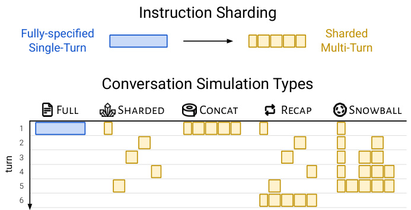
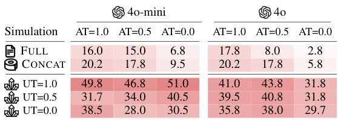
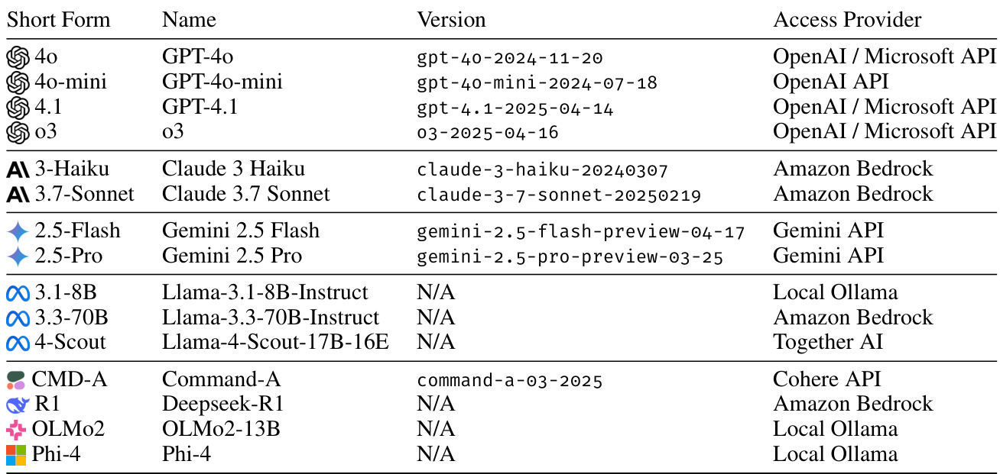

Philippe Laban∗♢
None
ABSTRACT
このセクションでは、大規模言語モデル（LLM）が会話型インターフェースとして持つ潜在能力と、特に複数ターンにわたる会話での課題について論じます。ユーザーがタスクを完全に明確化できない場合でも、LLMは会話を通じて要求の定義、探求、洗練を手助けできる可能性があります。しかし、現状のLLM評価は、情報が一度に全て提供されるシングルターンで、かつ完全に指定された指示の状況に偏っているという問題意識から本研究は出発しています。
初めて登場する用語解説
- 大規模言語モデル (Large Language Models, LLMs): ChatGPTやGeminiのように、大量のテキストデータで学習し、人間と自然な会話をしたり、文章を生成したりできるAIのことです。まるで博識なアシスタントのような存在です。✏️
- 会話型インターフェース (Conversational Interfaces): 人間とAIがチャットのように対話形式で情報をやり取りする仕組みのことです。
- 複数ターンの会話的やり取り (Multi-turn conversational exchange): ユーザーとLLMが一往復だけでなく、複数回にわたって対話を重ねることです。ラリーが続くテニスのようなイメージです。🗣️
- 不完全指定 (Underspecification): ユーザーの指示や質問が曖昧だったり、必要な情報が不足していたりする状態のことです。「美味しいものが食べたい」だけでは、和食か洋食か、予算はいくらかなどが不明瞭な状態を指します。❓
- シングルターン、完全指定の指示設定 (Single-turn, fully-specified instruction setting): ユーザーが1回の発話で、必要な情報を全て明確にLLMに伝える状況です。「東京駅周辺で、予算5000円以内の美味しいイタリアンレストランを教えて」のように具体的です。✔️
本研究の核心：マルチターンの謎に迫る
ユーザーの指示における不完全指定は実際の利用シーンでは頻繁に発生していることがLLMの会話ログ分析から確認されています。それにもかかわらず、LLMの評価の多くは、この現実を反映していません。
そこで本研究では、 大規模なシミュレーション実験を通じて、LLMがシングルターンの状況と、より現実に近い複数ターンの会話状況で、どのようにパフォーマンスが異なるのかを比較・分析しました。
衝撃的な実験結果：LLMは会話が長引くと迷子になる？
マルチターンでの大幅な性能低下
実験の結果、驚くべきことに、テストした主要なオープンウェイトLLM（モデル構造や重みが公開されているもの）およびクローズドウェイトLLM（非公開のもの）の全てが、複数ターンにわたる会話では、シングルターンと比較して性能が著しく低下することが明らかになりました。
具体的には、6つの異なる生成タスク（例：文章作成、プログラミングなど）において、平均して39%もの性能低下が見られました。
関連用語
- オープンウェイトLLM (Open-weight LLMs) / クローズドウェイトLLM (Closed-weight LLMs): モデルの内部情報（重みパラメータ）が公開されているか否かによる分類です。
- 生成タスク (Generation tasks): LLMが新しいテキスト、コード、アイデアなどを自ら作り出す種類のタスクです。
なぜ性能が下がるのか？要因を徹底分析
この性能低下の原因を探るため、20万回以上のシミュレーション会話を分析しました。その結果、性能低下は主に2つの要素に分解できることがわかりました。
適性 (Aptitude) のわずかな低下
LLMがタスクをこなす基本的な能力自体は、マルチターンになってもそれほど大きくは損なわれませんでした。これは、モデルがタスクの本質を理解する力は比較的保たれていることを示唆します。
信頼性 (Unreliability) の著しい増加
一方で、信頼性（一貫して正しい答えを出す能力）は劇的に悪化しました。つまり、マルチターンになると、LLMは時々正しい答えを出せても、安定して良い結果を出すことが非常に難しくなるのです。
図の解説：LLMが会話で迷子になる様子
上の図は、本研究の核心的な発見を視覚的に表現したものです。縦軸はLLMの性能（Aptitude: 適性、Unreliability: 不信頼性）、横軸は様々なLLMモデルを示しています。
- Single-turn (青いバー): 情報が一度に全て与えられる場合。LLMは高い適性（グラフ上部）と低い不信頼性（バーの長さが短い）を示します。つまり、安定して良い性能を発揮します。
- 例：ユーザー「Xを実装してください。[要件1],[要件2],[要件3]もお願いします。」→ LLM「はい、どうぞ！ `def thing(x,y): ...`」 (正解に近い)
- Multi-turn (オレンジのバー): 情報が少しずつ与えられる場合。適性はやや低下（-15%程度）しますが、不信頼性が著しく増加（+772%！）します（バーが非常に長い）。これは、良い時と悪い時の性能の差が非常に大きいことを意味します。
- ユーザー「Xを実装しようとしています。」
- LLM「X'ということですか？」（明確化の試み）
- ユーザー「いいえ、[要件1]が欲しいです。」
- LLM「承知しました！ `def thing(x): ...`」（時期尚早な試み、仮定に基づく）
- ユーザー「[要件3]も必要です。」
- LLM「ああ、その場合はこうです: `def function(x,y): ...`」（誤った仮定）
- ユーザー「もう一つ、[要件2]も入れてもらえますか？」
- LLM「もちろんです、どうぞ: `def function(y,x): ...`」（混乱し、回復できない）
この図が示すのは、LLMが複数ターンの会話で間違った方向に進んでしまうと、道に迷ってしまい、そこから回復できないという「会話で迷子になる (Lost in Conversation)」現象です。
LLMの困った癖：早合点と固執
さらに詳細な分析から、LLMがマルチターン会話で陥りやすい具体的な行動パターンが明らかになりました。
早すぎる最終解答の提示
LLMは、会話の初期段階で情報が不完全なうちから仮定を立て、時期尚早に最終的な解決策を生成しようとする傾向があります。
ユーザー「このデータでグラフを作りたいな…」
LLM「はい、棒グラフです！📈 (まだ種類も指定されてないのに！)」
間違った解答への過度な依存
一度間違った解答や仮定をしてしまうと、その後の会話で新しい情報が提示されても、初期の間違いに固執し、修正できないことが多いです。
ユーザー「やっぱり折れ線グラフがいいな」
LLM「棒グラフに折れ線を追加しました！📊📉 (根本的な変更ができない…)」
要するに、LLMは会話の途中で一度間違った角を曲がってしまうと、迷子になり、元の正しい道に戻ってこられないのです。
このアブストラクトの主要な目的と論旨
問題提起:
- LLMは会話型AIとして大きな可能性を秘めているが、その評価は現実の使われ方（情報が不完全な状態からの複数ターン対話）と乖離している。
- 実際の利用ではユーザーの指示が不完全なことが多いにも関わらず、既存評価はシングルターン・完全指定指示に偏っている。
アプローチ:
- 大規模シミュレーション実験により、LLMのシングルターンとマルチターンでの性能を比較。
主要な発見:
- 全ての主要LLMは、マルチターン会話でシングルターン時より性能が著しく低下する（平均39%減）。
- この性能低下は、「適性の微減」と「信頼性の大幅な増加」に起因する。
- LLMは初期のターンで仮定を立てて早計な解を生成し、それに固執する傾向がある。
- 結論として、「LLMは会話で一度道に迷うと回復できない (Lost in Conversation)」。
1 Introduction
このセクションでは、大規模言語モデル（LLM）が実世界の対話シナリオ、特にユーザーの指示が最初から完全には明確でない「未指定の指示」が複数ターンにわたって与えられる状況で、どのように振る舞うのかという問題に焦点を当てています。現在のLLM評価の主流である「シングルターンで完全に指定された指示」による評価と、実際の使われ方との間にあるギャップを指摘し、このギャップを埋めるための新しい評価アプローチと、それによって明らかになったLLMの課題について概説します。
主な目的は、LLMがマルチターンの未指定な会話で示す性能低下を定量的に評価し、その根本原因を分析することです。そして、主な論旨として、現行の高性能LLMであっても、複数ターンにわたる未指定の指示の下では著しく性能が低下し、いわば「会話の途中で迷子になってしまう」現象が発生することを明らかにします。
LLMの現状と対話インターフェースとしての可能性
現代の大規模言語モデル (LLMs) は、ChatGPT、Gemini、Claudeに代表されるように、強力な対話型インターフェースとして機能します。これにより、ユーザーはLLMと複数回のやり取り（マルチターン会話）を通じて対話できます。
用語解説
大規模言語モデル (LLM: Large Language Models): 大量のテキストデータで訓練され、人間が生成するような自然なテキストを理解したり生成したりする能力を持つAIモデル。例: ChatGPT、Gemini、Claude。
対話型インターフェース (Conversational Interfaces): ユーザーと自然言語（話し言葉や書き言葉）で対話できるシステムやソフトウェアの総称。
マルチターン会話 (Multiple conversation turns): ユーザーとシステム（LLMなど）が、複数回にわたって発言を交わしながら進行する会話。
このような対話形式は、ユーザーが何を必要としているかを明確に知っている場合（つまり、指示で要求を完全に指定できる場合）だけでなく、そうでない場合にも役立つと期待されています。
明確な要求
ユーザーが要求を完全に指定できるケース。
不明確な要求
ユーザーが要求を明確に指定できないケース。対話を通じて要求を明確化する。
後者のケースでは、ユーザーは未指定の指示 (underspecified instruction)から始め、対話を通じて徐々にニーズを明確化していくことができます。実際に、LLMの会話ログを分析した研究[27]では、ユーザーの指示における未指定性 (underspecification)は頻繁に見られることが確認されています。
現状の評価の課題
しかし、LLMシステムの評価は、主にシングルターン (single-turn)で、かつ完全に指定された (fully-specified)設定で行われています。これは実際の使われ方と乖離がある可能性があります。
用語解説
未指定の指示 (Underspecified instruction): ユーザーの要求が曖昧だったり、情報が不足していたりして、完全には明確でない指示のこと。
未指定性 (Underspecification): 指示や情報が完全には特定されておらず、曖昧さや不足がある状態。
シングルターン (Single-turn): ユーザーからの1回の指示（発話）と、それに対するシステムからの1回の応答で完結するやり取り。
完全に指定された (Fully-specified): 指示に必要な情報が全て明確かつ具体的に含まれている状態。
既存研究の問題点：エピソード的タスク
LLMをマルチターンで評価しようとする研究は増えつつありますが（詳細はセクション2で後述）、多くの先行研究では会話をエピソード的 (episodic)に扱っていると、本論文では指摘しています。
エピソード的タスクとは？
会話の各ターンは互いに関連しているかもしれませんが、会話全体としては、それぞれ独立して評価可能なサブタスクの連続として分解できてしまうようなタスクを指します。個々のサブタスクは前のターンの情報を参照するかもしれませんが、タスクの本質はターンごとに区切られています。
本論文の主張
このようなエピソード的なタスクは、人間同士の自然な会話で頻繁に見られる未指定性 [91, 27]という重要な側面から離れてしまっている、と論じています。現実の会話では、情報は徐々に明らかになり、全体として1つの目標に向かうことが多いのです。
本研究の貢献：シャーデッド・シミュレーション
このギャップを埋めるため、本研究ではマルチターンの未指定な会話をシミュレートするための新しい環境、シャーデッド・シミュレーション (sharded simulation)を開発しました。この環境は、既存の高品質なシングルターンベンチマークの指示を利用します。
シャーデッド・シミュレーションの仕組み
既存のシングルターンの完全な指示を、シャーデッド指示 (sharded instructions)に変換します。
これは、元の指示と同じ情報を共同で提供する、より小さな指示（情報のかけら＝シャード）のセットです。元の長い指示を、いくつかの短い部品に分割するイメージです。
会話の各ターンで、最大でも1つのシャード（情報のかけら）だけをLLMに明らかにします。これにより、指示全体が会話を通じて徐々に提示される状況を強制的に作り出します。
指示1 指示2 指示3 ... (徐々に情報開示)
実験結果の概要：性能低下の発見
このシャーデッド・シミュレーションを用いて実験を行った結果、驚くべき事実が明らかになりました。
マルチターン未指定会話での性能
シングルターン性能 (全情報初期提示):
90%
-25 ポイント
マルチターン性能 (情報逐次提示):
65%
(平均値)
この性能低下は、会話がわずか2ターンの場合でも確認され、テストした全てのLLM（小規模なオープンウェイトモデルであるLlama3.1-8B-Instructから、最先端モデルのGemini 2.5 Proまで）で共通して見られました。
性能低下の要因分析
さらに、この性能低下を2つの主要な構成要素に分解して分析しました。
(1) 適性 (Aptitude) の低下
タスクを解くための基本的な能力そのものの低下。
(2) 信頼性の欠如 (Unreliability) の増加
同じ指示でも結果が安定せず、悪い結果が出やすくなること。
分析の結果、興味深い傾向が明らかになりました：
- シングルターン設定: 適性 (Aptitude) が高いモデル（例: GPT-4.1, Gemini 2.5 Pro）は、信頼性 (Reliability) も高い傾向にあります。つまり、元々賢いモデルは安定もしているということです。
- マルチターン設定: 適性 (Aptitude) に関係なく、全てのLLMが非常に高い信頼性の欠如 (Unreliability) を示しました。賢いモデルでも、マルチターンの未指定会話では不安定になるのです。
Lost in Conversation Phenomenon (会話での迷子現象)
この現象を、本論文では「会話での迷子現象 (lost in conversation phenomenon)」と名付けています。これは、LLMがマルチターンの会話で一度間違った解釈や方向に進んでしまうと、そこから抜け出せずに迷子になり、回復できない状況を指します。
迷子現象の原因調査
なぜLLMは「会話で迷子」になってしまうのでしょうか？本研究では、いくつかの原因を調査し、以下の傾向があることを突き止めました。
冗長な応答
LLMは過度に長い応答を生成しがちです。
早すぎる最終解答
その結果、会話の早い段階で最終的な解決策を提案してしまう傾向があります。
誤った仮定
未指定の詳細について誤った仮定を立ててしまいます。
過去の誤りに固執
以前の（誤った）解答の試みに過度に依存してしまいます。
実用と評価のギャップ
本研究の発見は、LLMが実際にどのように使われているか（マルチターン、未指定の指示が多い）と、どのように評価されているか（シングルターン、完全に指定された指示が主流）の間に大きなギャップがあることを強調しています。
AIシステム導入の障壁？
マルチターンの対話における広範な性能低下は、AIシステムの導入が進まない一因である可能性があります [73, 4, 28]。特に、会話の最初から完全で詳細な指示を与えることに慣れていない初心者ユーザー (novice users) [87, 35]にとっては、この問題はより深刻かもしれません。
論文の構成
本論文の残りの部分は以下のように構成されています。
- セクション2: マルチターン評価に関する先行研究との関連で本研究を位置づけます。
- セクション3: 多様な生成タスクにおけるシングルターンおよびマルチターン会話のために構築したシミュレーション環境について説明します。
- セクション4.1: モデルの適性と信頼性を評価するために使用する6つのタスクと指標を紹介します。
- セクション5-6: 15のLLMを用いた主要な実験を定義し、主な結果を分析します。
- セクション7 (Implications): LLMベースの対話製品を開発する組織から、LLMベースシステムのエンドユーザーまで、本研究の意義について議論します。小規模な実験に基づいた実用的な推奨事項を提供し、LLM開発者に対して、将来のモデル改良において適性と共にマルチターンの信頼性を優先するよう具体的な行動を促します。
2 Background and Related Work
このセクションでは、大規模言語モデル（LLM）の評価がこれまでどのように行われてきたか、特にマルチターン会話の評価における課題と既存研究の位置づけを概観します。そして、本研究がどのような問題意識を持ち、従来の研究とどう異なるのかを明確にしていきます。特に「情報不足の指示 (underspecified user instructions)」と「エピソード的会話 (episodic conversations)」というキーワードが、このセクションを理解する上で非常に重要になります。
従来モデルと会話AI評価の変遷
まず、ChatGPTのような現代的なLLMが登場する以前の言語モデルについて見ていきましょう。
旧世代言語モデルの特徴
例えば、BART [45]、GPT-2 [65]、T5 [66] といったモデルは、現代のLLMほど高度なマルチターン会話能力（複数回のやり取りを続ける能力）を備えていませんでした。
補足：マルチターン会話とは？
ユーザーとAIが複数回にわたって対話し、文脈を維持しながら情報をやり取りすることです。例えば、「今日の天気は？」「東京の天気は晴れだよ。」「ありがとう。じゃあ明日は？」といった一連の会話がマルチターン会話にあたります。
そのため、これらのモデルの評価は、主にシングルターンタスク（一問一答形式のタスク）に焦点が当てられていました [79]。
当時の会話AIシステム
当時の会話AIは、これらの言語モデルを部品として活用する特化型システムとして実装されるのが一般的でした [36]。
これらのシステムの評価は、
- 🧑🔬 人手による評価プロトコル [17, 42, 21, 54]
- 🏆 AmazonのAlexa Prizeのようなコンペティション [67]
を通じて行われていました。
旧世代の会話AI評価方法
ChatGPT登場とマルチターン評価への関心の高まり
ChatGPTの急速な普及により、マルチターン評価への関心が一気に高まりました。初期の代表的な取り組みとして、MT-bench [89] があります。
MT-bench [89]
クラウドソーシングによるアノテーションを活用し、LLM-as-a-judge（LLMを評価者として使う）能力を評価しました。
MT-benchに続く研究では、さらに評価の側面が拡張されました。
MT-benchの拡張
- 📏 より長い会話の評価 [37, 18]
- 🔬 評価粒度の細分化 [2]
- 💬 自然さ [72] や ツール使用 [85, 80] といった異なる側面の評価
エピソード的会話と本研究の問題意識
ここが本論文の核心的な主張につながる重要なポイントです。これらの既存研究は、多くの場合「エピソード的会話 (episodic conversations)」をシミュレートしています。
用語解説：エピソード的会話
会話の各ターンが前のターンと関連しつつも、個別のサブタスクとして独立して評価できるような会話形式を指します。つまり、会話全体が一つの大きな流れというよりは、関連する小さなタスクの連続として扱われるイメージです。
ターン1: タスクA
ターン2: タスクB
(タスクAに関連)
ターン3: タスクC
(タスクBに関連)
各タスクは独立して評価可能
本研究では、このエピソード的タスクは、マルチターン会話におけるLLMの性能を過大評価してしまう可能性があると指摘しています（詳細はセクション7.3で後述）。
なぜなら、エピソード的タスクは、ある程度のマルチターン文脈理解を必要とするものの、情報不足のユーザー指示 (underspecified user instructions) に応答するために情報を積極的に統合する必要がないからです。
課題：情報不足の指示への対応
現実世界の人間とAIのコミュニケーションでは、ユーザーの指示が最初から完全に明確であるとは限りません [27]。むしろ、会話の中で徐々に要求が明確になっていく「情報不足の指示」が一般的です。これは、会話における「最小努力の原理 (the principle of least effort)」[91] としても知られる自然な傾向です。
本研究は、この「情報不足」がマルチターン会話におけるLLMの性能に大きな影響を与えることを示します。
🔍 本研究が示すLLMの課題 (情報不足の状況下で)
- 不足情報を補うために早期に仮定を立てる
- 時期尚早に最終的な解決策を提案しようとする
- 新しい情報が提供された際に適応したり軌道修正したりするのが困難
この論文では、「情報不足」を評価設定の中心要素としています。これが既存研究との大きな違いです。
エピソード的評価の枠組みとその限界
マルチターンのエピソード的評価は、モデルの能力をより詳細に評価する方法として位置づけられることがあります。例えば、洗練化 (refinement)、フォローアップ (follow-up)、拡張 (expansion) といったサブタスクのカテゴリを設定することで、より具体的なLLMの振る舞いを研究できます [2, 37, 74, 19, 16, 48, 25]。
このような枠組みでは、マルチターンタスクはシングルターンタスクとは異なり、同じタスクセットでは評価されません。
本研究の主張
この論文では、上記のような枠組みは人為的であり、マルチターン評価の範囲を限定し、LLMのマルチターン能力とシングルターン能力の直接比較を妨げると主張しています。
そこで本研究では、共通のタスクセットに対して、シングルターンとマルチターンの両方の会話シミュレーションを行います。これにより、シングルターン設定からマルチターン設定への性能低下を正確に特定できる制御された実験が可能になります。
本研究のアプローチ：共通タスクによる直接比較
マルチターン評価の難しさと生成タスク
LLMをマルチターン設定で評価することは困難です。なぜなら、会話の軌跡がシングルターンよりもはるかに分岐しやすいからです。
そのため、これまでの研究の多くは、評価設定が比較的単純な分類タスクや短文生成タスクに焦点を当ててきました。
しかし、LLMの主なユースケースは生成的なものです。
プログラミング
例：コーディングアシスタント
自然言語
例：文章作成、要約 [88, 26]
したがって、マルチターン設定での長文生成タスクの評価は不可欠です。これにより、ユーザーがより多くの情報を提供するにつれて、モデルが柔軟に応答を適応させ、洗練させる能力を評価できます。
🎯 本研究の焦点
この研究では、プログラミングと自然言語ドメインの両方で広く使われるシナリオを捉えた生成タスクに限定して焦点を当てています。
ユーザシミュレーションと本研究の立場
マルチターンの実験を大規模に行うためには、ユーザーをシミュレートする必要があります。既存の研究では、様々な方法でユーザーシミュレーションが実装されてきました。
テンプレート依存 [12, 68, 39, 16]
LLM使用 [63, 46, 7, 48]
人間アノテーター [21, 7]
実際のユーザー参加 [67, 38, 11]
実際のユーザーを参加させる方法は、最も自然で現実的な会話が得られますが、スケーラビリティ（大規模実施の容易さ）と再現性（同じ条件で結果を再現できるか）の点でコストがかかります。
本研究でのアプローチ
この研究では、LLMベースのシミュレータを採用し、制御された柔軟性と分岐を可能にしています。
注意点：シミュレーションの限界
完全に自動化されたシミュレーションは、本研究の知見の範囲を限定します。シミュレートされた会話は、人間とAIの実際の会話を代表するものではありません。
したがって、このシミュレーションは、ユーザーの振る舞いを研究するのではなく、マルチターン設定におけるLLMの振る舞いを研究するためのツールとして位置づけています。
さらに、セクション9（Limitations）で詳述するように、このシミュレーションフレームワークは単純化され、理想化されていると論じられています。例えば、
- ✅ 会話はタスクを解決するのに十分な情報で終わることが保証されている。
- 🛡️ シミュレータは、現実世界で起こりうる予期せぬ行動（例：脱線）を制限する。
これらの選択は、本研究で観察された性能低下が、現実世界の情報不足のマルチターン人間AI会話で起こるであろう低下よりもおそらく過小評価であることを示唆しています。
補足Aでは、特に情報不足のコミュニケーションに焦点を当てた他の関連研究を紹介しています。
セクション2のまとめ
このセクションでは、LLM評価の歴史的背景、特にマルチターン会話評価の進化と課題を概観しました。従来の研究の多くが「エピソード的会話」に焦点を当てていたのに対し、本研究は現実のコミュニケーションで頻繁に見られる「情報不足の指示」下でのLLMの振る舞いに着目し、その評価を試みるという独自性を強調しました。LLMベースのユーザーシミュレータを用いることで、制御された環境下での大規模な実験を可能にしていますが、その限界も認識しつつ、LLMのマルチターン性能低下の要因を探るための基盤を提示しています。
3 Simulating Underspecified, Multi-Turn Conversation
このセクションでは、大規模言語モデル（LLM）が、複数ターンにわたる、情報が小出しにされる曖昧な（underspecified）会話において、どのように振る舞うかを評価するためのシミュレーション環境を構築する方法について説明します。現実世界の対話では、ユーザーは最初から全ての情報を提示するとは限らず、対話を通じて徐々に要求を明確にしていくことがよくあります。このような状況を再現し、LLMの性能を精密に測定することが本セクションの主な目的です。
📌 このセクションのキーポイント
- 既存のシングルターンのベンチマークタスクを再利用して、複数ターン会話の評価を行います。
- シャーディングプロセス (Sharding Process)：元の完全に指定された指示（fully-specified instructions）を、より小さな情報の断片であるシャード化された指示 (sharded instructions)に変換します。
- シャーディングシミュレーション環境：シャード化された指示に基づいて、複数ターンの会話をシミュレートし、LLMの応答を評価します。
このシミュレーション環境を通じて、LLMが情報を段階的に受け取り、文脈を維持し、曖昧さに対処する能力を詳細に分析することを目指します。
3.1 Sharding Process: From Fully-Specified to Sharded Instructions
複数ターンの曖昧な会話をシミュレートするための第一歩は、既存の完全に指定された指示を、会話の各ターンで少しずつ情報を提示できる形式に変換することです。この変換プロセスをシャーディングプロセスと呼びます。
シャーディングされた指示 (Sharded Instruction)とは？
元の完全な指示を、複数の小さな情報の断片、すなわちシャード (shard)に分割したものです。各シャードは、元の指示に含まれる情報を一つずつ提示するように設計されています。
- 最初のシャード (Shard 1): 会話の口火を切り、指示全体の包括的な意図（例：「〜する方法を教えて」）を伝えます。
- 後続のシャード: それぞれが元の指示に関する追加の明確化情報や条件（例：「ただし、〜という制約がある」「〜も考慮してほしい」）を提供します。
これらのシャードを全て合わせると、元の完全指定命令と同じ情報量になりますが、その情報が会話のターンごとに分割して提示される点が異なります。
例として、数学の問題解決タスクであるGSM8K [14] から取られた元の完全指定命令と、それに対応するシャード化された命令を以下に示します（図2参照）。
図2: ペアになった指示
Fully-Specified Instruction (original)
(a) 元のGSM8K命令 (Original GSM8K instruction)
Jay is making snowballs to prepare for a snowball fight with his sister. He can build 20 snowballs in an hour, but 2 melt every 15 minutes. How long will it take before he has 60 snowballs?
(日本語訳: ジェイは妹との雪合戦の準備のために雪玉を作っています。彼は1時間に20個の雪玉を作ることができますが、15分ごとに2個溶けてしまいます。彼が60個の雪玉を作るのにどれくらい時間がかかりますか？)
この元の指示は、単一の長い発話で、課題の目的（「どれくらい時間がかかるか」）、文脈（雪玉作り、能力、溶ける条件）、そして最終目標（60個の雪玉）といった全ての情報を一度に提示しています。
Equivalent Sharded Instruction
(b) 等価なシャード化された命令 (Equivalent Sharded Instruction)
(論文中では具体的なシャード化の例が図2の(b)として記載されていますが、ここでのテキストでは省略されています。代わりに、その構造について説明します。)
シャード化された命令は、以下のように複数のシャードから構成されます:
- Shard 1 ジェイが雪玉を作るのにかかる時間を知りたい。
- Shard 2 彼は妹と雪合戦の準備をしている。
- Shard 3 1時間に20個の雪玉を作れる。
- Shard 4 ただし、15分ごとに2個溶けてしまう。
- Shard 5 最終的に60個の雪玉が必要。
(これは論文の趣旨に沿った架空のシャード化例です)
シャード化された命令では、各シャードが元の指示の要素を一つずつ段階的に導入します。例えば、最初のシャードで大まかな目的を伝え、続くシャードで詳細な条件や背景情報を加えていくイメージです。
シャード化された命令の妥当性
シャード化された命令が元の指示と等価であり、実験に使える「妥当な」ものであるためには、いくつかの重要な特性を満たす必要があります。これらの特性に関するより正確で数学的な定義は、論文の付録Bで詳述されています。そこでは、シャード化された命令が満たすべき5つの主要な特性が定義されています。
このようなシャード化された指示を大規模に作成するため、本研究では半自動のシャーディングプロセスを開発しました。このプロセスは、LLMによる自動処理と人間によるレビューを組み合わせたもので、詳細は論文の付録Cに記載されています。このプロセスにより、実験で使用するシャード化された指示が、定義された特性を一貫して満たしていることを保証しています。
3.2 Simulating Sharded Conversations
シャード化された指示を作成した後、次はその指示を使って、複数ターンにわたる曖昧な会話をシミュレートします。このシミュレーションプロセスを図3に示します。
図3: シャーディングされた会話のシミュレーション図
図3は、シャード化された指示に基づく複数ターンの曖昧な会話のシミュレーションプロセスを表しています。この会話シミュレーションには、主に3つの役割が登場します。
アシスタント (Assistant)
シミュレーションで評価される対象のLLMです。（図3では赤色で強調表示）
ユーザー (User Simulator)
別のLLMによってシミュレートされます。シャード化された指示全体を把握しており、会話の各ターンでシャードをアシスタントに提示する役割を担います。
システム (System)
アシスタントの応答を分類し、評価します。
会話シミュレーションの流れ
1. 最初のターン
- ユーザーシミュレータが指示の最初のシャード (Shard 1) をアシスタントに提示します。
- アシスタントは自由形式のテキストで応答を生成します。
- システムがアシスタントの応答を分析し、以下の7つの応答戦略のいずれかに分類します（Herlihy et al. [27]の研究に基づく）。
- もしアシスタントが解答試行（明示的で完全な形式の解決策を提案）を生成した場合：
- 解答抽出コンポーネント (Answer Extractor) が、アシスタントの自由形式の応答の中から解答に対応する部分（例: コード片、数値など）を特定します。このステップは、LLMが解答に余分な情報（説明文や追加の質問など）を付け加えることがあり、それが評価の妨げになるのを防ぐために必要です。
- 抽出された解答は、タスク固有の評価関数 (evaluator function)によって採点されます。
2. 後続のターン
同様のパターンが繰り返されます。
- 各ターンで、ユーザーシミュレータは最大1つの情報シャードを提示します。
- アシスタントは自由に応答します。
- 応答が解答試行として分類された場合、評価が行われます。
3. 会話の終了
以下のいずれかの条件が満たされると会話は終了します。
- タスク評価者が、アシスタントの解答試行が正しいと評価した場合。
- 新しいターンの開始時点で、ユーザーシミュレータが会話で提示できるシャードを全て使い果たした場合。
ユーザーシミュレータの賢さ
予備実験を通じて、評価対象のアシスタントがしばしば指示の特定のシャードに関連する明確化の質問をすることが明らかになりました。このため、会話の次のターンでどのシャードを提示するかというユーザーシミュレータの判断は非常に重要です。その判断は、それまでの会話の文脈を考慮に入れる必要があります。
そこで、本研究ではユーザーシミュレータを、低コストのLLM（具体的には GPT-4o-mini）として実装しています。このシミュレータは以下の能力を持ちます：
- シャード化された指示全体と、それまでの会話の履歴にアクセスできます。
- 進行中のシミュレートされた会話に最も自然に適合する次のシャードを選択します。
- 選択したシャードの情報を変えずに、会話の流れに自然に収まるように言い換えます。
📝 シミュレートされたシャード化会話の具体例は、論文の付録Jで確認できます。
アシスタントへの情報提供の制約
評価対象のアシスタントは、ユーザーシミュレータからのメッセージ以外に、最初のターンの前にタスク遂行に必要な最小限のシステム指示（例：データベースのスキーマ情報、利用可能なAPIツールのリストなど）を受け取ります。
重要な点： アシスタントには、自分が複数ターンで曖昧な情報を提示される会話に参加していることは明示的に知らされません。また、特定の会話戦略（例：積極的に質問する、情報を要約するなど）を追求するよう促されることもありません。
このような制約を設ける理由は、実世界の応用場面では、LLMがどのような状況で使われるか事前に詳細な情報が与えられることは稀だからです。したがって、本研究では評価対象のアシスタントモデルに設定に関する特別な情報を与えず、そのデフォルトの振る舞いを評価することを目指しています。
ユーザーシミュレータだけでなく、戦略分類器 (Strategy Classifier) や 解答抽出コンポーネント (Answer Extractor) も、プロンプトベースのGPT-4o-miniで実装されています。LLMベースのコンポーネントを使用することで、より現実に近い動的なシミュレーションが可能になりますが、同時にシミュレーションエラーが発生する可能性も避けられません。これらのエラーは実験結果の妥当性に影響を与えうるため、その影響範囲を把握するために、数百件のシミュレートされた会話について詳細な手動アノテーション（southworth2023developingdを参照）を行いました。
シミュレーションエラーの分析結果
手動アノテーションの労力とその結果の詳細は、論文の付録Dに記載されています。要約すると以下の通りです：
- ユーザーシミュレータ、戦略分類器、または解答抽出に起因するエラーが発生したのは、検査した会話の5%未満でした。
- これらのエラーがアシスタントモデルにとって不利に働いたのは、会話の2%未満でした。
これらの結果から、ここで説明したプロセスは、シャード化された指示に基づいて複数ターンの曖昧な会話を正確にシミュレートできると結論付けています。本研究の実験における会話シミュレーションは、このプロセスに依拠しています。
3.3 Simulation Types
シャード化された指示を利用して、本研究では5つの異なるタイプのシングルターンまたは複数ターンの会話をシミュレートします。これらのシミュレーションタイプを図4に示します。それぞれのタイプとその実験における目的を説明します。
図4: シャード化された指示に基づく会話シミュレーションのタイプ
図4が示すように、元の完全に指定された指示（青いブロック）がシャード化されると（黄色いブロックのセット）、これらの「シャード」を使って、シングルターン（FULL, CONCAT）または複数ターン（SHARDED, RECAP, SNOWBALL）の会話をシミュレートできます。これにより、情報の開示のペースが変わります。
📄 FULLY-SPECIFIED (FULL)
タイプ: シングルターン、完全指定会話
方法: 元の完全な指示が最初のターンでLLMに提供されます。
目的: タスクにおけるモデルのベースライン性能を評価します。
例：ユーザー「AとBとCという条件でXをしてください。」→ LLM「はい、Yです。」
🧩 SHARDED
タイプ: 複数ターン、曖昧な会話
方法: 上記（セクション3.2）で概説した方法でシミュレートされます。各ターンでシャードが1つずつ提示されます。
目的: 曖昧な複数ターン会話におけるモデルの性能を評価するための主要なツールです。
例：ユーザー「Xをしたいです。」
LLM「わかりました。何か条件はありますか？」
ユーザー「Aという条件があります。」
LLM「承知しました。他にBは？」
ユーザー「はい、Bもです。あとCも。」
LLM「では、Yです。」
🖇️ CONCAT
タイプ: シングルターン、完全指定会話（シャード化指示ベース）
方法: 全てのシャードを箇条書き形式（各行に1シャード）で連結し、単一の指示としてLLMに提供します。その際、「全ての箇条書きを考慮してタスクを完了してください」という指示が先行します。
目的:
- FULLとSHARDEDの論理的な中間点です。曖昧さは除去されていますが（FULLと同様）、指示のシャード化中に行われた言い換えは保持されています（SHARDEDと同様）。
- 検証用のベースラインとして機能します。もしモデルがFULLとCONCATの両方で成功し、SHARDEDで失敗する場合、その原因はシャーディングプロセス中の言い換え（情報損失の可能性）ではなく、特に会話の曖昧さと複数ターン性にあると推測できます。
例：ユーザー「以下の条件でXをしてください：\n- A\n- B\n- C」→ LLM「はい、Yです。」
🔄 RECAP
タイプ: 複数ターン会話 + 最終要約ターン
方法: SHARDED会話と同様に進行しますが、最後に最終要約ターン (final recapitulation turn) が追加されます。このターンでは、指示の全てのシャードが単一のターンで再度提示され、LLMに応答する最後の機会が与えられます。
目的:
- SHARDEDシミュレーションの後にCONCATターンが続く組み合わせです。
- セクション7.1で、このような概念的に単純なエージェント風の介入が、SHARDED会話で見られる性能低下を緩和できるかどうかを評価する方法として検討されます。
例：(SHARDED会話後)...
ユーザー「これまでの情報をまとめると、A、B、Cという条件でXをしてほしいということです。最終的な回答をお願いします。」→ LLM「はい、Yです。」
☃️ SNOWBALL
タイプ: 複数ターン会話（ターン毎の累積的要約）
方法: RECAPシミュレーションをさらに進め、ターンレベルの要約 (turn-level recapitulation) を実装します。各ターンで、ユーザーシミュレータは新しいシャードを導入するだけでなく、それまでに会話で明らかにされた全てのシャードを再提示します。これにより、各ターンが前のターンの全ての情報に加えて新しいシャードを一つ明らかにするという雪だるま効果が生じます。
目的:
- SNOWBALLシミュレーションで実装される冗長性は、ターンレベルのリマインダーが、LLMが複数ターンの文脈にわたって情報を記憶する必要性を軽減するのに役立つかどうかを研究するために、セクション7.1で手法として検討されます。
例：
T1 ユーザー「Xをしたいです。条件はAです。」
LLM「...」
T2 ユーザー「以前お伝えしたAに加えて、Bという条件もあります。」
LLM「...」
T3 ユーザー「これまでのAとBに加えて、Cも条件です。」
LLM「では、Yです。」
参考: 論文中の表 (Figure 5)
論文のFigure 5には、本研究で扱われる各タスク（プログラミング言語生成、自然言語生成など）における元の指示とシャード化された指示の具体例が示されています。これには、コード生成、データベース操作、API呼び出し、数学問題、データからのテキスト生成、要約といったタスクが含まれます。各タスクの指示ソースや評価指標も併せて記載されており、このシミュレーションフレームワークの多様な適用可能性を示しています。
(注: このHTMLではFigure 5の画像は直接挿入されていませんが、論文原文を参照することで、これらの具体例を確認できます。)
4 Task and Metric Selection
このセクションでは、大規模なシミュレーション実験で使用するタスクと、モデルの性能を測るための評価指標をどのように選定したかについて詳しく説明します。これらの選定は、LLM（大規模言語モデル）がマルチターンの会話、特に情報が少しずつ与えられる状況（underspecified conversation）でどのような振る舞いをするかを正確に評価するための基盤となります。
このセクションのポイント
- タスクの選定 (Task Selection): どのような種類のタスクを、どのように準備したか。
- 評価指標の選定 (Metric Selection): モデルの性能を多角的に評価するために、どのような指標を導入したか。
4.1 Task Selection
LLMのマルチターン会話能力を評価するために、6つの異なるタスクに対してシャーディングされた指示 (sharded instructions) を構築しました。これらの指示は、大規模なシミュレーション実験で使用されます。
用語解説：シャーディングされた指示 (Sharded Instructions)
「シャーディングされた指示」とは、元々1つのまとまった指示（fully-specified instruction）を、複数の小さな情報単位（シャード）に分割したものです。これにより、マルチターンの会話の中で、情報を段階的にLLMに提示するシミュレーションが可能になります。各シャードは、元の指示の一部分の情報を持ちます。
各タスクについて、高品質なシングルターン（1回のやり取りで完結する）、かつ完全に情報が指定されたベンチマークから指示を選び出し、半自動のシャーディングプロセスを実装しました。
半自動シャーディングプロセス
このシャーディングプロセス（詳細はAppendix Cで概説されています）により、元の指示の有効性を保ちつつ、シャーディングされた指示のコーパス（大量のテキストデータ群）を大規模に構築することができました。
各タスクに対して、90～120個のシャーディングされた指示を作成しました。これらはそれぞれ、元のシングルターンの指示とペアになっています。この作業には、タスクごとに1～4時間の手動による検査と注釈付けが必要でした。
タスク選定のポイント: プログラミングと非プログラミングのユースケースにまたがる、一般的で多様な生成タスクを慎重に選びました。
論文中の図5 (Figure 5) は、ここで紹介する各タスクについて、元の指示（Original Instruction）とシャーディングされた指示（Sharded Instruction）の具体例を示しています。以下に各タスクを紹介します。
Code (コード生成)
アシスタントは、ユーザーがPythonプログラミング言語で関数を作成するのを支援します。
- データソース: HumanEval [10], LiveCodeBench [31] (LLMのプログラミング能力評価で人気のベンチマーク)
Database (データベース操作)
アシスタントは、SQLデータベースのスキーマと自然言語でのユーザークエリを与えられ、要求された情報をデータベースから取得するためのSQLクエリを生成します（いわゆるtext-to-SQLタスク）。
- データソース: Spider [86] (人気のデータセット)
Actions (API呼び出し)
アシスタントは、一連のAPI（Application Programming Interface）スキーマと、API使用を必要とするユーザー指示を与えられ、ユーザーリクエストに合致するプログラム的なAPIコマンドを生成します。
- データソース: Berkeley Function Calling Leaderboard (BFCL) [85] (LLMのAPI関数呼び出し能力測定で人気のベンチマーク)
Math (算数問題)
アシスタントは、初等的な算数の文章問題を与えられ、基本的な算術演算を用いた一連の計算を行い、数値の答えを導き出します。
- データソース: GSM8K [14]
Data-to-text (データからのテキスト生成)
アシスタントは、表形式データと関連するメタデータのいくつかの要素を与えられ、そのデータについて説明するキャプション（自然言語の文）を生成します。
- データソース: ToTTo [59] (このデータセットを活用してシャーディング指示を作成)
Summary (要約)
アシスタントは、約20の文書群とユーザークエリを受け取り、文書に基づいてクエリに対応する引用付きの要約を生成します。
- データソース: Summary of a Haystack [40] (この指示を再利用)
- 📌 特徴: この要約タスクは、長文脈処理能力 (long-context capabilities) をテストする唯一のタスクです。指示は数万トークンに及び、これはモデルの性能を低下させることが知られています [29, 32, 33]。
タスクの評価方法
各タスクについて、元のベンチマークで使用されている評価指標を再利用しました。
バイナリ正解性 (Binary Correctness) で評価するタスク:
- Code
- Database
- Actions
- Math
これらのタスクでは、解答の試み（コード、SQLクエリ）を実行するか、参照解答との意味的等価性 (semantic equivalence)（API呼び出し、数値解答）を検証することで、正解か不正解かを判断します。
連続値スコア (0-100) で評価するタスク (Refinement Tasks):
- Data-to-Text: BLEUスコア [58] を使用。
- Summary: 要約の情報網羅性と帰属の正確さを測定するために構築されたカスタムのLLM-as-a-judge評価指標 ("Joint Score") [40] を使用。
スコアの共通化: 全てのタスクでスコアが共通の尺度（0-100）になるように、バイナリの正解性をマッピングしました ($0 = \text{不正解}$, $100 = \text{正解}$)。これにより、結果の集約が容易になります。
Appendix I には、各タスクのシャーディングプロセスの実装詳細（サンプル選択プロセスや、再現性を促進するために実装されたタスク固有のロジックを含む）が記載されています。私たちは、選択した6つのタスクが広範なLLMユースケースを代表することを意図しましたが、シャーディングプロセス自体を本研究の貢献の一つと考えているため、その効率化と再現性の確保にも努めました。将来的に、LLM評価の実務者が自身のデータセット成果物をシャーディングし、より多様でユニークな設定でLLMのマルチターン行動を研究できるようになることを想定しています。
4.2 Metric Selection
LLMは、テキストを生成する際に確率的プロセス (stochastic process) を採用しています。LLMの生成パラメータをデフォルト（例：温度 \(T = 1.0\)）に設定すると、同じ会話状態であっても、LLMは多くの異なる応答を生成します。この特性を利用して、特定の指示に対してシミュレーションを繰り返し行い、発生する変動を観察します。
用語解説：確率的プロセス (Stochastic Process)
結果がランダム性を含むプロセスのことです。LLMの場合、次に出現する単語を確率分布に基づいて選択するため、同じ入力に対しても異なる出力が得られることがあります。「温度 (Temperature)」というパラメータは、このランダム性の度合いを調整します。温度が高いほど、より多様で創造的な（しかし時には予測しにくい）テキストが生成されやすくなります。
各シミュレーションは、シミュレーション終了までにLLMがタスクを完了した成功の度合いを評価するスコア \(S_i\)（0～100の範囲）を算出します。ある指示に対して \(N\) 回のシミュレーションを実行して得られたスコアの集合 \(\mathcal{S} = \{ S_i \}_{i=1}^N\) に基づいて、以下の3つの評価指標を定義します。
平均性能 (Averaged Performance: \(\overline{P}\))
特定のシミュレーションタイプにおける、ある指示に対するモデルの平均スコアの不偏推定値です。
適性 (Aptitude: \(A^{90}\))
特定の指示に対するモデルの90パーセンタイルスコアの推定値です。実施されたシミュレーションの上位10%で得られるスコアを推定する、最良ケースの指標です。
不安定性 (Unreliability: \(U_{10}^{90}\))
90パーセンタイル推定値と10パーセンタイル推定値の間の百分位数間範囲の推定値です。最良ケースと最悪ケースのシミュレーション間のギャップを測定し、LLMの確率性に起因する応答品質の低下レベルを示します。
指標の適用範囲と用語
- これらの指標は、指示ごとに計算され、指示のコーパス全体で平均化することで、コーパスレベルの指標を得ることができます。
- 論文の残りの部分では、信頼性 (Reliability) と不安定性 (Unreliability) を同じ意味で用いることがあり、信頼性は \(R_{10}^{90} = 100 - U_{10}^{90}\) として定義されます。
- また、表記を簡略化し、適性を \(A\)、不安定性を \(U\) としますが、これらの指標は他のパーセンタイル閾値（例：\(A^{80}\) や \(U_5^{95}\)）にも一般化できます。
📝 Appendix Eでは、平均性能 (\(\overline{P}\)) が90%から60%に低下する平均的な劣化が、適性の低下、信頼性の低下、またはその両方の組み合わせによるものであるかの具体例を検討しています。
📊 最後に、論文中の図6a (Figure 6a) は、適性 (Aptitude) と不安定性 (Unreliability) の指標を、スコアの箱ひげ図の視覚化と関連付けています。要約すると：
- 箱ひげ図の上側のひげの高さが適性 (A) を表します。
- 箱ひげ図の上側と下側のひげの間の距離が不安定性 (U) を表します。
視覚的理解: 適性は「モデルがどれだけ良い成績を出せるか（ベストケースに近い能力）」を示し、不安定性は「成績のばらつきがどれだけ大きいか（結果の安定性）」を示すと考えると分かりやすいでしょう。
5 Simulation Scale and Parameters
このセクションの目的: このセクションでは、論文で実施された大規模なシミュレーション実験の全体像と設定詳細を明らかにします。具体的には、どのようなデータセット、会話形式、LLMモデルを使って実験が行われたのか、そしてどのようなパラメータが用いられたのかを説明します。これにより、後続のセクションで提示される実験結果の信頼性と妥当性を理解するための基礎を築きます。
実験の全体構成
この主要なシミュレーション実験は、非常に大規模なものとなっています。以下にその概要を示します。
使用した命令 (Instructions)
6つの異なるタスクにわたり、合計600の命令をシャード化 (情報を細かく分割) して使用しました。
会話タイプ (3種類)
以下の3つの異なるタイプの会話でシミュレーションを行いました。
- FULL: 元の完全な情報を一度にLLMに提供するシングルターンの会話。
- $\circledcirc$ CONCAT: シャード化された全ての情報を連結し、一度にLLMに提供するシングルターンの会話。
- $a \textcircled { \times } 1$ SHARDED: シャード化された情報を1ターンに1つずつ、段階的にLLMに提供するマルチターンの会話。
実験対象LLM
合計で15種類の主要な大規模言語モデル (LLM) を実験対象としました。
シミュレーション回数
各LLMと各会話タイプの組み合わせに対して、それぞれ \(N=10\) 回 のシミュレーションを実行しました。
総会話数: これにより、シミュレートされた会話の総数は、なんと 200,000回以上 にも及びます！膨大なデータから、LLMの振る舞いを詳細に分析します。
シミュレーションパラメータ
全てのシミュレーションは、基本的にデフォルトの温度設定である \(T=1\) で実施されました。温度 \(T\) は、LLMの応答のランダム性を制御するパラメータです。
- \(T=1\): 比較的ランダム性が高く、多様な応答が生成されやすい設定です。
- \(T=0\): ランダム性が最も低く、決定論的な（毎回ほぼ同じ）応答が生成されやすい設定です。
補足実験
ただし、本論文のセクション7.2では、この温度 \(T\) がLLMの適性 (Aptitude) と信頼性 (Reliability) にどのような影響を与えるかを調査するための補足実験も行われています。この主要実験では \(T=1\) が標準とされています。
表1の解説: LLMの平均パフォーマンス ${ \overline { { P } } }$
この表は、実験結果の主要な概要を示しています。以下、各項目の意味を解説します。
- タスク (Tasks): Code (コード生成), Database (データベースクエリ生成), Actions (API呼び出し生成), Data-to-text (データからのテキスト生成), Math (数学問題解決), Summary (要約生成) の6つのタスク。
- 会話設定 (Conversation Settings): 各タスクについて、FULL, CONCAT, SHARDED の3つの設定で会話がシミュレートされました。
- モデルの並び順: 表内のモデルは、全タスクを通じた FULL設定での平均スコアが低い順 (昇順) に並べられています。つまり、表の上部ほどFULL設定での性能が低いモデル、下部ほど性能が高いモデルとなります。
- 背景色: 背景色は、FULL設定と比較してどれだけパフォーマンスが低下したか (Degradation) を示しています。色が濃いほど、低下が大きいことを意味します。
- 最後の2列:
- CONCAT vs FULL (%): FULL設定と比較したCONCAT設定でのパフォーマンス低下率の平均 (6タスク全体)。
- SHARDED vs FULL (%): FULL設定と比較したSHARDED設定でのパフォーマンス低下率の平均 (6タスク全体)。
この表から読み取れる主な傾向 (詳細はセクション6で議論されます)
一般的に、FULL設定に比べてCONCAT設定ではパフォーマンス低下は軽微ですが、SHARDED設定では大幅なパフォーマンス低下が見られることが予想されます。これは、マルチターンの情報提示がLLMにとって難しい課題であることを示唆しています。
繰り返しシミュレーションの意義
各 (LLM, 命令, 会話タイプ) の組み合わせに対して 10回の会話をシミュレートすることは、実験コストを10倍に増加させます。しかし、これには重要な利点があります。
平均パフォーマンス $(\overline{P})$ の正確な測定
複数回の試行により、偶然による影響を排し、より信頼性の高い平均性能を測定できます。
適性 (Aptitude) と信頼性 (Reliability) の詳細な分析
単なる平均性能だけでなく、LLMシステムが持つ潜在的な最高性能 (適性) や、性能のばらつき (信頼性) についても深く調査することが可能になります。これについては、セクション6.2で詳しく議論されます。
選択されたLLMモデル
この実験では、合計15のLLMが8つの異なるモデルファミリーから選ばれました。選択の背景には、いくつかの重要な意図があります。
$\textcircled{5}$ OpenAI
GPT-4o-mini, GPT-4o [30], o3 [57], GPT-4.1
Anthropic
Claude 3 Haiku, Claude 3.7 Sonnet
Google’s $^ { + }$ Gemini [75]
Gemini 2.5 Flash, Gemini $2 . 5 \mathrm { P r o } \rangle$
Meta’s $\infty$ Llama [23]
Llama3.1-8B-Instruct, Llama3.3-70B-Instruct, Llama 4 Scout
AI21 Labs
OLMo-2-13B [56]
Microsoft
Phi-4 [1]
$\ntrianglelefteq$ Deepseek-R1 [24]
$\yen 1$ Cohere Command-A [15]
モデル選択の基準
最先端モデル優先: 最新かつ高性能なモデルの評価を重視。
多様なモデルサイズ: 小規模モデル (例: 8Bパラメータ) から大規模モデル (例: 300B+パラメータ) まで幅広く含める。
オープン vs クローズド: オープンウェイトモデル (重みが公開されている) とクローズドウェイトモデル (重みが非公開) の両方を含める。
推論モデルの包含: 2つの推論モデル (reasoning models) である o3 と R1 を含めました。これらのモデルは、応答を生成する際に内部的により多くの思考ステップ（テスト時計算量）を経るように設計されています。これにより、追加の思考時間がマルチターン会話能力にどのような影響を与えるかを調査します。
モデルのバージョン情報やアクセス方法の詳細は、論文の付録H (Appendix H) に記載されています。
推定コスト
これらの大規模なシミュレーションを実施するための総コストは、約 $5,000 と見積もられています。これは、API利用料や計算資源のコストを反映しています。
このセクションのキーポイント
このセクションでは、実験がいかに広範囲で系統的に行われたかを説明しています。
- 多様なタスクと命令: 6タスク、600命令。
- 比較のための会話タイプ: FULL, CONCAT, SHARDED の3タイプ。
- 幅広いLLM選定: 15種類のモデル（サイズ、公開状況、推論能力など多様）。
- 繰り返しによる信頼性確保: 各条件で10回のシミュレーション。
- 標準化された温度設定: \(T=1\) を基本としつつ、補足実験も実施。
これらの設定により、LLMがマルチターンの情報提示の断片化 (sharding) や不完全性 (underspecification) にどのように対処するかを詳細に評価する基盤が整えられています。
6 Results
このセクションでは、本研究で実施された大規模シミュレーション実験から得られた主要な結果を報告します。具体的には、大規模言語モデル（LLM）が完全な情報を一度に与えられた場合（FULL設定、単一ターン）と、情報を段階的に断片化して与えられた場合（SHARDED設定、複数ターン、情報不足）で、タスク遂行能力がどのように変化するのかを詳細に分析します。
中心的な発見は「Lost in Conversation」と名付けられた現象です。これは、非常に高性能なLLMでさえも、複数ターンにわたる情報が不完全な会話では著しく性能が低下することを示しています。この性能低下を、モデルの根本的な問題解決能力である「適性 (Aptitude: A)」と、安定して性能を発揮できるかを示す「信頼性 (Reliability)」（本論文ではその逆の指標である「信頼性の低さ (Unreliability: U)」）という2つの側面から掘り下げていきます。さらに、情報が提示される細かさ（粒度）がこの「Lost in Conversation」現象にどのように影響するのかを探る追加実験（Gradual Sharding Experiment）の結果も示します。
6.1 Average Performance Findings
このサブセクションでは、シミュレーション実験における各LLMの平均的なパフォーマンスについて報告します。特に、Table 1にまとめられた結果を中心に解説します。（注意：実際のTable 1の図はここでは表示されていませんが、論文中の記述に基づいて内容を説明します。）
Table 1 の概要
Table 1は、実験対象となった15種類のLLMが、6つの異なるタスク（Code, Database, Actions, Data-to-Text, Math, Summary）において、3つの異なる会話シミュレーション設定（FULL, CONCAT, SHARDED）でどのような平均性能 $(\overline{P})$ を示したかをまとめたものです。モデルは、タスク全体の平均FULLスコアが低い順に並べられています。表内の背景色は、FULL設定からの性能低下の度合いを示しており、色が濃いほど低下が大きいことを意味します。最後の2列は、CONCAT設定とSHARDED設定それぞれについて、FULL設定と比較した際の性能低下率を6タスクで平均したものです。
「Lost in Conversation」現象の発見
まず最も注目すべきは、全てのモデルが全てのタスクにおいて、FULL設定（完全な指示を一度に提示）からSHARDED設定（指示を断片化し複数ターンで提示）へ移行すると、性能が著しく低下するという点です。その低下幅は平均で39%にも及びます。
Lost in Conversation 重要概念
実験室のような理想的な環境（完全指定、単一ターン）では素晴らしい性能（例: 90%以上）を発揮するモデルが、全く同じタスクであっても、会話が情報不足で複数ターンにわたる、より現実的な設定になると性能が大幅に低下する現象を指します。
CONCAT設定との比較：情報損失は主な原因ではない
CONCAT設定（断片化された指示を連結し、単一ターンで全て提示）では、モデルの性能はFULL設定の平均95.1%を維持しました。このことは、SHARDED設定での性能低下が、指示を断片化したことによる情報の欠落や変化が主な原因ではないことを示唆しています。もし情報損失が原因であれば、CONCAT設定でも同様の大きな性能低下が見られるはずだからです。
小規模モデルの傾向
Llama3.1-8B-Instruct, OLMo-2-13B, Claude 3 Haikuといった比較的小さなモデルは、CONCAT設定での性能低下が他の大規模モデルよりも顕著でした（86-92%程度）。これは、小規模モデルが大規模モデルほど汎化能力が高くないこと、つまり、指示の些細な言い換え（shardingプロセスで発生しうる）に対して性能がより影響を受けやすいことを示していると考えられます。この言い換えに対する頑健性の欠如は、Table 1で視覚的にも確認できます（論文参照）。具体的には、CONCAT設定での性能低下を示す赤色の背景が、表の上部（比較的弱いモデル）でより顕著に、下部（比較的強いモデル）では薄くなっています。
モデルの性能と「Lost in Conversation」効果
Table 1の最後の列 $(\ntrianglerighteq ) / \not \in$ は、各モデルにおける「Lost in Conversation」効果の大きさ、つまりSHARDED設定での性能低下の度合いを6タスクで集計したものです。驚くべきことに、Claude 3.7 Sonnet, Gemini 2.5, GPT-4.1のような高性能モデルも、Llama3.1-8B-InstructやPhi-4のような小規模モデルと比較して同程度に「会話に迷う」ことが分かりました。これらの高性能モデルも平均で約30%の性能低下を示しています。
この一見矛盾する結果の一因は、評価指標の定義にあります。小規模モデルは元々FULL設定での絶対スコアが低いため、高性能モデルに比べて性能が低下する「余地」が小さいのです。結論として、LLMの単一ターン性能がいかに高くても、複数ターン設定では大きな性能低下が見られるということです。
タスク特化型の性能維持
タスクごとの詳細を見ると、一部のモデルは特定のタスクにおいて性能低下が比較的緩やかでした。例えば、
- Command-A は Actions タスクで最も低下が少ない。
- Claude 3.7 Sonnet と GPT-4.1 は Code タスクで性能をよく維持。
- Gemini 2.5 Pro は Data-to-Text タスクで性能をよく維持。
この発見は、モデルの複数ターン処理能力がドメイン間で均一ではないことを示しており、モデルの能力を多角的に調査するためには広範なタスクでのベンチマークが重要であることを裏付けています。
テスト時計算量（推論トークン）の影響
実験に含まれる2つの推論モデル（o3, Deepseek-R1）も、推論を行わない他のモデルと同様の性能低下を示しました。この結果は、テスト時の追加計算（推論トークンを多く使うこと）だけでは、モデルが複数ターンの情報不足な会話をうまく乗り切る役には立たないことを示しています。
この潜在的な根本原因として、本分析では、推論モデルがより長い応答を生成する傾向があることを特定しました（平均して非推論LLMより33%長い）。Appendix Fで詳述するように、アシスタントの応答が長いほど、より多くの仮定 (assumptions) を含みがちです。これらの仮定は、ユーザーが提示した要件とモデル自身が前のターンで生成した応答内容を混同させ、会話を脱線させる可能性があります。
ポイント: 長い応答 ➡️ より多くの仮定 ➡️ 会話の混乱 ➡️ 性能低下
6.2 Aptitude vs. Reliability Analysis
Table 1では平均性能低下 $(\overline{P})$ を示しましたが、ここではモデルの「適性 (Aptitude: A)」と「信頼性の低さ (Unreliability: U)」という2つの指標に基づいた分析結果を報告します。これらの指標は、LLMの応答のばらつきを考慮して性能を評価するために導入されました（Section 4.2参照）。
適性 (Aptitude: A) とは？
ある指示に対して複数回シミュレーションを行った際のスコアの90パーセンタイル値。モデルが達成しうる「最良ケースに近い」性能を示します。高いほど良いです。
\( A^{90} = \mathrm{percentile}_{90}(S) \)
信頼性の低さ (Unreliability: U) とは？
ある指示に対して複数回シミュレーションを行った際のスコアの90パーセンタイル値と10パーセンタイル値の差。性能のばらつきの大きさを示し、「最良ケース」と「最悪ケースに近い」性能の間のギャップを表します。低いほど信頼性が高い（つまり、ばらつきが少ない）ことを意味します。
\( U_{10}^{90} = \mathrm{percentile}_{90}(S) - \mathrm{percentile}_{10}(S) \)
（論文中では、信頼性 $R_{10}^{90} = 100 - U_{10}^{90}$ とも定義されています。）

図6b: 15のLLMにおける信頼性分析結果の視覚的要約。縦軸が適性(A)、横軸が信頼性の低さ(U)を表し、各点がモデルに対応します。左上の領域（高適性、低信頼性の低さ＝高信頼性）が理想的です。
Figure 6bは、実験対象の15のLLMについて行った信頼性分析の結果を視覚的にまとめたものです。
単一ターン設定（FULL, CONCAT）での傾向
FULLとCONCATの2つの単一ターン設定を見ると、適性が高いモデル（Aが高い）ほど、信頼性も高い（Uが低い）傾向が見られます。例えば、最も適性が高い2つのモデル（GPT-4.1とGemini 2.5 Pro）は、最も信頼性の低さが低い（つまり最も信頼性が高い）結果を示しています。逆に、適性が最も低い2つのモデル（Llama3.1-8B-InstructとOLMo-2-13B）は、最も信頼性が低い（Uが高い）結果となりました。
コミュニティでの既知の事実
この「単一ターンでは高適性モデルほど高信頼性」という傾向は、LLMコミュニティではある程度知られています。より優れたモデルは、入力や出力のわずかな変動に対してより頑健であるため、プロンプトエンジニアリングの工夫が少なくて済む、という議論がなされています[47]。
複数ターン設定（SHARDED）での異なる様相
SHARDED設定では、状況は一変します。
- 適性の低下: モデルの適性(A)は、FULL設定からSHARDED設定へ移行すると平均で16%低下しますが、これは比較的軽微な低下と言えます。
- 信頼性の低さの急増: 一方で、信頼性の低さ(U)は平均で112%も増加し、2倍以上に悪化します。
さらに興味深いのは、より優れたモデル（適性が高いモデル）は複数ターンでもやや高い適性を維持する傾向があるものの、全てのモデルがほぼ同レベルの高い信頼性の低さ(U)を示すという点です。言い換えると、情報不足な複数ターン設定では、テストした全てのモデルが非常に低い信頼性を示し、ある固定された指示に対するシミュレーション結果で、最良の場合と最悪の場合で性能が平均50パーセントポイントも低下しました。
「Lost in Conversation」現象の再定義 重要概念
単一ターン設定と複数ターン設定を比較すると、大きな平均性能低下 $(\overline{P})$ は、主としてモデルの信頼性の低さ(U)の大幅な増加によって引き起こされており、適性(A)の低下による影響は比較的小さいことが分かりました。つまり、モデルは基本的な能力を失うわけではないが、状況によって性能が非常に不安定になる、ということです。
「Lost in Conversation」の潜在的な根本原因
Appendix Fでは、モデルが会話に迷う潜在的な根本原因について探求しています。具体的には以下の4つの原因が特定されています（詳細はAppendix Fを参照）。
- 1早すぎる回答の試み (Premature Answer Attempts): LLMは、問題の詳細が不明確な段階で完全な回答を性急に提案し、その際に立てた仮定が後の混乱を招く (Appendix F.1)。
- 2以前の誤った回答への過度な依存 (Over-reliance on Previous Incorrect Attempts): 以前の（誤った）回答の試みに過度に依存し、結果としてより長く「肥大化した (bloated)」回答を生成してしまう (Section F.2)。
- 3会話の最初と最後のターンへの過度な調整 (Over-adjustment to First and Last Turns): 会話の最初と最後のターンに基づいて回答を過度に調整し、中間のターンの情報が失われる「loss-of-middle-turns」現象が見られる (Appendix F.3)。
- 4過度に冗長な回答 (Overly Verbose Answers): 過度に冗長な回答を生成し、これがユーザーの発言から注意をそらすような仮定を導入してしまう可能性が高い (Section F.4)。
6.3 Gradual Sharding Experiment
このサブセクションでは、「Lost in Conversation」現象と情報の断片化の「粒度」との関係を探るために行われた「Gradual Sharding Experiment（段階的シャーディング実験）」の結果について報告します。
実験の動機: 現実的な会話とのギャップ
これまでのSHARDED設定で行われた複数ターン会話のシミュレーションは、ユーザーがLLMと行う現実の情報不足な会話を完全に代表しているわけではありません。特に以下の2点が、現実的でない、あるいはモデルにとって不利（adversarial）に見える可能性があります。
- シャーディングされた指示の最大性 (P3): 指示の断片（シャード）は、可能な限り細かく分割されなければならないという制約（Property P3）。
- 1ターン1シャードの制約: シミュレートされたユーザーは、1ターンにつき最大1つのシャードしか情報を開示しないという制約（Section 3.2）。
実際、先行研究[27]では、公開されているLLMのチャットログにおいて、軽微な情報不足と深刻な情報不足が同程度の割合で出現することがわかっています。そこで、本実験では、情報の断片化の度合い（シャードの数）を変えながら性能変化を観察します。
段階的シャーディング実験の設計
この実験では、元の実験から複数のタスクにまたがる31個の指示を選択しました。そして、それぞれのシャード化された指示を、シャードセットのサイズが2から8シャードまで増加するように、7種類のシャード化された指示に拡張しました。
実験設計のポイント
指示の選択とシャーディングのプロセスはAppendix Kで詳述されています。重要なのは、各シャードセットサイズ（1から8まで）において、タスクの複雑さは固定されており、変更される唯一の要因はシャーディングの粒度（細かさ）である点です。
- 1シャード: 全情報を一度に提示 (CONCAT設定に相当)
- 2〜8シャード: 情報を2〜8個の断片に分割して複数ターンで提示
図6c: 段階的シャーディング実験の結果。横軸がシャードの数、縦軸が性能を示します。適性(Aptitude)は比較的安定しているのに対し、信頼性の低さ(Unreliability)がシャード数2以上で急増している様子が分かります。
実験結果の概要
Figure 6cに、GPT-4oとGPT-4o-miniの2つのモデルを用いた段階的シャーディング実験の結果がまとめられています。
主な発見は、両モデルとも、2シャード以上の指示から「Lost in Conversation」現象（適性の軽微な低下と信頼性の低さの大幅な増加）を示すということです。言い換えれば、この実験結果は、情報不足を伴い、かつ2ターン以上続く会話であれば、どんなものでもモデルが「会話に迷う」ことを示唆しています。
ユーザーにとっての意味:
情報をどの程度の細かさで指定するかは、モデルの信頼性に大きな影響を与えません。全ての情報を一度に（1シャードで）提供することが、信頼性を向上させる唯一の効果的な方法であると言えます。
つまり、途中で情報を小出しにするよりも、最初からできるだけ多くの情報をまとめて伝える方が、LLMは安定して良い結果を出しやすいということです。
「Lost in Conversation」発生の閾値
この実験から、シャード数が1（全情報一括提示）から2（最小限の分割）に変わるだけで、モデルの信頼性が急激に低下することが示されました。これは、複数ターンにわたる情報の統合という行為自体が、現在のLLMにとって大きな課題であることを意味しています。
シャーディングの粒度の影響は小さい
シャード数を2から8へと増やしていっても、信頼性の低さは既に高いレベルにあり、そこから劇的に悪化したり改善したりするわけではありません。これは、一度「複数ターンで情報を追う」モードに入ると、その情報の分割の度合いよりも、複数ターンであること自体が問題となる可能性を示唆しています。
7 Implications (示唆)
このセクションでは、本研究の実験結果と分析から得られた知見が、大規模言語モデル（LLM）の応用システムやエージェントを構築する人々、LLMそのものを開発する人々、自然言語処理（NLP）の研究者、そして実際に対話型AIシステムを利用するユーザーにとって、それぞれどのような重要な意味を持つのかを掘り下げて考察します。🔍
具体的には、LLMがマルチターンの会話で情報をどのように処理し、どのような課題があるのか、そしてそれに対して各々の立場でどのように対処・改善していけるのか、具体的な提言や注意点を提示します。このセクションを読むことで、LLMをより効果的に活用し、また将来のLLM開発の方向性を考える上でのヒントが得られるでしょう。✨
7.1 Implications for System and Agent Builders (システムおよびエージェント構築者への示唆)
LLMを活用したアプリケーションを開発する際、私たちはしばしば複雑なタスクに直面します。例えば、問題を細かく分解したり、関連情報を探し出したり、外部ツールを使ったり、特定の行動を指示したりといった具合です。これらの処理は、エージェントフレームワーク（例えば、AutoGen [84] や LangChain [8] のようなもの）によってオーケストレーションされるのが一般的です。エージェントフレームワークは、システム開発者がLLMの呼び出しを個々の部品（ブロック）のように組み合わせて、一連の処理の流れ（ワークフロー）を作るのを助けます。
🤔 ここで一つの疑問が生まれます。もしエージェントフレームワークがユーザーとのやり取りをうまく調整し、LLMを単に一度きりの処理（シングルターンオペレーター）として使えるなら、LLM自体に複雑な複数回のやり取り（マルチターン）をこなす能力は本当に必要なのでしょうか？ エージェントが肩代わりできるなら、LLMはもっと単純で良いのでは？
この疑問に答えるため、私たちは2種類のエージェント風の会話シミュレーション方法を試してみました：RECAP と SNOWBALL です。どちらの方法も、ユーザーの発言をLLMに渡す前に前処理を行います。
- RECAP: 基本的には以前説明した SHARDED シミュレーションと同じように会話が進みますが、最後に特別なユーザーターンが追加されます。このターンでは、それまでの全てのユーザーの発言が要約されてLLMに伝えられます。
- SNOWBALL: こちらはもっと段階的に情報を積み重ねていく方法です。各ターンで、ユーザーシミュレーターは新しい情報のかけら（シャード）を提示すると同時に、それまでに提示された全てのシャードを再度繰り返します。雪だるま式に情報が増えていくイメージです。
これらのシミュレーションタイプの目的は、過去のユーザーの発言情報を繰り返し提示することで、その情報をLLMにとってより目立たせ、LLMがその冗長性（redundancy）を利用して応答の質を改善する機会を与えることです。
（実験の詳細については、論文のAppendix Mを参照してください。）
表2の解説：RECAPとSNOWBALL戦略を用いた追加実験結果
この表は、4つのタスク（コード生成、データベース操作、数学問題、アクション実行）において、2つのモデル（GPT-4o, GPT-4o-mini）で実験した結果をまとめたものです。RECAPとSNOWBALLは、どちらもユーザーターンの情報を繰り返すことで、モデルが会話の途中で混乱する（"lost in conversations"）のを軽減しようとする戦略です。
結果を見ると、RECAPもSNOWBALLも、元のSHARDEDシミュレーションと比較していくらかの改善効果を示しています。しかし、それでも全ての情報を最初から与えるFULLや、シャード化された情報をまとめて一度に与えるCONCATの性能には及びませんでした。
RECAPはSNOWBALLよりも良い結果を出していますが、RECAPは会話の最後のターンで介入を行うため、実際のユーザーとのやり取りでは最後のターンがいつ来るか事前に分からないので、非現実的な設定である点に注意が必要です。
一方、SNOWBALLは、ユーザーターンの情報を繰り返し提示することで達成可能な現実的な性能向上の度合いを示唆しています。具体的には、FULL設定からSHARDED設定への性能低下を 15～20% 程度軽減できることが分かりました。
結論として…
エージェント風のフレームワークに情報処理を頼るだけでは限界があるかもしれません。私たちは、LLM自体がネイティブにマルチターン対話をサポートする能力を持つべきだと主張します。これにより、より自然で効果的なユーザーインタラクションが実現できるでしょう。📝
7.2 Implications for LLM Builders (LLM構築者への示唆)
LLMの能力向上、つまり、より複雑な知的タスクを達成できるようにするためには、これまで多くの努力が注がれてきました。最近では、LLMが数学オリンピックで競争したり、「人類最後の試験（Humanity’s Last Exam）」[62] と名付けられたベンチマークで博士課程レベルの技術的な問題を解決できることが示されています。📚
本研究からの呼びかけ
私たちはLLM構築者に対し、彼らが構築するモデルの信頼性 (reliability) を優先するよう強く求めます。私たちの実験は、LLMによるテキスト生成に伴うランダム性が、テストした全てのモデルにおいて壊滅的な信頼性の低さを引き起こし、結果として平均的なLLMユーザーが目にする応答の質を低下させていることを示しています。📉
LLMは確率的なシステムであり、温度 (temperature)のようなパラメータを使ってテキスト生成時のランダム性の度合いを調整できます。ここで、「温度を最低設定（例：T=0）にすれば、生成プロセスがより決定的（完全にではないですが）になるため、信頼性の問題は実質的に解決するのではないか？」という議論が考えられます。🤔
この点を評価するため、私たちは追加実験を行いました。アシスタントが応答を生成する際の温度（AT: Assistant Temperature）を1.0、0.5、0.0の3つの値に変化させました。さらに、SHARDEDシミュレーションではLLMベースのユーザーシミュレーターを使用するため、ユーザー側の温度（UT: User Temperature）も同様に3つの値で変化させました。
（実験の詳細、サンプル選択、シミュレーション規模については、論文のAppendix Lを参照してください。）
表3の解説：アシスタント温度 (AT) とユーザー温度 (UT) を変更した際のモデルの非信頼性
この表は、FULL、CONCAT、SHARDEDの各設定において、アシスタントの応答生成温度（AT）とユーザーシミュレーターの温度（UT）を変化させた場合のモデルの非信頼性 (Unreliability, U9010) を示しています。数値が低いほど、信頼性が高い（つまり非信頼性が低い）ことを意味します。
- 📄 FULL および CONCAT 設定 (表の最初の2行): GPT-4o-miniとGPT-4oの両モデルで、アシスタント温度 (AT) を下げると信頼性が大幅に向上しました。具体的には、非信頼性 (U9010) が約50%低下しました。これは、シングルターンの状況では温度を下げることが信頼性向上に繋がることを示しています。
- 🔄 SHARDED 設定: こちらの結果はより深刻です。
- GPT-4o-miniでは、アシスタント温度 (AT) を下げても、どのユーザー温度 (UT) 設定においても信頼性の改善は見られませんでした。
- GPT-4oでは、わずかな改善 (15-20%程度) しか見られませんでした。
- 驚くべきことに、ユーザーとアシスタントの両方の温度を0.0に設定しても、依然として約30%という高い非信頼性が残りました。
理論上、言語モデルは温度 T=0.0 で決定的であるべきですが、現代のLLMでは実際にはそうではないことが知られています（詳細はAppendix Nで議論）。大まかに言うと、シングルターンの会話は逸脱の余地が限られています。しかし、マルチターンの会話では、初期のターンでのわずか1トークンの違いが、その後の会話全体に連鎖的な逸脱を引き起こす可能性があります。これが、我々が観察した非信頼性の停滞の原因と考えられます。🌪️
結論と提言
マルチターン対話が関わる設定では、応答生成時にLLMの温度を低く設定することは、システム全体の信頼性向上には効果がないことが分かりました。
そこで、私たちはLLM構築者に対して、モデルの能力 (aptitude) と信頼性 (reliability) を同時に最適化することを提案し、挑戦を促します。信頼性の高いLLMとは、以下の条件を満たすべきです：
- 1 シングルターンとマルチターンの両方の設定で、同程度のタスク達成能力を示すこと。
- 2 マルチターン設定において、非信頼性が小さいこと (具体的には U9010 < 15)。
- 3 これらの性能を、標準的な温度設定 (T=1.0など、調整されていない状態) で達成できること。これは、基盤となる言語モデルが、言語生成において自然に発生する多様な変動に対応できることを示すものです。
これらの目標を達成することが、LLMをより実用的で頼りになるツールにするための鍵となります。🔑
7.3 Implications for NLP Practitioners (NLP研究者への示唆)
私たちの実験は、同じ指示内容であっても、シングルターン（一度の指示で完結）とマルチターン（複数回のやり取りで情報を補完）の設定では、モデルの振る舞いが大きく異なることを示しています。例えば、性能や信頼性が大幅に低下するといった重要な違いが見られました。これはNLP研究者にとって注目すべき点です。🔬
私たちが最初に選んだ6つのタスクは、プログラミングから複数文書の要約まで、幅広い種類の生成タスクをカバーするように意図しました。しかし、これらのタスクセットにはいくつかの限界があります。例えば、主に英語の指示に焦点を当てている点や、分析的な（つまり、創造的ではない）タスクが中心である点です。✍️
私たちは、シャーディングプロセス（指示を小さな情報単位に分割するプロセス）を効率的に行うために努力しました。LLMで処理できる部分は自動化しつつ、品質を確保するために手作業での検証と最終確認も行いました。このシャーディングプロセス（詳細はAppendix C参照）は、100個のシャード化された指示を準備し最終化するのに、平均して著者1人あたり3時間の手作業（プロンプトの調整や内容の検査など）が必要でした。⏳
NLP研究者への提案
私たちはNLPの研究者の皆さんに、シャーディングという手法を試してみて、皆さんが使っているタスクや指示セットの「シャード化バージョン」を作成し、従来の完全な形で指定されたバージョンと併せて公開することを推奨します。これにより、マルチターン環境下でのモデル評価がより進むと期待されます。🚀
新しいタスクにシャーディングを適用することの実現可能性を示し、シャーディングに適したタスクの条件を理解するために、私たちは7番目のタスクとして翻訳 (Translation) タスクのシャード化指示を準備しました。
翻訳タスクの詳細
このタスクは、ドイツ語の文書（10文）を英語に翻訳するものです。WMT 2019の文書レベル翻訳データセット [70] からペア文書を利用しました。
- SHARDED設定: 各ターンで、翻訳元のドイツ語文書から新たに追加の2文が提示されます。アシスタントは、その時点までに提示された全ての文を翻訳するよう求められます。
- FULL設定 & CONCAT設定: 最初のターンで文書全体（10文全て）が提示されます。
評価には、標準的なBLEUスコア [58] を用いました。
（具体的な実装詳細はAppendix Iに記載されています。）
表4の解説：翻訳タスクにおける性能 (FULL, CONCAT, SHARDEDシミュレーション)
この表は、翻訳タスクにおける各シミュレーション設定での性能（BLEUスコア）を示しています。
テストした両モデル（GPT-4o-mini と GPT-4o）は、SHARDED設定でも性能の低下を示しませんでした。全てのシミュレーション設定において、BLEUスコアの差は10%以内でした。📊
この結果から、以下の2点が考えられます：
- 過去の研究では翻訳を文書レベルで捉えるものもありましたが [64]、実際にはこの翻訳タスクは大部分が文レベルで達成可能であること。
- BLEUスコア自体が、文書レベルの細かなニュアンスを十分に捉えられていない可能性 [52]。
つまり、タスクがエピソード的 (episodic) である場合（すなわち、ターンごとのサブタスクに分解できる場合）、モデルはマルチターンの文脈全体を複雑に処理しなくても、各サブタスクを個別に完了することで会話中に「迷子」になるのを避けられるのです。要するに、このSHARDED翻訳タスクは、情報が不足している（underspecified）状態ではないマルチターン会話をシミュレートしていると言えます。🧩
次に、マルチターン設定でモデルが会話中に「迷子」になりやすいと考えられるタスクの特性を挙げます：
1. 生成的タスク (Generative Tasks)
情報を抽出する質問応答（extractive QA）や分類タスクとは異なり、新しいコンテンツの編集や洗練を伴うタスク（例：文章作成、コーディング）は、モデルが混乱しやすくなります。
2. 十分な複雑性 (Sufficient Complexity)
タスクが複数の明確な仕様を含み、それらが多数のシャード（情報のかけら）を生み出す程度に複雑であるべきです。例えば、「1+1を計算するPythonプログラムを書け」という指示は、シャード化するには単純すぎます。
3. 非分解可能な解 (Non-decomposable Solution)
解決策や答えが、個々の部分に分解できない性質を持つべきです。つまり、新しいシャードが提示されると、解決策全体が修正されるようなタスクです（翻訳タスクでは、追加のシャードは既存の翻訳に追加するだけなので、これとは異なります）。
仮説
上記の3つの特性を持つタスクでLLMをテストした場合、SHARDEDシミュレーションにおいて平均性能と信頼性が大幅に低下し、モデルは会話中に「迷子」になりやすいと私たちは仮説を立てています。今後の研究でこの仮説を検証していくことが重要です。🧪
7.4 Implications for Users of Conversational Systems (対話型システムのユーザーへの示唆)
LLMベースの製品を利用するユーザーは、特にマルチターン設定（複数回のやり取り）において、LLMの信頼性が低い可能性があることを認識しておく必要があります。一般的に利用可能な生成技術はまだ新しく、過去の研究でもLLMが生成するテキストのランダム性がユーザーにとって混乱の原因となる点が指摘されています [55, 81, 77, 43]。😵
LLMベースのシステムとのやり取りを最大限に活用するために、2つの実用的な推奨事項を提案します。👇
1. 時間が許せば、やり直してみる (If time allows, try again)
もしLLMとの会話が期待した結果に至らなかった場合、進行中の会話を続けるよりも、同じ情報を繰り返して新しい会話を始める方が、大幅に良い結果が得られる可能性があります。これは、現在のLLMが会話の途中で「迷子」になることがあり、私たちの実験でも、迷子になったモデルとの会話を続けても効果がないことが示されているためです。さらに、LLMはランダム性をもってテキストを生成するため、新しい会話では改善された結果が得られるかもしれません。🔄
2. やり直す前に、情報を整理・統合する (Consolidate before retrying)
LLMは複数のターンに分散した情報を扱うのが苦手なため、指示の要件を一つの指示にまとめることは、モデルの能力と信頼性を向上させる効果的な戦略です（これはCONCAT実験の結果からも示唆されます）。ユーザーがモデルが会話中に迷子になっていることに気づいたら、LLMに「これまでに私が伝えたことを全てまとめてください」と依頼し、その応答を新しい会話に持ち込むことで、手動で情報をまとめる手間を省くことができます。✍️
実際、LLMベースのアプリケーションの初期の採用者は、LLMが会話中に迷子になることを認識しているという逸話的な証拠があります。例えば、CursorというLLMベースのコーディング環境のユーザーは、ツールが会話を無期限に続けられるにもかかわらず、「できる限り頻繁に」新しい会話を作成することが、高品質な応答を確保するための推奨戦略であると報告しています。3
現状の課題と将来への期待
これらの2つの推奨事項は、依然としてユーザーにとって手間がかかり、根本的な解決策というよりは応急処置的なものに過ぎません。🩹 将来的にLLMがマルチターンの会話をより確実に扱えるようになれば、このような推奨事項の必要性は薄れ、ユーザーはモデルが会話中に迷子になるリスクを低減しつつ、複数のターンにわたって情報が不足した指示を自然に伝えることができるようになるはずです。🌟
3: Cursorユーザーの報告に関する注釈は論文本文の脚注を参照。
8 Conclusion
この論文の締めくくりとして、私たちが実施した研究から得られた核心的な発見と、それが示唆する今後の展望、特に大規模言語モデル（LLM）開発者への重要な提言を明確にまとめます。
本研究の核心：LLMの会話能力の深掘り
本研究では、現代のAI技術の中核をなす大規模言語モデル（LLM）が、人間とどのように対話するかに焦点を当てました。具体的には、シングルターン会話（ユーザーとLLMが一往復で完結する単純なやり取り）と、より複雑なマルチターン会話（複数回にわたる連続的なやり取り）の両方について、大規模かつ体系的なシミュレーション実験を実施しました。
シングルターン会話
例：「今日の天気は？」→「晴れです」
マルチターン会話
例：「旅行プランを立てたい」→「どこへ？」→「沖縄」→「何泊？」...
衝撃の発見：マルチターン会話での性能低下
実験の結果、驚くべき事実が明らかになりました。特定のタスク群において、LLMのパフォーマンスは、マルチターンで、かつユーザーからの指示や情報が不十分な設定（underspecified settings）において、著しく低下することが確認されたのです。
用語解説：「Underspecified settings」とは？
これは、ユーザーがタスクを依頼する際に、必要な情報全てを最初から明確に伝えない状況を指します。例えば、「このデータで何か面白い分析をして」といった曖昧な指示から始まり、会話を通じて徐々に詳細を詰めていくようなケースです。現実のコミュニケーションでは頻繁に起こり得ますね。✏️
このパフォーマンス低下は、まるでLLMが「会話の途中で道に迷ってしまう」かのような現象として現れます。この「迷子」状態は、モデルの信頼性の大幅な低下という形で具体化します。その主な原因は以下の通りです：
文脈維持の困難
複数の会話ターンを跨いで、重要な文脈情報（以前のやり取りの内容）を正確に記憶・活用し続けるのに苦労する。
時期尚早な仮定
まだ情報が不十分な段階で、ユーザーの意図や必要な詳細について早まった仮定をしてしまう。
過去応答への過度な依存
自身が以前に生成した応答（それが誤りを含んでいても）に過度に固執し、新しい情報に基づいて柔軟に修正できない。
その結果、LLMはユーザーの期待から外れた応答をしてしまい、信頼性が大きく損なわれるのです...
既存の対策は効果薄：追加実験からの示唆
私たちはさらに、このマルチターン会話における性能低下問題に対して、既知の改善策が有効かどうかを検証する追加実験を行いました。具体的には、以下のような手法を試しました。
エージェント風の連結 (Agent-like concatenation)
これは、会話の履歴全体を毎回LLMへの入力に含めることで、文脈を強制的に維持させようとするアプローチです。より単純な設定では効果が確認されています。📝
生成時の温度パラメータ低下 (Decreasing temperature)
LLMがテキストを生成する際の「温度 (temperature)」パラメータを下げることで、より決定的で予測可能な応答を促す手法です。温度が高いと創造的で多様な応答が、低いと事実に基づいた一貫性のある応答が出やすくなります。🌡️
結果：既存策はマルチターンでは力不足
しかし、これらの改善策は、マルチターン設定においては効果が限定的であることが判明しました。つまり、単純な状況で上手くいった方法も、複雑な会話の文脈ではLLMの「迷子」を防ぐには至らなかったのです。
LLM開発者の皆様へ：緊急提言
この研究結果を踏まえ、私たちはLLMの開発者の方々に対し、
マルチターン設定におけるモデルの信頼性向上
を、今後の開発における最優先課題の一つとして取り組むことを強く求めます。
ユーザーが本当に頼れるAIアシスタントを実現するために、
「賢さ」だけでなく「一貫性」と「信頼性」
を備えたLLMの開発が不可欠です。
この結論が、より良い対話型AIの未来に向けた一歩となることを願っています。
9 Limitations
このセクションでは、本研究が持ついくつかの限界について詳細に説明します。これらの限界点を認識することは、本研究の成果を正しく理解し、今後の研究の方向性を定める上で非常に重要です。主な論点は以下の3つに集約されます。
- 全自動シミュレーションへの依存: LLMを用いたユーザーシミュレーションは実験の大規模化・効率化に貢献しましたが、実際の人間とAIの対話とは異なる特性を持つ可能性があります。
- 分析タスクへの集中: 実験対象を分析的なタスクに限定したため、クリエイティブなタスクなど、より自由度の高い対話におけるLLMの挙動については未検証です。
- テキストのみ・英語のみのタスク: 英語のテキストデータに限定したため、他の言語やマルチモーダルな情報（画像、音声など）を含むタスクへの一般化可能性は今後の課題です。
これらの限界を踏まえ、本研究の結果を慎重に解釈し、さらなる研究へと繋げていく必要があります。
9.1 全自動シミュレーションへの依存
この研究の最初の、そして重要な限界点は、完全に自動化されたシミュレーションに依存しているという点です。我々は、大規模言語モデル（LLM）を用いてユーザーの発話をシミュレートする手法を採用しました。これにより、実験の規模を拡大し、同じシミュレーションを複数回実行することが可能になりました。これは、実際の人間を実験参加者として動員する場合には、コストの観点から非常に困難です。
LLMによるユーザーシミュレーションのメリット
なぜLLMでユーザーをシミュレートしたのでしょうか？主な理由は以下の通りです。
- スケーラビリティ: 多数の対話シナリオを生成し、大規模な実験が可能です。
- 再現性: 条件を統制し、同じ実験を何度も繰り返すことができます。
- コスト効率: 人間の参加者を募るよりも低コストで実験を実施できます。
しかし、このアプローチにはトレードオフが存在します。LLMによって生成されたシミュレーションは、残念ながら実際の人間とAI間の自然な会話を忠実に反映しているわけではありません。
シミュレーションと現実の会話とのギャップ
シミュレートされた会話は、いくつかの要因により、現実の会話の複雑さや多様性を完全には捉えきれていません。
シャーディングプロセス（詳細は論文付録Cで定義されています。簡単に言うと、元の複雑な指示を小さな情報単位「シャード」に分割するプロセスです）の特性や、シミュレーション環境（論文セクション3.2で詳述）の設計により、シミュレートされた会話は、現実の会話と比較してかなり限定的で画一的な構造に従う傾向があります。このため、大規模で多様な実際のユーザー集団で見られるような、広範な会話のダイナミクスをモデル化できていない可能性が高いです。
画一的な会話構造
シミュレーションは、設計されたルール（シャーディングプロセスや環境設定）に厳密に従うため、会話の流れがある程度予測可能なものになります。
多様なユーザー行動の欠如
実際のユーザーが見せる予期せぬ質問、話題の転換、誤解、感情表現といった多様な行動パターンをシミュレーションで再現するのは困難です。
具体的に、シミュレーションプロセスには以下のような制約があり、これらが現実の会話との乖離を生んでいます。
情報の逐次開示の厳密さ
シミュレーションでは、各対話ターンで新しい情報のかけら（シャード）が1つだけ開示され、会話の最終ターンにはタスクを完了するために必要な全ての情報が指定されることが保証されています。しかし、実際のユーザーとの対話では、ユーザーが情報を出し惜しみしたり、逆に一度に多くの情報を伝えたり、途中で話題を変えたりと、このような整然とした情報開示が行われるとは限りません。
現実のユーザーなら…
「あ、そういえばこれも必要だった！」と後から情報を追加したり、「えっと、何から話せばいいかな…」と一度に情報を整理して伝えられなかったりすることがよくあります。
会話範囲の制限 (シャーディング特性による)
シャーディングプロセスの特性であるP1 (情報保存)、P2 (明確な初期意図)、そしてP5 (最小限の変換)（これらは論文付録Bで詳細に定義されています）も、シミュレートされる会話の範囲を制限する一因となっています。これらの特性により、シャード化された指示は既存の完全に指定された指示と内容的に非常に近しくなり、会話の高レベルな意図（目的）は常に最初のターンで特定されるように設計されています。
シャーディングの特性 (付録Bより)
- P1 情報保存: 元の指示に含まれる、タスク完了に必要な情報がシャーディングプロセス中に失われないこと。
- P2 明確な初期意図: 最初のシャードが、会話全体の高レベルな目的（例：「Python関数を書いて」）を定義すること。
- P5 最小限の変換: シャード化の際に、元の指示の言語や意味をできるだけ変えず、P1-P4の特性を満たすための変更に留めること。
シャードの「最小性」の非現実性
各シャードが持つ情報の「最小性」も、現実の会話と比較すると非現実的であり、ある意味ではモデルにとって意図的に不利（adversarial）な設定と言えるかもしれません。ただし、段階的シャーディング実験（論文6.3節）では、シャードの粒度（細かさ）が異なっていても、会話が2ターン以上に及ぶと、LLMの性能低下の度合いは同程度になることが示唆されています。つまり、情報が少しずつ与えられるという状況自体が、LLMにとって課題となるようです。
シャードの粒度以外にも、自動シミュレーションには、人間が会話に参加する場合に生じうる微妙なニュアンスが欠けています。例えば、以下のような状況です。
人間との会話におけるニュアンスの例
- 専門用語の誤解: ユーザーとAI間で、特定の言葉の解釈が食い違う。
- システムの失敗によるフラストレーションからの離脱 [82]: AIの応答が期待外れだったり、エラーが続いたりすると、ユーザーはイライラして会話を諦めてしまう。
- 特定の会話における実現可能な最終目標の欠如: 例えば、ユーザーが未解決問題の解決策を求めるなど、そもそもAIが達成不可能な要求をする。
これらの要因を考慮すると、我々が実施したシミュレーションは、LLMのマルチターン対話能力を試すための、比較的「穏やかな（benign）」テスト環境であったと考えられます。シミュレーションの条件は、現実の複雑な対話状況に比べて過度に単純化されているためです。
この過度な単純化を考慮すると、本実験で観察されたLLMの性能低下は、LLMの信頼性の低さ、そして実際の場面でLLMが会話中に「迷子」になる頻度を過小評価している可能性が高いと我々は考えています。これらの実験は、マルチターン環境におけるLLMを研究するための、スケーラブルで低コストな実験環境として機能しますが、その限界を認識することが重要です。
シミュレーションの役割
本研究のシミュレーションは、現実の対話を完全に再現するものではなく、LLMが複数ターンにわたる情報提供にどのように応答するか、その基本的な能力と限界を、制御された環境下で調査するための「実験場」としての意味合いが強いです。
9.2 分析タスクへの集中
本研究の2番目の限界点は、分析的なタスクに焦点を当てていることです。我々は、プログラミングタスクと自然言語タスクの両方から多様なタスクセットを選びましたが、実験対象を分析的な解決策を伴うタスクに限定しました。
分析的タスクとは？
明確な正解や最適な解決策が存在し、論理的な思考や計算、データの解釈などを通じてその解に到達する種類のタスクを指します。例えば、数学の問題解決、コード生成、データベースクエリ作成などが該当します。
この制約は、我々の研究結果の適用範囲を限定します。なぜなら、例えばクリエイティブ・ライティング [5]のような、よりオープンエンドなタスク（明確な正解がなく、多様な答えが許容されるタスク）において、LLMが会話中に「迷子」になるかどうかを本研究では明らかにしていないからです。
分析タスクの例 (本研究で採用)
- コード生成
- データベースクエリ
- API呼び出し
- 数学問題
- データからのテキスト生成
- 要約
オープンエンドなタスクの例 (本研究では未検証)
- 物語の執筆
- 詩の作成
- ブレインストーミング
- 自由な会話
この選択は意図的なものでした。クリエイティブ・ライティングの評価についてはいくつかの進展が見られるものの、依然として活発な研究分野 [6]であり、我々は初期の実験セットでは、より確立されたタスクと評価指標に依存することを選びました。
クリエイティブなタスクにおいて性能低下が発生するのかどうか、そしてもし発生する場合、その低下の規模を特定することは、今後の研究における重要な方向性です。
今後の研究課題
創造的なタスクや、より主観的な評価が必要なタスクにおいても、LLMが複数ターンにわたる対話で同様の課題を示すのか、あるいは異なる挙動を示すのかを調査することは、LLMの能力を多角的に理解する上で不可欠です。
9.3 テキストのみ・英語のみのタスクへの集中
本研究の3番目の限界点は、英語のテキストのみのタスクに焦点を当てていることです。
言語とモダリティの制約
現在の研究は、主に英語のテキストベースの対話に限定されています。これは、LLMの汎用的なマルチターン対話能力を評価する上で、以下のような問いに答えることを難しくしています。
LLMが他の言語での会話中に「迷子」になるのかどうか、あるいはユーザーまたはアシスタントの発話に複数のモダリティ（例えば、画像、音声、動画など）が関わるタスクで「迷子」になるのかどうかを明らかにすることは、LLMのマルチターン対話能力で観察された性能低下の範囲を確立するのに役立つでしょう。
他言語での検証
本研究の知見は英語に基づいていますが、言語構造や文化的背景が異なる他の言語でLLMが同様の振る舞いを示すかは不明です。例えば、日本語のような高文脈言語や、形態論的に豊かな言語などでは、異なる課題が生じる可能性があります。
例: 英語以外の言語で、情報の断片化（シャーディング）がLLMの理解にどう影響するか？
マルチモーダルタスクでの検証
現代のAIアシスタントは、テキストだけでなく、画像や音声といった複数のモダリティを扱うことが増えています。ユーザーが画像を見せながら指示を出したり、AIが音声で応答したりするような、より複雑な対話形式でLLMがどのように機能するかは重要な研究テーマです。
例: 「この写真に写っている赤いオブジェクトについて説明して。あ、それから、その隣にある青いものは何？」のような、画像情報と複数ターンの指示が組み合わさった場合、LLMは情報を正しく統合できるか？
これらの点を検証することで、本研究で観察されたLLMのマルチターンにおける性能低下が、特定の言語やモダリティに限定された現象なのか、それともより普遍的な課題なのかを明らかにすることができます。これは、LLMの能力をより深く理解し、その応用範囲を広げる上で不可欠なステップとなります。
Appendices
この付録 (Appendices) へようこそ！
このセクションでは、論文の本文を補足する詳細な情報を提供します。具体的には、関連研究のより深い掘り下げ、本研究で用いた重要な概念（シャード化命令など）の厳密な定義、実験プロセスの詳細、追加の分析結果、そして実験で使用したプロンプトなどを網羅しています。これらの情報は、本文の主張を裏付け、研究の透明性と再現性を高めることを目的としています。情報系の大学院1年生の皆さんが、この論文の研究背景から手法、結果の解釈に至るまで、より深く理解するための一助となれば幸いです。さあ、一緒に詳細を探求していきましょう！ ✏️
Appendix A: 関連研究 - 仕様記述不足について
本論文の主題である「仕様記述不足(Underspecification)」は、LLMとの対話における重要な課題です。このセクションでは、本文で触れられなかった関連研究をさらに詳しく見ていきましょう。
コミュニケーションと言語学における先行研究
人間の言語において、「仕様記述不足」は一般的な特徴であると指摘されています。例えば、Lappin (2000) [41], Ferreira (2008) [20], Frisson (2009) [22], Pezzelle (2023) [61] などの研究が挙げられます。これらの研究は、曖昧さや情報の欠落がコミュニケーションにおいてどのように機能し、解釈されるかを探求しています。
LLMは仕様記述不足な指示をどう扱うか？
LLMの対話能力向上のためには、LLMが仕様記述不足の指示をどのように処理するかを理解することが不可欠です。
- Herlihyら (2024) [27] は、仕様記述不足のクエリに対するLLMの応答パターン（ためらい、拒否、明確化要求、質問など）を特定し、それらから回復するメカニズムを提案しました。
- Malaviyaら (2023) [53] は、仕様記述不足のクエリに対するLLM応答のより正確で原理に基づいた評価のためには、文脈情報のサポートが重要であると強調しました。
- Sarkarら (2025) [69] は、仕様記述不足を考慮してユーザーの指示を積極的に書き換えるシステムが、LLMの応答改善につながることを示しました。
- Shaikhら (2025) [71] は、対話ログにおけるLLMのグラウンディング（明確化やフォローアップ質問）の度合いを調査し、人間がフォローアップ質問をする可能性が15倍高いのに対し、LLMは著しく不足していることを観察しました。
- Changら (2025) [7] は、アノテーターにチャットインターフェースを通じて完全に指定された指示を手動で再現させたところ、ユーザーが指示の全体を明らかにするのは34%の時間であり、大半の時間は詳細が未指定のままであることを見出しました。
仕様記述不足に対処するモデル能力評価タスク
いくつかの研究では、仕様記述不足に対処するモデルの能力を評価するための直接的なタスクが探求されています。
- Liuら (2023) [49] は、自然言語推論ベンチマークAmbiEntを導入し、曖昧な文の理解が最先端のLLMにとっても依然として課題であることを明らかにしました。
- Wildenburgら (2024) [83] は、言語モデルが2つの文間の指定の相対的なレベルを決定する必要があるDUSTタスクを作成し、未指定の文を解釈する際にLMはほとんど不確実性を示さないことを見出しました。
- Vijayvargiyaら (2025) [78] は、未指定の設定でGitHubの問題解決のためのLLMエージェントを評価し、情報を補足するためのフォローアップ対話が解決率の向上に役立つものの、指示の曖昧さを検出することは依然として課題であることを示しました。
Appendix B: シャード化命令 (Sharded Instructions) の厳密な定義
本文のセクション3.1ではシャード化の概念を概観しましたが、ここではより厳密な定義を見ていきましょう。まず数学的な用語を定義し、次に有効なシャード化命令が満たすべき特性を定義します。
シングルターンの複雑なクエリを \(q\) とし、その意図された（つまり正しい）出力を \(Y_q^*\) とします。このクエリのアトミックコンテンツユニット (Atomic Content Units, ACU) [51] を以下のように定義します。
ここで、
- \(\mathcal{T}\) はクエリの主要な意図です。
- \((c_1, \dots, c_m)\) は、\(\mathcal{T}\) を条件として \(Y_q^*\) を計算する方法を特定する十分な明確化のセットです。
\(I(q)\) がアトミックであると見なされるためには、\(I(q)\) のいかなる言い換えも同じターゲット出力を生成する必要があります。つまり、\(I(q') = I(q)\) であるすべての \(q'\) について、\(Y_{q'}^* = Y_q^*\) となります。
上記の定義を踏まえ、与えられたクエリ \(q\) に対するシャード化プロセスの目的は、アトミックコンテンツユニット \(I(q)\) を特定し、より短い命令シャード (instruction shards) s のセットを構築することです。
ここで、シャード \(s_j\) はマルチターンの対話をシミュレートするために使用でき、\(q\) と同じ意図された出力を持ちます。
シャード化命令 \(q'\) が元のクエリ \(q\) に対して有効であると見なされるためには、以下の特性を満たす必要があります。
P1 情報保存 (Information Preservation)
\(\mathcal{I}(q) = \mathcal{I}(q')\)
元の命令から、命令の完了に必要な情報がシャード化プロセス中に失われてはなりません。
P2 明確な初期意図 (Clear Initial Intent)
\(\mathcal{T}_q = \mathcal{T}_{q'}\) かつ \(s_1 = \mathcal{T}_q\)
最初のシャードは、シャードセット内の初期クエリとしての特徴的な役割を果たします。初期クエリは、対話全体の高レベルな目的を定義します (例: 「Python関数を書いて」)。
P3 順序非依存性 (Order Insensitive)
最初のシャードを除き、他のシャードは文脈自由化 [13] され、順序を示唆するような相互参照があってはなりません。結果として、任意の順序で提示されたシャードセットは同等の情報を明らかにします。シャードの順序の置換を \(\rho(\mathbf{s}_{2..k})\) とすると、すべての \(\tilde{\boldsymbol{q}} = [s_1, \rho(\mathbf{s}_{2..k})]\) について \(I(\boldsymbol{q}) = I(\tilde{\boldsymbol{q}})\) となります。
P4 最大シャード化 (Maximal Sharding)
シャード化プロセスは、元の命令から抽出されるシャードの数（\(k\) を最大化する）を最大化するよう努めるべきです。これは、単一の具体的な情報を導入するシャードを生成することで達成できます。
P5 最小変換 (Minimal Transformation)
シャード化命令は、命令の言語を維持し、元の命令の要素を単純化、変更、または解釈することを可能な限り避けるべきです。特性P1-P4を満たすための変更を除き、シャード化プロセスは、シャード \([s_1, \dots, s_k]\) がアトミックコンテンツユニット \(I(q)\) と意味的に類似するように変更を制限するよう試みるべきです。
Appendix C: 半自動シャード化プロセス
完全に指定された命令をシャード化された同等物に変換するために、半自動プロセスに依存しています。このプロセスは図7に示されており、3つの自動ステップ（セグメンテーション、リフレーミング、検証）のシーケンスと、それに続く論文の著者によって行われた手動ステップで構成されています。
図7: 半自動シャード化プロセスの図解。GSM8Kの例を使用しています。
ステップ1: セグメンテーション (Segmentation)
元の完全に指定された命令（図7の左端の列）が与えられると、LLMは命令のセグメントを抽出するよう促されます。セグメントは、アトミックコンテンツユニット（付録Bで定義）に対応することを意図しています。特に、プロンプトは、セグメントが重複してはならず、元の命令のすべての単語がセグメントに属する必要はないことを示しています。プロンプトはタスク固有であり、セグメンテーションの概念を例を通して説明できるように、少なくとも3つの少数ショット例を組み込んでいます。この段階で、3つ未満のセグメントしか生成しない命令は除外され、次の段階には進みません。
ステップ2: リフレーミング (Rephrasing)
元の完全に指定された命令と抽出されたセグメントが与えられると、この段階では、各セグメントを文脈自由化 [13] し、会話的に書き直します。つまり、セグメント間の依存関係が解決され、得られたシャードが特性P2およびP5に準拠するように順序が変更されます。上記の例では、4番目のセグメント（オレンジ色で強調表示）が全体の意図を明らかにするため最初のシャードになり、他のシャードでは軽い言い換えが行われます。リフレーミングプロンプトはタスク固有であり、セグメント化された命令のリフレーミングの少数ショット例が含まれています。
ステップ3: 検証 (Verification)
ステップ1-2では、SHARDEDおよびCONCAT会話のシミュレーションに使用できるシャード化命令が生成されます。セグメンテーションと言い換え中に情報が失われていないという特性P1（情報保存）を検証するために、元の命令とシャード化命令を並べて評価する予備シミュレーションを実施します。具体的には、元の命令とシャード化命令の各ペアについて、元の命令で10回のFULL会話、シャード化命令で10回のCONCAT会話（シャードを連結することによって）、および10回のSHUFFLE-CONCAT会話をシミュレートします。SHUFFLE-CONCATは、すべてのシャード（シャード1を除く）が連結される前にランダムに並べ替えられるCONCATシミュレーションの変形です。この変形は、特性P3（順序非依存性）を検証する、CONCATのより敵対的なバージョンと見なすことができます。各シミュレーションタイプについて、10回の実行で平均パフォーマンス \(\overline{P}\) を計算し、許容される劣化しきい値を下回る命令を除外します。具体的には、以下の条件が満たされた場合に命令は許容されます。
ここで、\(\overline{P}_X\) はシミュレーションタイプXの平均パフォーマンスを示します。より大きな劣化が観察された場合（つまり、80%未満）、シャード化中に情報が失われた可能性、または文脈自由化が正確に実装されなかった可能性を示します。
ステップ4: 検査と編集 (Inspect and Edit)
最初の3つのステップはシャード化プロセスを定義し、ある程度の品質保証を実装していますが、LLMの出力に依存するため、正確で大規模な実験に必要な品質レベルを保証するものではありません。高品質のシャードを得るために、ステップ4を手動検査と検証のために確保しています。この手順を容易にするために、Webベースのアノテーションインターフェースを開発しました。インターフェースでは、アノテーターは完全に指定された命令とシャード化命令のペアを確認し、個々のシャードを編集、追加、または削除し、シャード化命令を受け入れるか拒否するかを決定できます。実験に含まれるシャード化命令はすべて、論文の2人の著者によって手動でレビューされました。この最終段階で必要な編集とフィルタリングの量はタスクによって異なりました。
自動生成された命令の検査と編集には、通常、命令あたり1〜3分かかります。これは、著者が完全に指定された命令から新たにシャード化命令を作成する場合と比較して、桁違いに少ない時間です。オープンソースリリースの一環として、シャード化中に使用されたすべてのプロンプトを提供しており、これが追加タスクのシャード化を容易にすることを期待しています。
Appendix D: シミュレートされたシャード化会話の検査
シャード化シミュレーション環境（セクション3で説明）は、ユーザーをシミュレートし、アシスタントの応答を分類し、自由形式の応答から回答を抽出するためにLLMコンポーネントに依存しています。LLMベースのコンポーネントは失敗する可能性があり、シミュレーションエラーのレベルと、エラーによるアシスタントLLMのパフォーマンス推定への潜在的な影響を理解するために、200のシミュレートされたSHARDED会話の検査を実行しました。
表5: 4つのタスク（アクション、コード、数学、データベース）にわたる100のシミュレートされたシャード化会話の検査結果。最初の列は、4つのタスクの注釈結果を集計しています。
検査された各会話について、ユーザーのターン、アシスタントのターン、および会話全体を5つの特定の要素で注釈付けしました。
ユーザー発話の注釈
- シャード完全開示 (Shard Fully Revealed): 発話がシャード化命令の1つのシャードからの情報を正確に明らかにしたかどうか。特に、複数のシャードを明らかにしたターンや、シャードを部分的にしか明らかにしなかったターンをフラグ付けしました。
- シャード文脈化 (Shard Contextualized): 各ユーザーのターンが会話の中で適切に文脈化されているかどうか。例えば、前のアシスタントのターンが二者択一の明確化質問（はい/いいえ）をした場合、適切な文脈化では、アシスタントの応答に直接対処するために「はい/いいえ」の応答が必要になります。
アシスタント発話の注釈
- 戦略精度 (Strategy Accuracy): 分類された戦略が正確であったかどうか。例えば、応答が明確化としてラベル付けされている場合、それがユーザーに明確化の質問をしているかどうかを確認します。
- 抽出成功 (Extraction Success): アシスタントの発話が回答試行としてラベル付けされた場合、回答抽出ステップが成功したかどうかをさらにラベル付けしました。
各ユーザーとアシスタントの発話の検査を完了すると、シミュレーション中に発生したエラー（もしあれば）がシミュレーション全体の妥当性に影響したかどうかについて、会話全体にグローバルラベルを割り当てました。そうでない場合、シミュレーションは成功（Overall Success）としてマークされました。
アクション、コード、数学、データベースの4つのタスクの会話を検査しました。他の2つ（要約とデータからテキストへ）は、各ターンで回答試行を必要とする洗練タスクであり、LLMベースのユーザーシミュレータに依存しません。そのため、シミュレーションエラーの範囲は限定的です。
表5は検査注釈の結果をまとめたものです。全体として、シミュレーション環境は信頼性が高く、検査された会話の約98%が成功とラベル付けされています。各コンポーネントでいくつかのエラーが発生します。ユーザーシミュレーションでは、単一のシャードが完全に開示されるのは約96%の時間であり、適切に文脈化されるのは98%の時間です。アシスタントの応答の処理でもエラーが発生します。ターン戦略分類の精度は95%にすぎず、回答試行の抽出の精度は97%です。
発話レベルのエラーが常に全体的なシミュレーションの妥当性に影響を与えるわけではありませんでした。場合によっては、ユーザーシミュレータが初期のターンのエラーを会話の後半で修正したり、誤った回答試行での回答抽出のエラーがターンで発生したが、後で抽出が成功したりすることが観察されました。要約すると、シミュレーション環境はほぼ正確であることが経験的にわかります。いくつかのエラーは発生しますが、SHARDED設定でのパフォーマンスの大幅な低下（2%を超える）は、シミュレータによって引き起こされるエラーによるものではありません。
Appendix E: 適性 (Aptitude) と信頼性 (Reliability) の低下の具体例
LLMの性能評価における「適性」と「信頼性」の概念を具体的に理解するために、仮想的な例を考えてみましょう。10個の指示があり、それぞれに対してFULL（完全指定、シングルターン）とSHARDED（シャード化、マルチターン）のシミュレーションを10回ずつ行うとします。LLMの平均性能（\(\overline{P}\)）が、FULL設定で90%、SHARDED設定で60%だったと仮定します。
まず、FULL設定での性能がどのように達成されたかを見てみましょう。仮に、10個の指示のうち9個については完璧な性能（10回の試行全てで成功スコア100）を達成し、残りの1個の指示では全ての試行で失敗（スコア0）したとします。
ここで \(S_{ij}^{\mathrm{FULL}}\) は \(i\) 番目の指示における \(j\) 番目のシミュレーション実行のスコアを表します。この場合、FULL設定でのLLMの適性（\(A\)）は90%、非信頼性（\(U\)）は0%となります（各指示において、10パーセンタイルと90パーセンタイルのスコアが等しいため）。
図8: 様々な状況の図解。各グリッドの緑と赤の塗りはサンプルレベルのスコア（例：合格/完全一致）を示します。FULL（左上）と比較して、SHARDEDの3つの状況は同じ \(\overline{P}=60\) を達成しつつ、適性 \(A\) と非信頼性 \(U\) が異なります。
次に、SHARDED設定で平均性能 \(\overline{P}=60\%\) を達成する3つの異なる状況を考えます（図8参照）。
状況1: 適性の低下
LLMが10個の指示のうち6個で完璧な性能を達成し、残り4個では失敗する場合：
この状況では、\(\overline{P}=60\%\)、\(A=60\%\)、\(U=0\%\) となります。性能低下は完全に適性の低下によって説明され、信頼性は変わりません。
状況2: 信頼性の低下
LLMが10個の指示のうち9個で混合した性能（各指示で6～7回の完璧なスコア）を達成し、1個は失敗する場合：
この状況では、\(\overline{P} \approx 60\%\)、\(A \approx 90\%\)、\(U \approx 90\%\) となります。性能低下は完全に信頼性の大幅な低下によって説明され、シャード化設定と完全指定設定の適性はほぼ等しくなります。
状況3: 適性と信頼性の両方の低下 (より現実的なシナリオ)
実際には、状況1や2のような極端なケースよりも、適性と信頼性の両方が低下する組み合わせが発生する可能性が高いです。例えば、LLMが3つの指示で完璧な性能を達成し、5つの指示で混合した性能（各指示で6回の完璧なスコア）、残り2つで失敗する場合：
この状況3では、\(\overline{P} = 60\%\)、\(A = 80\%\)、\(U = 60\%\) となります。完全指定シミュレーションと比較して、非信頼性の増加（0%から60%へ）が適性の減少（90%から80%へ）よりも大きくなっています。これは、私たちの観察結果と一致しており、性能低下は適性の小さな低下と信頼性の大きな低下によって説明されることが多いことを示しています。
この具体例では、シミュレートされた会話の結果にバイナリ スコア（0 と 100）を使用しましたが、適性（A）と非信頼性（U）の概念は、BLEUのような連続的なメトリクスにも同様に適用できます。
Appendix F: シミュレーションログの定性的分析
このセクションでは、本実験（セクション6.1）のシミュレーションコーパスに対する定性分析を報告します。この分析の目的は、性能低下につながるモデルの振る舞いの根本原因を明らかにすることです。以下に4つの振る舞いを特定し、各項目について分析を提供します。
1. 時期尚早な回答試行
LLMは問題全体に時期尚早に答えようとする。
2. 過去の誤答への過度な依存
LLMは以前の（誤った）回答試行に過度に依存し、より長く「肥大化」した回答につながる。
3. 最終ターンへの過度な調整
LLMは最後の会話ターンに基づいて回答を過度に調整し、中間ターンの顕著な忘却によって具体化される。
4. 過度に冗長な回答
LLMは過度に冗長な回答を生成し、これはユーザー発話から注意をそらす問題の仮定を導入する可能性が高い。
SHARDEDシミュレーション中、応答は7クラスの会話戦略分類に従って分類されます。特に、各アシスタント応答は、正式な回答試行であるかどうかタグ付けされます（回答試行はさらなる処理、つまりタスク固有の評価者による抽出と評価を必要とするため）。
会話の開始時、LLMは情報量が最も少なく（仕様記述不足のレベルが最も高い）、正しい回答試行を定式化する可能性が最も低くなります。したがって、早い段階で解決策を提案すると、その中に特定の誤った要素が埋め込まれ、その後の会話での相互作用に誤った影響を与える可能性があります。
表6: LLMが最初の回答試行を行う会話の早さに基づく平均性能（\(\overline{P}\)）の内訳。コードと数学の2つのタスクのシミュレーションで分析を実施。
この仮説を評価するために、実験からのすべてのシミュレートされた会話を、LLMによって最初の回答試行が生成される会話の早さに基づいてビンに分類します。具体的には、最初の回答試行が会話の最初の20%のターン以内に発生する場合は0-20%のビンを作成し、会話の後のターンで発生する場合は20-40%、40-60%、60-80%、および80-100%のビンを作成します。実験に含まれる6つのタスクのうち、2つ（数学とコード）のみが、回答試行のタイミングに関してLLMの行動に有意な範囲を観察しました。他の4つのタスクでは、モデルはほとんどの場合、最初のターンから回答を試行するため、このパラメータに関する分析は不可能です。
残りの2つのタスクの分析結果を表6に示します。すべての単一モデルについて、最初の回答試行が遅い会話の方が平均性能が高いことがわかります。すべてのモデルで、最初の試行が会話の最初の20%で行われる会話は30.9のスコアを達成し、LLMが会話の最後の20%で回答試行を行う場合の64.4の半分未満です。
つまり、時期尚早な回答試行はLLMの性能を低下させることがわかります。モデルが完全な回答試行の生成に移る前に、ユーザーの指示を明確にしたり、問題を高いレベルで議論したりする会話の方が、性能が高くなります。これは、モデルが時期尚早な解決策で誤った仮定を行い、それが後のターンの後続のユーザー指示と矛盾するためであると仮説を立てています。
マルチターン会話シミュレーションでは、LLMは複数の回答試行を行う可能性があり、後続の各試行は以前の試行に基づいている可能性があります。対照的に、シングルターン会話は会話のダイナミクスを制約し、LLMは単一の、最初で最後の回答試行を行います。
マルチターン会話のダイナミクスを理解するために、各シミュレーションタイプにおける回答試行の平均長を計算します。SHARDED設定については、シミュレーション内の各試行の平均長を計算します（つまり、最初の試行、2番目の試行、3番目の試行などの平均長）。ここで読者の皆様にご注意いただきたいのは、この分析はアシスタントの応答全体ではなく、抽出された回答試行（図3の回答抽出モジュールからの出力）に対して行われているということです。抽出された回答は、応答全体（さまざまな量の無関係なコンテンツを含む可能性がある）ではなく、回答試行（生成されたSQLクエリやPython関数など）のダイナミクスをより正確に測定します。
図9: 4つのタスクにおける回答試行ごとの平均回答長（文字数）。SHARDED設定では回答が徐々に長くなる（肥大化する）傾向が見られる。(論文中のFigure 9を引用)
分析の結果を図9にプロットします。4つのタスク全体で、FULLおよびCONCAT設定での回答長は類似する傾向があり、通常、互いに2～10%の範囲内です。分析されたタスクのうち3つ（コード、データベース、要約）では、SHARDED設定での最初の回答試行はFULLおよびCONCATの対応物と類似した長さを持ちますが、後続の各回答試行では、平均回答長の増加が観察されます。この効果により、SHARDED会話の最終的な回答試行（4つのプロットの右側部分）は、FULLおよびCONCAT設定で生成されたソリューションよりも20～300%長くなる傾向があります。この観察結果を回答肥大化効果と名付けます。マルチターン会話が進行するにつれて、LLMは誤った回答試行を生成し、未指定のままの命令の部分について仮定を行います。ユーザーが後続のターンで追加情報を明らかにすると、LLMは以前の仮定を正常に無効にできず、以前の試行に過度に依存します。マルチターン、仕様記述不足の会話における回答の肥大化は、シングルターン相当のものと比較して長いソリューションにつながります。
コードとデータベースのタスクのみに焦点を当て、LLMが完全に正しいソリューション（スコア100.0）に到達したシミュレーションにフィルタリングして追加分析を実行します。コードタスクの場合、SHARDED設定から得られた正しいプログラムは平均850文字の長さであり、これはFULL設定で生成された正しいソリューション（平均668文字）よりも27%多くの文字です。データベースの場合、SHARDED設定の正しいSQLクエリは平均129文字であり、FULL設定のもの（113文字）よりも14%多くの文字です。要約すると、LLMはマルチターン設定で正しいソリューションに到達する可能性が低く（\(\overline{P}\) が低い）、到達した場合でも、到達する最終的なソリューションは長く（肥大化しており）、ソリューションの品質が低いことを示唆しています。
要約タスクでは、アシスタントが要約を引用を通じてドキュメントに帰属させる必要があるため、マルチターン会話が進行するにつれてLLMがどの情報ターンに注意を払うかを分析するユニークな機会が提供されます。念のため、要約タスクでは、ユーザーが各ターンで新しいドキュメントを導入します。したがって、私たちの分析の焦点は、ドキュメント導入順序（ターン全体）がLLMがドキュメントを引用する可能性に影響するかどうかを理解することです。
図10: 引用されたドキュメントが導入されたターンXの分布。(論文中のFigure 10を引用)
図10に分析結果をプロットします。各行は、シャード化シミュレーションの特定のターンで生成された要約の分析に対応しています。ターン1（一番上の行）では、引用されたドキュメントの96%が最初のターンで導入されました。不足している4%は、導入されなかったドキュメントへの幻覚引用に対応しており、なぜどの行の分布も100%にならないのかを説明しています。ターン2（上から2番目の行）では、要約にはターン1とターン2のドキュメントがほぼ同程度の割合で引用されています（つまり、48%と49%）。
これは、2ターン会話では、LLMがいずれのターンのドキュメントにもほぼ等しく注意を払うことを意味すると解釈します。シャード化シミュレーションのターン3～8で生成された要約の分析では、LLMが引用するドキュメントに不均衡が見られます。8ターン目の要約では、引用の20%がターン8で導入されたドキュメントに対するものであり、ターン2および3からの8%と比較して150%の差があります。大まかに言うと、会話が進行するにつれて、LLMは最初または最後のターンのドキュメントを引用する可能性が最も高く、中間（中間）ターンで導入されたドキュメントを引用する可能性は低くなります。この発見は、LLMが提供された文脈の最初または最後にあるドキュメントに注意を払い、中間文脈コンテンツを犠牲にするという「中間での喪失」現象の発見を反映しています[29, 50, 40]。要するに、「中間での喪失」現象は、シングルターンの長文脈設定だけでなく、マルチターン会話でも発生することを観察します。この現象を「中間ターンの喪失 (loss-in-middle-turns)」と名付けます。
図10に示されている分析は、本実験に含まれる15のLLM全体の数値を平均化していることに注意してください。すべてのモデルである程度の「中間ターンの喪失」が観察されますが、効果の大きさはモデルによって異なり、通常、より高性能なモデルほど効果は抑制され、複数の文脈ターンにわたって帰属を処理する能力が高いことを示しています。この研究ではモデル固有の分析は含まず、将来の研究に委ねます。
共通の指示に基づいて複数の会話をシミュレートすると、特にLLMによって生成される応答の長さにおいて、応答にばらつきが見られます。冗長性（応答の長さ）がモデルの性能にどのように影響するかを理解するために、冗長性分析を実行します。
表7: 6つの実験タスクにおけるLLMの平均性能（\(\overline{P}\)）、モデルの相対的な冗長性（応答の長さ）に基づいて配置。6つのタスクのうち5つで、モデルがより長い応答を生成すると性能が低下します。
冗長性を評価する上での1つの難点は、タスクや指示によって必要な冗長性のレベルが異なる場合があることです。例えば、Python関数を生成するには、SQLクエリを生成するよりも長い応答が必要になる可能性があります。タスク固有のばらつきを正規化するために、（LLM、指示）タプルごとに計算された冗長性タグを割り当てます。LLMが指示に対して行う各シミュレートされたシャード化会話について、ターンごとの応答の平均長（アシスタントの応答の総文字数をターン数で割ったもの）を計算します。次に、このメトリックに従って会話を五分位数に分類します。
より具体的には、各（モデル、指示）ペアに対して \(N=10\) の会話をシミュレートしたため、五分位数ごとに2つのシミュレーションを割り当て、これらを「最短」、「短い」、「中央値」、「長い」、「最長」と名付けます。次に、この冗長性タグに基づいて、6つの実験タスクの平均性能（\(\overline{P}\)）を計算します。結果を表7にまとめます。
6つのタスクのうち5つで、応答長が最も短いシミュレートされた会話では、応答長が最も長い会話と比較して、性能が10～50%高くなっています。アシスタントの応答が長くなるにつれて（表の左から右へ）、性能は徐々に低下します。アクションタスクは、このような効果が観察されず、アシスタントからの応答長が最も短い場合に有害である唯一のタスクです。
しかし、主に、モデルはより短い応答を生成するときに高い性能を達成します。過度の冗長性による劣化は、より長い応答が通常、アシスタントからのより多くの仮定や仮説を含み、それが後続のターンで混乱を招く可能性があるためであると仮説を立てています。一方、短いターンは焦点が絞られている傾向があり（例：単一の明確化質問）、会話を軌道に乗せ続けます。
過度の冗長性による劣化は注目に値します。なぜなら、基礎となるモデルの性能を劣化させるだけでなく、より長い応答はユーザーが読むのに時間がかかり、望ましくないからです。したがって、この発見は、LLMのより長い応答はモデルとエンドユーザーの両方にとって悪いことを示しています。
Appendix G: アシスタント応答のカテゴリ分類
各アシスタントの応答を7つのカテゴリのいずれかに分類し、回答試行を把握し、それがそうであるかどうかを評価し、モデルの行動傾向を理解します。Herlihyら[27]は、LLM応答の7つのターンカテゴリを定義し、LLMを使用してそれらを分類し、GPT-4がクエリが仕様記述不足であっても直接回答することを好むことを明らかにしました。この研究に動機付けられ、同様に7つの応答カテゴリを定義し、それらを応答例とともに表8にリストします。主な違いはディスカッション (discussion) と 回答試行 (answer attempt) です。予備実験では、質問を定式化する多くのテキスト本文を含む多くの応答が観察されたため、[27]の「その他 (Miscellaneous)」を実験では「ディスカッション」に再定義しました。[27]の「直接応答 (Direct Response)」は、私たちの「回答試行」に対応します。
表8: ターンカテゴリの定義。アシスタントの応答を分類するためのプロンプトの説明を含んでいます。
| カテゴリ | 説明 | 応答例 |
|---|---|---|
| 明確化 (Clarification) | ユーザーのクエリの側面について直接問い合わせる、ユーザーに向けられた単一の質問を含む短い応答（100語未満）。 | "その機能には特定のライブラリを使用する必要がありますか？" |
| 拒否 (Refusal) | フォローアップの質問や要求なしに、ユーザーの質問に答えることを明示的または暗黙的に拒否する応答。 | "申し訳ありませんが、その情報を提供することはできません。" |
| ためらい (Hedging) | 仮定（if）または分岐（ケース1、ケース2）とそれに対応する説明に基づいて、複数の回答候補を含む応答。 | "もしXならばYですが、ZならばAです。どちらの状況に近いですか？" |
| 尋問 (Interrogation) | ユーザーに向けられた複数の質問を含む応答で、時にはリストや箇条書きで整理されている。 | "1. 予算はいくらですか？ 2. 締め切りはいつですか？ 3. 優先事項は何ですか？" |
| ディスカッション (Discussion) | 最終的な回答を提供したり、特定の明確化の質問をしたり、回答を拒否したりすることなく、質問を詳細に議論する応答。応答には曖昧な質問が含まれる場合と含まれない場合があります（例：「他に何かお手伝いできることはありますか？」）。 | "この問題はいくつかの側面から考えることができます。まず、既存の制約を考慮すると..." |
| 欠落 (Missing) | 応答が空/空白。 | (応答なし) |
| 回答試行 (Answer Attempt) | ユーザーの質問に対する完全な回答試行（テンプレート化または仮説的ではない）を含み、逐語的に抽出できる応答。 | "def calculate_sum(a, b): return a + b" |
Appendix H: モデルアクセス
実験で使用したモデルは、さまざまなベンダーからアクセスしました。論文全体で使用した短い形式の名前、対応するバージョン、およびプロバイダーを表9にまとめます。さまざまな温度での探索（セクション7.2）を除き、温度を \(T=1.0\) に設定し、残りの構成可能なハイパーパラメータにはデフォルト値を使用しました。すべてのモデルの最大応答長を1,000トークンに設定し、応答生成時にモデルがこの制限を頻繁に超えることは観察されませんでした。思考モデル（o3、Deepseek-R1）の場合、追加のテスト時計算（思考トークン）を考慮して、制限を10,000トークンに増やしました。
表9: 実験の一環として使用された特定のモデルバージョン。各モデルについて、アクセスされたモデルの正確なバージョン（バージョニングのあるモデルの場合）とアクセスプロバイダーを定義し、結果の再現性を促進します。
| 短縮名 | モデルファミリー | バージョン | アクセスプロバイダー |
|---|---|---|---|
| GPT-4o-mini | OpenAI | gpt-4o-mini-2024-07-18 | OpenAI API |
| GPT-4o | OpenAI | gpt-4o-2024-05-13 | OpenAI API |
| o3 | OpenAI | o3 | OpenAI API |
| GPT-4.1 | OpenAI | gpt-4-turbo-2024-04-09 | OpenAI API |
| Claude 3 Haiku | Anthropic | claude-3-haiku-20240307 | Anthropic API |
| Claude 3.7 Sonnet | Anthropic | claude-3-5-sonnet-20240620 | Anthropic API |
| Gemini 2.5 Flash | gemini-1.5-flash-preview-0514 | Google Vertex AI | |
| Gemini 2.5 Pro | gemini-1.5-pro-preview-0514 | Google Vertex AI | |
| Llama3.1-8B-Instruct | Meta | Meta-Llama-3.1-8B-Instruct-Turbo | HuggingFace |
| Llama3.3-70B-Instruct | Meta | Meta-Llama-3.1-70B-Instruct-Turbo | HuggingFace |
| Llama 4 Scout | Meta | Meta-Llama-Guard-2-8B | HuggingFace |
| OLMo-2-13B | AI2 | OLMo-2-13B | AI2 API |
| Phi-4 | Microsoft | Phi-3-medium-128k-instruct | Azure AI |
| Deepseek-R1 | Deepseek | deepseek-coder | Deepseek API |
| Command-A | Cohere | command-r-plus | Cohere API |
Appendix I: タスク固有の実装詳細
ここでは、各タスクの実装詳細を説明します。各タスクについて、以下を指定します。(1) 元のシングルターン完全指定命令の選択、(2) 元のデータセットから再利用された評価メトリック、(3) 初期システムメッセージの内容（もしあれば）。
I.1 コード (Code)
コード命令は、HumanEval [10]（関数ヘッダーと問題を特定するdocstringが与えられた164の基本的なPythonプログラミング問題のデータセット）とLiveCodeBench [31]（Pythonアルゴリズム課題の進化するデータセット）の組み合わせから供給されます。特に、LiveCodeBench v5の「呼び出しベース」問題サブセットから、難易度が「Easy」と「Medium」のものを供給し、2つのソース間のソリューション形式を整合させます。
まず、付録Cで述べたプロトコルに従ってすべてのHumanEval問題をシャード化し、基準を満たす45の高品質なシャードセットを取得しました。データセットの残りは単純すぎるため破棄され、問題に対して十分な数のシャードを構築する余地がほとんどありませんでした。その後、前述のLiveCodeBenchのサブセットをシャッフルしてシャード化し、100の有効なシャード化命令を取得しました。
シングルターン（FULLおよびCONCAT）評価については、可能な限りベンチマーク作成者が使用した元のプロンプトに従います。具体的には、HumanEvalのFULLプロンプトには、HumanEvalデータセットでプロンプトとして提供される関数ヘッダーとdocstringが含まれ、LiveCodeBenchのFULL＆CONCATには、関数シグネチャからなるstarter_codeが含まれます。
HumanEvalおよびLiveCodeBench由来の問題には、LLMによる回答試行の機能的精度を計算するために使用するテストケースが付属しています。Jainら[31]によって維持されている評価コードベースを再利用します。これは、(1)候補関数をテストモジュールでラップし、(2)与えられた入力を実行し、(3)期待される出力からの出力の同等性をチェックし、評価中に評価者がトラップされるのを防ぐためにデフォルトのタイムアウトが設定されています（例：ブルートフォース実装は設定された時間予算内で合格しない場合があります）。応答に複数のコードブロックが存在する場合、回答抽出モジュールは最後のマークダウンコードブロックの最後の関数定義を選択します。
I.2 データベース (Database)
データベース命令は、Spiderデータセット[86]の検証部分から供給されます。Spiderのより新しいバージョン（Spider 2.0 [44]）がリリースされていますが、2回目のイテレーションの命令はより高度であり、典型的なデータベースの使用法をあまり表していないため、より現実的なSpider 1.0から命令を選択します。
Spiderの作成者は、参照SQLクエリの構文の複雑さに基づいて、クエリを4つの難易度レベル（EASY、MEDIUM、HARD、XHARD）に分類しました。EASYの複雑さのクエリは、処理時に3つ未満のシャードしか生成しない傾向があったため除外しました。Spiderの残りの433の自然言語クエリは、合計107の有効なシャード化命令に達するまで徐々にシャード化されました。
Spiderの各元の命令は、一連のテーブルスキーマ（つまり、それぞれが一連の列（名前、型、オプションのインデックスを含む）を定義する）としてSQLで表されるデータベーススキーマを提供します。データベーススキーマをシステムメッセージの一部として（つまり、会話の最初のターンの前に）含め、ユーザーが提供されたスキーマを持つデータベースを使用して回答する必要がある自然言語クエリを提供することをLLMに通知します。
Spiderの各元の命令は、参照SQLソリューションとペアになっています。評価方法については、Zhongら[90]に従います。特定の元の命令について、候補SQLクエリと参照SQLクエリが固定されたデータベースセットで実行され、すべてのデータベースで結果が完全に一致する場合に候補が成功とマークされます（スコア=100）。いずれかのテストデータベースで不一致が観察された場合、候補は誤りです（スコア \(\tau=0\)）。SQL実行の1つの制限は、偽陽性が発生する可能性があることです。2つのクエリは、意味的に同等でなくても、特定のデータベースで同じ出力を返す可能性があります。Zhongら[90]は、より多くのデータベースで評価することにより、偽陽性が無視できるほどになることを見出しました。最後に、正常に実行されない無効な候補（例：構文エラー）は誤りと見なされます（スコア=0）。
I.3 アクション (Actions)
アクション命令は、Berkeley Function Calling Leaderboard V3 (BFCL) [85]のリリースされたテスト部分から供給されます。BFCL V3は、3つのサブジャンルの命令で構成されています。(1)並列、(2)複数、(3)複数並列。サブジャンルでの初期実験では、並列命令が複数のサブタスクを指定し、それらを命令全体を達成する単一のアクションに組み合わせて使用する必要があるため、並列がシャード化に最も適していることがわかりました。すべてのBFCL V3並列命令をシャッフルし、105の有効なシャード化命令が得られるまで徐々にシャード化しました。
BFCLのより新しいイテレーションにはマルチターン命令が含まれていますが、各ターンが独立した中間ソリューションを持つため（これをエピソード的マルチターン会話と呼びます）、仕様記述不足を伴わないため、シャード化実験とは異なります。私たちの実装は、比較のために元の命令をシャード化し、このタスク設定でマルチターン仕様記述不足会話をシミュレートできるようにします。背景セクション（セクション2）では、エピソード的マルチターン会話と仕様記述不足マルチターン会話の関係についてより詳しく説明しています。
BFCLの各命令には、アシスタントがユーザーの指示を完了するために利用可能なアクション（API）のセットを指定するJSONオブジェクトであるツールセットドキュメントが付属しています。ツールセットドキュメントをシステムメッセージの一部として含め、ユーザーのクエリを完了するには提供されたツールを使用する必要があることを示すメッセージとともに含めます。
BFCLの各命令には、ユーザーの指示を達成するために呼び出す必要があるAPI呼び出しからなる参照回答が付属しています。BFCLのメンテナーは、候補回答と参照回答の間の意味的同等性を評価する評価ツールキットをリリースしています。公式の評価ツールキットを利用し、参照回答と意味的に同等であると見なされる候補回答にはスコア \(S=100\) を割り当て、そうでない場合はスコア \(\scriptstyle S=0\) を割り当てます。評価ツールキットが候補回答を解析できない場合（例：構文エラー）、候補は誤りと見なされます（\(S=0\)）。
I.4 数学 (Math)
数学の指示は、GSM8Kデータセット[14]の「main」部分から供給されます。元の8,700の指示にフィルターはかけませんでした。指示をシャッフルし、103の有効なシャード化指示が得られるまで段階的にシャード化しました。各GSM8Kは、数値の参照回答とペアになっています。GSM8Kとともにリリースされた公式ツールキットを使用して、数値の回答を標準化しました（つまり、フォーマットなどを削除しました）。標準化された候補の数値回答は、参照回答と完全に一致するかどうかで比較できます。ツールキットが一致を検出した場合、候補の回答は正しいと見なされ（スコア \(_\mathrm{=100}\)）、そうでない場合は誤りです（スコア \(\tau=0\)）。アシスタントに数学の問題を解くことを示す短い1文のシステムプロンプトが使用されます。
I.5 データからテキストへ (Data-to-Text)
データからテキストへの指示は、リリースされたテストセットToTToデータセット[59]の指示に基づいています。ToTToでは、完全に指定された指示には次の情報要素があります。(1) Wikipediaページから抽出されたHTML形式のテーブル、(2) ハイライトされたテーブル内のセルのサブセット、(3) テーブルが含まれていたWikipediaページの名前、(4) テーブルが含まれていたWikipediaページのセクションの名前。これらの要素が与えられると、タスクの目的は、ハイライトされたセルに特に焦点を当て、利用可能なメタデータを考慮してテーブルのキャプションを生成することです。指示はシャッフルされ、120の有効なシャード化指示が得られるまで段階的にシャード化されました。
各指示について、個々のシャードに異なる情報要素を割り当てることによってシャード化指示を生成します。最初のシャードは、ハイライトなしの初期HTML形式のテーブルで構成されます。2番目のシャードは、ハイライトが存在する更新されたテーブルを提供し、3番目のシャードはWikipediaページ名を提供し、4番目のシャードはWikipediaセクション名を提供します。最後に、5番目のシャードは、ToTToデータセットのトレーニングセットからランダムに選択された10の固定されたキャプション例のセットを提供します。
ToTToの各指示には、元のデータセットの作成者によって収集された1〜3つの参照キャプションが割り当てられています。候補キャプションの評価では、元の論文の評価方法に従って、候補と利用可能な参照のセットの間のBLEUスコア[58]を計算します。
データからテキストへのタスクは洗練タスクです。各ターンで、モデルに追加の情報のシャードが提供され、これまでに提供されたすべての情報を考慮して応答を更新するように明示的に指示されます。洗練タスクとして、各ターンのアシスタントの応答は自動的に回答試行として分類され、抽出された回答は応答全体であると見なされます。システム指示は、モデルに応答がテーブルキャプションのみで構成され、追加のテキスト（導入、結び、丁寧な言葉遣いなど）は含めないように指示します。
I.6 要約 (Summary)
要約の指示は、Summary of a Haystackデータセット[40]のサンプルに基づいています。Summary of a Haystackの指示全体を再利用して、92のシャード化指示を作成しました。元の指示はそれぞれ、干し草の山（合計100,000トークンのコンテンツを持つ100のドキュメント）とユーザーのクエリで構成されています。タスクの目標は、ドキュメントのコレクションで発生するクエリ関連の洞察の箇条書き形式の要約を生成し、各箇条書きの情報を引用を使用してソースドキュメントに帰属させることです。
Summary of a Haystackの元の設定では、LLMがソースを徹底的に引用する能力を評価するために、意図的に大量の冗長性（各洞察は少なくとも6つのドキュメントで繰り返される）が含まれています。ただし、100,000トークンの干し草の山は評価できるモデルの種類を制限するため、マルチターン設定ではタスクを簡略化します。代わりに、その後の研究に従って、より小さな干し草の山（「ミニ干し草の山」）[3]を選択します。ミニ干し草の山は20のドキュメントで構成され、各参照洞察が3つのドキュメントで繰り返されることを保証します。各指示について、シャードごとにランダムに2つのドキュメントを割り当てることによって10のシャードを作成します。最初のシャードはさらに、ユーザーのクエリ、期待される箇条書き形式、およびフォーマットされた引用を指定することにより、高レベルのタスク指示を指定します。
Summary of a Haystackは、LLMベースのメトリック（Joint Score）に依存して、候補の箇条書きの関連性（カバレッジ）と箇条書き内の生成された帰属の品質（引用）の両方の観点から要約の品質を計算します。作成者は、メトリックが再現率ベースであるため、より長い要約が短い要約よりも高いスコアを獲得する可能性が高いと述べています。長さのバイアスを考慮するために、元のタスクではモデルに最大300語の要約を生成するように指示しており、これも実験に含めています。具体的には、モデルはすべての設定で最大300語の要約を生成するように指示されます。マルチターン設定では、モデルがこの指示を忘れることが多く、指示への不遵守につながることが観察されました。300語の制限内に正しく収まるモデルにペナルティを課さないように、制限を超える要約を切り捨て、評価されるすべての要約が300語の制限を尊重するように、要約の箇条書きから単語を等しい割合で削除します。LLMがこれを超える傾向については、付録Fでさらに説明しており、タスク全体でモデルの回答試行が会話のターンにわたって「肥大化」することが観察されています。シングルターン設定（full、concat）では、LLMは主に300語の長さ制限を尊重します。
要約タスクは洗練タスクです。各ターンのアシスタントの応答は自動的に回答試行として分類され、応答全体が抽出された回答と見なされます。
I.7 翻訳 (Translation)
翻訳の指示は、WMT 2019の文書レベル翻訳タスク[70]から収集されました。具体的には、30のドイツ語-英語の文書ペアを選択しました。文書ペアは文レベルで対応付けられています（つまり、ペア内の英語とドイツ語の文書は同じ文数を持ちます）。選択したペアを最初の10文に切り捨て、各シャードが文書から正確に2つの文を導入するように文書の指示をシャード化し、合計5つのシャードを作成しました。シャードはドイツ語で提供され、タスクは英語に翻訳することでした（つまり、ドイツ語 → 英語）。したがって、シャード1は最初の2つのドイツ語の文を導入し、シャード2はドイツ語の文3-4を導入します。シャード化設定では、タスクはLLMにこれまでに提供されたすべての文で文書を翻訳することを要求します。完全設定では、LLMには最初のターンで文書全体（10文）が提供されます。連結設定では、LLMには最初のターンですべての文が提供されますが、シャードに分割されています（一度に2文）。
初期の実験では、特定の単語数でシャードを分割する（文境界ではなく）、文書の長さを増やす（10文から20文へ）など、他のシャード化戦略を実験しましたが、結果に大きな違いは見られませんでした。これにより、説明する設定を採用するに至りました。2文ごとにシャード化し、10文で切り捨てます。
翻訳タスクの標準的なメトリックであり、元のWMT 2019コンペティションでも使用されたBLEUメトリック[58]で性能を評価しました。
Appendix J: シミュレートされた会話の例
図11は、シャード化設定での実験中にシミュレートされた会話の例を示しています。シミュレーションは数学タスクで実施され、6シャードの命令を使用し、アシスタントとしてLlama3.1-8B-Instructを使用しました。この会話は、論文の残りの部分で説明されている次の特性を示しています。(1) LLMは会話の早い段階で仮定を行います（ターン1では、無関係な4つのペストリーについて説明しています）、(2) ユーザーが提供した情報を正しく解釈しますが、行った仮定の情報も不必要に更新します（ターン4）、(3) これにより不必要な複雑さが生じ、モデルは最終的に最初の指示が総カロリー数を計算することであったことを忘れ、計算の半分しか返しません（ミニブルーベリーマフィンのみ）。要するに、この会話は「会話の中で迷子になる」現象を示しています。ユーザーの指示が仕様記述不足である場合（ターン1〜4）、LLMは会話から逸脱し、誤ったまたは不完全な回答につながる仮定を行います。
図11: 数学タスクのシミュレートされたマルチターン会話の例。この会話シミュレーションは、アシスタントモデルLlama3.1-8B-Instructで行われました。シャード化された命令は6つのシャードで構成されています。この命令の正解は85,000カロリーです。(論文中のFigure 11を引用)
Appendix K: 段階的シャード化の実装 (Gradual Sharding Implementation)
指示の粒度が性能低下に与える影響を評価するために、段階的シャード化実験を実施しました。
正確に8つのシャードを持つシャード化命令を選択し、3つのタスク（コード、数学、データからテキストへ）にわたって合計8つの命令になりました。次に、LLM（GPT-4o）を利用して、各命令をシャード数が異なる7つのバリアントに拡張しました。LLMには、元のシャード化命令を2から7シャードのより小さなシャード化命令に統合するように指示しました。指示では、個々のシャードが流暢になるようにマイナーな言い換えを許可しましたが、LLMには可能な限り元の命令の言葉遣いに近づけるように促しました。
このようにして、元の各命令は次のものとペアにすることができます。(1) 連結命令（1シャード）、および (2) 2から8シャードの範囲の7つのシャード化命令。この方法を31の命令に適用すると、合計248の命令が得られ、シャード数（1から8まで）および同一の基礎となる問題について同数になります。
248の命令を使用してシミュレーションを実行し、2つのモデル（GPT-4oおよびGPT-4o-mini）について、命令ごとに10回の会話をシミュレートしました。段階的シャード化実験の調査結果は、セクション6.3で説明されています。
Appendix L: 温度実験の実装 (Temperature Experiment Implementation)
シングルターンおよびマルチターン設定におけるLLMの適性と信頼性に対する温度の影響を評価するために、次の温度実験を実施しました。
4つのタスク（コード、データベース、アクション、および数学）からそれぞれ10の指示を選択しました（合計40）。2つのモデル（GPT-4oおよびGPT-4o-mini）で実験を実行しました。各指示および各温度の組み合わせについて、完全、連結、およびシャード化の3つの会話設定でシミュレーションを実施しました。各会話設定について、温度パラメータを0.0、0.5、および1.0の3つの値に変化させました。完全および連結設定の場合、これは3つの温度の組み合わせに対応します（アシスタントの温度のみを変更できるため）。一方、シャード化設定では、アシスタントとユーザーの両方の温度が変化するため、合計9つの組み合わせがあります。
実験の焦点はモデルの適性と信頼性のばらつきを測定することであり、追加のシミュレーション実行はメトリックの計算に使用されるパーセンタイル推定を改善するため、条件ごとのシミュレーション数を20回に増やすことを選択しました（本実験の10回と比較して）。この追加要件は、温度実験が本実験と比較して限られた数のモデル（2対15）と指示（40対600）しか含まなかったため、計算コストは高くありませんでした。
実験の調査結果は、セクション7.2で説明されています。
Appendix M: 要約 (Recap) & 雪だるま (Snowball) 実験の実装
RECAP設定は、以前のすべてのユーザー発話を収集する追加の要約ターンという点でSHARDEDとのみ異なるため、SHARDED会話ログを利用してRECAP設定をシミュレートします。この実装により、SHARDEDの結果に対するアプローチの効果を直接比較することもできます。具体的には、各SHARDEDシミュレーション実行について、「要約」ターンを追加し、シミュレーションをもう1ターン実行しました。SNOWBALLシミュレーションでは、毎ターン過去のターンを積み重ねる必要があるため、会話全体を最初からシミュレートします。プロンプトは、箇条書きとして前のターンのユーザー発話を連結し、その後に現在のターンのテキストが続きます：「繰り返しますが：\n - [過去の発話1]\n- [過去の発話2]\n\nまた、\n[現在の発話]」。RECAPとSNOWBALLの両方で蓄積されるのは、元のシャード自体ではなく、ユーザーシミュレータからの言語化された発話であることに注意してください。両方のシミュレーション設定について、4つのタスク（コード、データベース、数学、アクション）のすべてのシャード化命令に対して \(N=10\) のシミュレーションを実行し、タスク全体の平均性能の平均を報告します。これを表2に示します。
Appendix N: LLMから決定論的な出力を得ることについて
実験結果で示したように、温度をゼロに設定しても、トークンとターンにわたる微妙な非決定論の複合効果により、依然として高い非信頼性につながります。
理論的には、貪欲デコーディング（つまり \(T=0\)）は常に語彙分布上のargmaxを選択します。しかし、浮動小数点演算に関するハードウェアの制限により、わずかに異なる中間値が発生し、それがより大きな値の変化の波及効果を引き起こし、したがって異なるトークンが選択されると報告されています。
著名なモデルプロバイダーは、非決定論を暗黙的または明示的に認めています。Anthropicは、出力の一貫性を相互検証するために複数回サンプリングすることを推奨しており4、Googleもモデルの出力がほとんど決定的であることを強調しており5、OpenAIは非決定論をさらに減らすためにseedパラメータを設定することを推奨しています6。
それにもかかわらず、LLMの応答が発散するため、マルチターン会話はますます信頼できなくなる可能性があることをユーザーに警告します。
4: Anthropicドキュメンテーション参照
5: Google AIドキュメンテーション参照
6: OpenAI APIドキュメンテーション参照
Appendix O: プロンプト (Prompts)
このセクションでは、シャード化プロセスや実験のシミュレーションで使用したプロンプトの例を示します。タスクとして数学を例にとります。二重括弧で囲まれた用語は、実際のデータに置き換えられるプレースホルダーです。他のタスクも同様の概要を共有しますが、安定した出力を強制するために異なる模範例やルールがあります。他のタスクの正確なプロンプトについては、GitHubリポジトリを参照してください。
セグメンテーション (Segmentation)
You are a given a fully specified instruction, and your task is to segment the instruction into
units of information that each reveal a single piece of information of the instruction.
You must output a list of segments in the following JSON format:
[ {"segment": "[exact excerpt from the instruction]"}, {"segment": "[exact excerpt from the instruction]"},
]
Rules:
- [Non-overlapping] The segments must be non-overlapping and cover the entire instruction. You can optionally leave some gaps for non-essential portions of the original instruction (delimiters, headers, etc.)
- [Minimalistic] You should split the information in the segments to as small as possible. If you have a compound expression (X and Y), you should split it into two segments. Each segment should represent a unit of information.
Example Query:
What are the names and locations of the stadiums that had concerts that occurred in both 2014 and 2015?
Output:
{"segments": [ {"segment": "names and locations"}, {"segment": "stadiums"}, {"segment": "concerts"}, {"segment": "in both 2014"}, {"segment": "and 2015"}
]}
Now complete the task for the following fully specified instruction:
[[INSTRUCTION]]
リフレーミング (Rephrasing)
You are given segments of a fully specified instruction, and your task is to: (1) choose one that will be the initial shard of a multi-step query, and then (2) rephrase each segment into a conversational version that are provided to the system in a follow-up turn of the conversation.
Your output should be a JSON object in the following format:
{ "initial_segment": "[exact excerpt from the instruction]", "initial_shard": "conversational version of the initial segment", "shards": [ {"segment": "[exact excerpt from the instruction]", "shard": "conversational version of the segment taking the rest of the instruction into account"} ]
}
Example:
Full Query:
What are the names and locations of the stadiums that had concerts that occurred in both 2014 and
2015?
Segments:
[ {"segment": "names and locations"}, {"segment": "stadiums"}, {"segment": "concerts"}, {"segment": "in both 2014"}, {"segment": "and 2015"}
]
Output:
{ "initial_segment": "stadiums", "initial_shard": "popular stadiums", "shards": [ {"segment": "concerts", "shard": "the stadiums should have concerts during a period"}, {"segment": "in both 2014", "shard": "the concerts should have occurred in 2014 in the stadiums"}, {"segment": "and 2015", "shard": "the concerts should have also occurred in 2015 in the same stadiums"}, {"segment": "names and locations", "shard": "for the stadiums, returned both the name and location"} ]
Rules:
- [Transform each segment] Make sure each segment is included either as the initial shard or in the rest of the shards. Do not forget any segments.
- [Short initial shard] Make the initial shard short, not a full sentence, similar to how users use a search engine like Google.
[Order of shards] Order the shards in order of importance, from most to least important to the initial shard. You do not need to keep the order the segments that are provided in.
Now complete the task for the following fully specified instruction and segments:
Fully Specified Instruction:
[[QUESTION]]
Segments:
[[SEGMENTS]]
検証 (Verification)
You are given an instruction that fully specifies a problem, and a list of shards. Your task is to decide whether all the information from the full instruction is captured by the shards.
If not, you should output the information unit from the instruction that is not captured by the shards.
Example 1:
Instruction:
What are the names and locations of the stadiums that had concerts that occurred in both 2014 and
2015?
Shards:
{"initial_segment": "stadiums", "initial_shard": "I'm looking for active stadiums", "shards": [{"segment": "concerts", "shard": "the stadiums should have concerts during a period"}, {"segment": "in both 2014 and 2015", "shard": "the concerts should have occurred in both 2014 and 2015"}, {"segment": "names and locations", "shard": "for the stadiums, returned both the name and location"}]}
Output: {"converage": "complete"}
Example 2:
Instruction:
Which Asian countries have a population that is larger than any country in Africa?
Shards: {"initial_shard": "I'm interested in learning about countries in Asia", "shards": [{"shard": "consider the population size of these Asian countries"}, {"shard": "the population should be compared in size"}, {"shard": "specifically, compare to the population of African countries"}]}
Output:
{"coverage": "incomplete", "missing_segment": "the shards do not specify that the population of the Asian countries should be *larger* than the population of any African countries"}
You must output in JSON format as shown in the examples above. Now complete the task for the following fully specified instruction and shards:
Instruction: [[QUERY]]
Shards: [[SHARDS]]
実験には、会話をシミュレートするための特定のプロンプトを使用したいくつかのLLM呼び出しが含まれます。以下にリストします。それらがどのように組み込まれているかについては、GitHubリポジトリを参照してください。
ユーザーシミュレータ (User simulator)
You are simulating a user of an interactive LLM system (like ChatGPT).
The user is inherently lazy, and answers in short form, providing only minimal information to the system. You should not be proactive.
Here's the conversation so far: [[CONVERSATION_SO_FAR]]
Here are the shards that have already been revealed: [[SHARDS_REVEALED]]
Here are all the shards that have not been revealed yet: [[SHARDS_NOT_REVEALED]]
You must generate a response to the conversation so far. Here are the rules:
- [Providing a shard] You can reveal the content of a shard to the system in your response if it will help the system move closer to answering the problem. You should select the shard to reveal that is most "basic" and currently the most relevant.
- [One Shard at a Time] You should only reveal at most one shard at a time.
- [Reveal Entire Shard] If you reveal a shard, you must make sure to include *all the information in the shard*. For example, if the shard is "your symptoms are that you have a headache in the mornings", your response can't just be ``yeah I have headaches'', you must say ``yup mostly headaches in the mornings``.
- [Irrelevant Clarifications] If the system asks you a question irrelevant to the shards, asks you a generic question (``Can you give me a hint?``), you should respond with an answer that does not provide a shard. (``I don't know``, ``Is that really important?``, etc.) You should not reveal any information beyond what is available in the shards.
- [No Repeated Shards] You should not reveal the same shard more than once. Carefully review the already revealed shards, and only reveal a shard if its `shard_id` is not on the list.
- [Rephrase Shards] If you reveal a shard, you should rephrase it in a conversational way. Do not copy the shard verbatim.
- [Do Not Ask Questions] Your response should always be declarative sentences, and not questions.
- [Brevity of Response] You should favor being succint. Your answer can also have typos, improper grammar, capitalization, etc. You are simulating a real person talking to an AI, who is in a hurry.
- [Format] Your response should be formatted as a JSON object with the following keys:
- `response`: The response to the conversation so far.
- `shard_id`: The shard you are revealing to the system. The shard_id can be an integer, or -1 if you did not reveal any shards.
For example:
{"response": "I don't know", "shard_id": -1}
or:
{"response": "yeah I want it to [...]", "shard_id": 1}
応答戦略の分類 (Response strategy categorization)
You are reviewing a multi-turn conversation between a user and an assistant, and are given the last turn of the conversation.
Here is the full specification of the problem the system is attempting to solve: [[INITIAL_SHARD]]
Specification: [[SHARDS]]
You must classify the response of the assistant according to the response type:
- `answer_attempt`: The response contains a complete answer attempt to the user's question (not templated or hypothetical), that can be extracted verbatim. See the task-specific answer description for more details.
- `clarification`: The response is short (less than 100 words) and contains a single question addressed to the user that directly inquires about an aspect of the user's query. A clarification turn cannot be long (see `discussion`), cannot contain a vague question (see `discussion`) and cannot contain multiple questions (see `interrogation`).
- `interrogation`: The response contains multiple questions addressed to the user, sometimes organized in a list or bullet-points.
- `discussion`: The response discusses the question in detail, without providing a final answer, asking a specific clarification question, or a refusal to answer. The response may or may not contain a vague question (e.g., “What else can I help you with?”).
- `hedge`: The response contains multiple answer candidates based on hypotheticals (ifs) or branching (case 1, case 2) with corresponding descriptions.
- `refuse`: The response contains an explicit or implicit refusal to answer the user's question without a follow-up question or a request.
- `missing`: The response is empty/blank.
You must output your answer in the following JSON format: {"response_type": "refuse|missing|answer_attempt|hedge|clarification|interrogation|discussion"}
Rules:
- The assistant giving a hint at how an answer could look like is not a final answer. You should only select `answer_attempt` if the conversation could end at this stage with the user having an entirely final answer to the problem they've formulated.
- [Task Specific Answer] [[ANSWER_DESCRIPTION]]
Conversation's last turn: [[CONVERSATION_SO_FAR]]
回答抽出 (Answer Extraction)
You are reviewing a multi-turn conversation between a user and an assistant, and are given the last turn of the conversation. In the final response from the assistant, a final answer has been provided. Your goal is to extract verbatim what the answer is: - If the answer is short (less than 10 words), then you should copy verbatim what the answer is in the `answer` field. - If the answer is long, then you should produce the answer with an ellipses, to indicate the exact start and end of the answer (e.g,Appendix A Related work on Underspecification
このセクションでは、論文の主題である「マルチターン評価」に焦点を当てた先行研究（論文のセクション2でレビュー済み）とは別に、指示の不完全性（Underspecification）という現象自体を研究してきた関連研究について概観します。LLMが不完全な指示をどのように扱うかを理解することは、対話能力を向上させる上で非常に重要です。
💬 コミュニケーションと言語学における不完全性
まず、コミュニケーションや言語学の分野では、指示の不完全性は人間の言語における一般的な特徴として認識されています。これは、話し手が必ずしも全ての情報を明示的に伝えなくても、聞き手がある程度文脈などから補完して理解できる、という人間のコミュニケーション能力に起因します。
- 引用文献 [41, 20, 22, 61]
人間は日常会話で
情報を省略することが多い聞き手は文脈や知識で
不足情報を補完🤖 LLMと不完全な指示
LLMが不完全な指示をどのように処理するかを理解することは、対話能力を向上させる上で不可欠です。この点に関して、いくつかの重要な研究があります。
Herlihy et al. [27]
不完全なクエリが対話型LLMシステムに提示された際の一般的な応答パターンを特定しました。
また、これらのパターンから回復するためのメカニズムも提案しています。
Herlihy et al. [27] の研究概要図
Malaviya et al. [53]
不完全なクエリに対するLLMの応答をより正確かつ原理的に評価するためには、文脈情報（supporting context）の重要性を強調しました。
文脈情報の重要性
Sarkar et al. [69]
不完全性を考慮してユーザーの指示を積極的に書き換えるシステムが、LLMの応答を改善することを示しました。
ユーザー 不完全な指示システム 指示を書き換え (明確化)LLM 改善された応答Shaikh et al. [71]
対話ログにおけるLLMのグラウンディング（明確化やフォローアップ質問）の度合いを調査しました。その結果、LLMはフォローアップ質問の生成が著しく不足しており、人間はLLMよりも15倍多くフォローアップ質問をする傾向があることを発見しました。
フォローアップ質問の頻度の比較
Chang et al. [7]
アノテーターにチャットインターフェースを通じて完全に指定された指示を手動で再現させました。その結果、ユーザーが指示の全体を明らかにするのは34%のケースのみであり、大半のケースでは何らかの詳細が不完全にしか伝えられていないことがわかりました。
指示の完全性の割合
📝 不完全性に対処するモデル能力を評価するタスク
不完全性に対処するモデルの能力を評価するための直接的なタスクを探求した研究もいくつかあります。
Liu et al. [49]
AmbiEntという自然言語推論ベンチマークを導入しました。この研究により、曖昧な文の理解は最新のLLMにとっても依然として課題であることが明らかになりました。
例：文「彼は銀行に行った」
→ 金融機関？ 川岸？Wildenburg et al. [83]
DUSTタスクを作成しました。これは、言語モデルに2つの文の間で相対的な具体性のレベルを決定させるものです。その結果、不完全な文を解釈する際に、LMはほとんど不確実性を示さないことがわかりました（つまり、自信過剰に間違った解釈をする可能性がある）。
文A:「食べ物を買った」
文B:「リンゴを3つ買った」
→ LMは文Bがより具体的と判断できるか？Vijayvargiya et al. [78]
不完全な設定でGitHubの問題解決を行うLLMエージェントを評価しました。情報を補足するためのフォローアップの対話は解決率の向上に役立つものの、指示の曖昧さを検出することは依然として課題であることを示しました。
1不完全なIssue報告2LLMエージェントが質問3ユーザーが情報補足4解決率向上 (ただし曖昧さ検出は困難)🗺️ 不完全性の根本原因の分類
先行研究では、不完全性のさまざまな根本原因が分類されています。
タスクの不完全性 (Task underspecification)
人間が手元のタスクの不完全な記述を提供する場合に発生します。「仕様が多いタスク (specification-heavy tasks)」[60]で顕著です。
例：「このデータでグラフを作って」
(どんなグラフ？何の目的で？)意図の不一致 (Intent misalignment)
AIがユーザーの意図や動機を理解できない場合に発生し、ユーザーの不満の一般的な原因の1つです [34, 76]。
例：ユーザー「おすすめの映画は？」
AI「(ジャンルを考慮せず)Xが人気です」
(ユーザーはホラーが見たかった)場所と参照の曖昧さ (Location and reference ambiguity)
Chaturvedi et al. [9] は、Minecraftゲームのような物理的空間を伴う具体的な設定における、場所や指示対象の曖昧さについて論じています。
例：「あのブロックを取って」
(どのブロック？複数ある場合)まとめ
このセクションで紹介したように、指示の不完全性は人間とAIのコミュニケーションにおいて重要な課題です。LLMがこれをどのように処理し、どのように改善できるかについての研究は、より自然で効果的な対話システムの実現に不可欠です。本論文は、特にマルチターンの対話における不完全性の影響を深く掘り下げています。
Appendix B Sharded Instructionsの厳密な定義
このセクションでは、論文のセクション3.1で概要が説明された「シャーディング」という概念について、より厳密な定義を提示します。まず数学的な用語を定義し、次にシャード化された命令 (sharded instruction) が有効とみなされるために満たすべき特性を定義します。
このAppendixを読むことで、論文で提案されている「シャーディング」がどのようなルールに基づいて行われ、どのような性質を持つべきなのかを正確に理解することができます。これは、実験結果の解釈や、この手法を他のタスクに応用する際に非常に重要になります。
このセクションの目的は、複雑な指示をより小さく、管理しやすい「シャード」に分割するための明確なルールと基準を確立することです。
数学的用語の定義
基本的なクエリと出力まず、基本的な構成要素を定義しましょう。
- \(q\): 単一ターンの複雑なクエリ (single-turn complex query) を指します。これは、ユーザーが一度の発話で与える、複数の情報要素を含む可能性のある質問や指示のことです。
例「Pythonで、与えられた数値リストの中から負の数だけを合計し、その合計が0未満になったらTrueを返す関数を書いて。ただし、初期値は0とする。」のような指示が \(q\) に該当します。
- \(Y_q^*\): クエリ \(q\) に対する意図された（つまり、正しい）出力 (intended/correct output) を指します。上記の例なら、期待されるPython関数そのものが \(Y_q^*\) です。
原子的内容単位 (Atomic Content Units - ACU)次に、クエリ \(q\) の 原子的内容単位 (ACU) [51] を \(I(q)\) と表現します。これは、クエリを構成する、それ以上分割できない情報の最小単位の集まりです。
$$ \boldsymbol { I } ( \boldsymbol { q } ) = [ \mathcal { T } , ( c _ { 1 } , \cdot \cdot \cdot , c _ { m } ) ] $$この式の内容は以下の通りです：
- \(\mathcal{T}\): クエリの主要な意図 (primary intent) です。ユーザーが根本的に何をしたいのか、という大枠の目的を表します。
例先のPython関数の例では、「Python関数を書くこと」が \(\mathcal{T}\) にあたります。
- \((c_1, \dots, c_m)\): 十分な明確化のセット (sufficient set of clarifications) です。これらは、主要な意図 \(\mathcal{T}\) を条件として、正しい出力 \(Y_q^*\) を計算するために必要な詳細情報や制約条件を具体的に指定します。
例Python関数の例では、
などが明確化 \((c_i)\) に該当します。
- \(c_1\): 「数値リストの中から負の数だけを合計する」
- \(c_2\): 「合計が0未満になったらTrueを返す」
- \(c_3\): 「初期値は0とする」
原子性 (atomic): \(I(q)\) が「原子的」であるとは、\(I(q)\) の任意の言い換え (rephrasing) が同じ目標出力を生成することを意味します。つまり、ある別のクエリ \(q'\) があり、そのACUが元のクエリのACUと等しい (\(I(q') = I(q)\)) ならば、それらの意図された出力も等しくなければなりません (\(Y_{q'}^* = Y_q^*\))。
原子性の重要性この原子性の定義は、指示の本質的な情報内容が変わらなければ、表現方法が多少異なっても同じ結果が得られるべきである、という直感的な理解を形式化したものです。
シャーディングプロセスの目的上記の定義を踏まえ、特定のクエリ \(q\) に対するシャーディングプロセス (sharding process) の目的は、その原子的内容単位 \(I(q)\) を特定し、それに基づいて一連のより短い命令シャード (instruction shards) \(s\) を構築することです。
$$ q ^ { \prime } = [ s _ { 1 } , \cdot \cdot \cdot s _ { k } ] \mathrm { \ s.t. \ } I ( q ) = I ( q ^ { \prime } ) $$ここで、
- \(q'\): シャード化された命令 (sharded instruction) であり、複数のシャード \(s_1, \dots, s_k\) から構成されます。
- \(I(q) = I(q')\): シャード化された命令 \(q'\) のACUは、元のクエリ \(q\) のACUと同一でなければなりません。つまり、情報は失われたり、余計な情報が加わったりしてはいけません。
- シャード \(s_j\): これらのシャードは、元の単一ターンクエリ \(q\) と同じ意図された出力 \(Y_q^*\) を持つマルチターン会話 (multi-turn conversation) をシミュレートするために使用できます。各シャードが会話の1ターンに対応し、徐々に情報が明らかになるイメージです。
シャーディングのゴール📝 シャーディングは、複雑な指示を小さなステップに分解し、対話的に解決できるようにするための手法です。各シャードは、元の指示の一部分の情報を持ちます。
シャード化された命令の有効性のための特性
あるシャード化された命令 \(q'\) が、元のクエリ \(q\) に対して有効 (valid) であるとみなされるためには、以下の5つの特性を満たす必要があります。
P1: 情報保存 (Information Preservation)
定義: \({ \cal { I } } ( q ) \ = \ { \cal { I } } ( q ^ { \prime } )\)
説明: シャーディングプロセス中に、元の指示を完了するために必要な情報が失われてはいけません。元のクエリ \(q\) に含まれる全ての原子的内容単位は、シャード化された命令 \(q'\) にも完全に保持されていなければなりません。
これが満たされないと、モデルは正しい答えを出すために必要な情報を得られなくなります。
P2: 明確な初期意図 (Clear Initial Intent)
定義: \(\mathcal { T } _ { q } = \mathcal { T } _ { q ^ { \prime } }\) かつ \(s _ { 1 } = \mathcal { T } _ { q }\)
説明: 最初のシャード \(s_1\) は、シャードセットの中で特別な役割を果たします。それは、会話全体の高レベルな目的を定義する初期クエリとなります。元のクエリの主要な意図 \(\mathcal{T}_q\) は、シャード化された命令の主要な意図 \(\mathcal{T}_{q'}\) と同一であり、かつ最初のシャード \(s_1\) はこの主要な意図 \(\mathcal{T}_q\) そのものでなければなりません。
例: 「Python関数を書いてください」のような、タスク全体を要約する指示が \(s_1\) になります。
以下は、論文のGSM8Kデータセットの例 (Figure 2参照) を使ったシャーディングの概念と、関連する検証プロセスを示唆するテキストです。このテキストはAppendix Bの本文中にP2とP3の間に挿入されています。
元の指示 (一部) / プロセスステージ 元の指示 (一部) / プロセスステージ シャード化の試み / 具体例 シミュレーション / 検証 シャード化された指示 / 検証結果 国 尚 高 0. Prepare 1. Segmentation 2. Rephrasing 3. Verification Jay is making snowballs to Jay is making snowballs to How long before Jay’s ready Simulation How long before Jay’s ready prepare for a snowball fight prepare for a snowball fight for the snowball fight? for the snowball fight? with his sister. He can build with his sister. He can build He’s preparing for a snowball 10x Full He’s preparing for a snowball fight with his sister. 20 snowballs in an hour, but 2 20 snowballs in an hour, but 2 He can build 20 snowballs in 10x Concat He can make 20 snowballs melt every 15 minutes. How melt every 15 minutes. How an hour 10x Shuffle-concat per hour. long will it take before he has long will it take before he has He wants 60 snowballs. PConcat ≥ 0.8 PFull He’s trying to get to 60 total. 60 snowballs? 60 snowballs? Two snowballs melt every 15 PShuffle-concat ≥ 0.8 PFull The problem is that 2 melt [GSM8K] minutes. every 15 minutes. 家 < 3 segments thresholds Below degradation Manual decision このテキストブロックは、元の複雑な指示 (例: Jayの雪合戦の問題) がどのようにして複数のシャードに分割されるか（Segmentation, Rephrasing）、そしてそのシャード化が適切であるかを検証するプロセス (Verification, Simulation) を模式的に示しています。「国 尚 高」や「家」といった文字は、元の論文のレイアウトやフォーマットに由来する可能性があり、ここでは内容に直接的な意味を持たないと考えられます。重要なのは、指示がより小さな情報単位に分割され (例: "He can make 20 snowballs per hour", "He wants 60 snowballs")、それらが元の指示の情報を保持しているかどうかが検証される (例: PConcat ≥ 0.8 PFull) という点です。
P3: 順序非依存性 (Order Insensitive)
説明: 最初のシャード \(s_1\) を除き、他のシャード \((s_2, \dots, s_k)\) は文脈自由化 (decontextualized) [13] され、特定の順序を示唆するような相互参照をすべきではありません。その結果、シャードセット (\(s_2\) 以降) がどのような順序で提示されても、同等の情報が明らかになるべきです。
文脈自由化とは？各シャードが、他のシャードの存在や特定の順序に依存せずに、それ単体で意味をなすように表現されることです。例えば、「それ」のような代名詞が前のシャードの内容を指す場合、文脈自由化によって具体的な名詞に置き換えられます。
数学的には、\(\rho(\mathbf{s}_{2..k})\) をシャード \(s_2\) から \(s_k\) までの順列（並べ替え）とすると、以下が成り立ちます：
$$ I ( \boldsymbol { q } ) = I ( \tilde { \boldsymbol { q } } ) \forall \tilde { \boldsymbol { q } } = \left[ s _ { 1 } , \rho ( \mathbf { s } _ { 2 . . k } ) \right] $$意味: 最初の意図 \(s_1\) が提示された後、残りの詳細情報シャードはどんな順番で与えられても、最終的に得られるべき情報は元のクエリ \(q\) と同じであるべきです。
これにより、対話の柔軟性が増し、ユーザーが情報を提示する順番に厳密に従う必要がなくなります。
P4: 最大シャーディング (Maximal Sharding)
説明: シャーディングプロセスは、元の指示から抽出されるシャードの数 \(k\) を最大化するよう努めるべきです。これは、各シャードが単一の具体的な情報片を導入するように生成することで達成できます。
なぜ最大化？
シャードをできるだけ小さく、単一の情報にすることで、各対話ターンでモデルが処理する情報量を最小限に抑え、よりきめ細かい対話と段階的な理解を促すことができます。また、モデルがどの情報要素で困難を抱えているかを特定しやすくする可能性があります。
P5: 最小変換 (Minimal Transformation)
説明: シャード化された命令は、元の指示の言語スタイルを維持し、元の指示の要素を可能な限り単純化、変更、解釈することを避けるべきです。P1からP4の特性を満たすために必要な修正を除き、シャーディングプロセスは、シャード \(([s_1, \dots, s_k])\) が元の原子的内容単位 \(I(q)\) と意味的に類似 (semantically similar) するように、修正を制限するよう試みるべきです。
変更は最小限に
元の指示のニュアンスや意図しない解釈の変更を避けるため、シャードは元の表現に近い形を保つことが望ましいです。ただし、文脈自由化 (P3) や情報分割 (P4) のためにはある程度の変更は許容されます。
まとめ: これらの5つの特性 (P1〜P5) を満たすことで、シャード化された命令は元の複雑な指示の情報を保持しつつ、マルチターンの対話に適した形式に変換されることが保証されます。これにより、モデルのマルチターン対話能力をより精密に評価することが可能になります。
Appendix C Semi-Automatic Sharding Process
このセクションでは、論文で提案されている「半自動シャーディングプロセス」について詳しく解説します。このプロセスの主な目的は、完全に記述された指示（fully-specified instructions）を、複数の小さな指示の集まりである「シャーディングされた指示（sharded instructions）」に効率的に変換することです。これにより、マルチターンの会話シミュレーションで使用する高品質なデータセットを大規模に作成することが可能になります。
このプロセスは、Figure 7で図解されているように、主に3つの自動化ステップと1つの手動ステップで構成されています。各ステップを順に見ていきましょう。 ✏️
半自動シャーディングプロセス全体像 (Figure 7の内容に基づく図解)元の完全指定命令 (例: GSM8Kの問題) から始まり、一連の処理を経て、シャーディングされた命令が生成されます。
入力 元の完全指定命令 (Fully-Specified Instruction)例: 「ジェイは妹との雪合戦の準備のために雪玉を作っています。彼は1時間に20個の雪玉を作れますが、15分ごとに2個溶けてしまいます。彼が60個の雪玉を持つまでにはどれくらい時間がかかりますか？」
Step 1 セグメンテーション (Segmentation)LLMが命令を原子的な情報単位（セグメント）に分割します。
フィルタリング条件: セグメント数が3未満の場合は除外。
Step 2 リフレーミング (Rephrasing)LLMが各セグメントを文脈自由化し、会話形式に書き換え、シャードの順序を調整します。
プロパティP2 (明確な初期意図), P5 (最小限の変換) を考慮。
Step 3 検証 (Verification)シミュレーションを通じて、情報損失がないか(P1)、順序非依存性(P3)が保たれているかを確認します。
性能が閾値以下（例: 元の80%未満）の場合は除外。
Step 4 検査と編集 (Inspect and Edit)人間が最終的な品質チェックと修正を行います。
出力 高品質なシャーディングされた命令 (High-Quality Sharded Instruction)例:
- Shard 1: ジェイが雪合戦の準備が整うまでの時間は？ (元指示の4番目の要素、オレンジ色でハイライト)
- Shard 2: 彼は妹と雪合戦の準備をしている。
- Shard 3: 彼は1時間に20個の雪玉を作れる。
- Shard 4: 彼は合計60個の雪玉を目標にしている。
- Shard 5: 問題は、15分ごとに2個溶けてしまうことだ。
この論文のオープンソースリリースには、最初の3つのLLMベースのステップで使用された全てのプロンプトが含まれています。これにより、他の研究者も自身のタスクでこのシャーディングプロセスを利用しやすくなっています。
Step 1: セグメンテーション (Segmentation)
最初のステップはセグメンテーションです。これは、元の完全に記述された指示を、より小さな情報のかたまり、つまりセグメントに分割する作業です。
用語解説: セグメント (Segment)セグメントとは、指示内容を構成する原子的な内容単位 (atomic content units - ACU) に対応することを意図したものです。ACUについてはAppendix Bで詳しく定義されていますが、簡単に言うと、それ以上分割すると意味が変わってしまうような最小の情報単位のことです。
入力
元の完全に記述された指示 (例: Figure 7の左端の列にあるような指示)
処理 (LLMによる自動処理)
大規模言語モデル(LLM)に対して、指示からセグメントを抽出するようにプロンプトを与えます。
- プロンプトの工夫:
- タスク固有のプロンプトを使用します。
- few-shot examples (セグメンテーションの具体例を3つ以上) を含めることで、LLMにセグメンテーションの概念を例示します。
- 重要な制約:
- セグメント同士は重複してはいけません。
- 元の指示の全ての単語がセグメントに属する必要はありません (つまり、重要でない接続詞などは無視されることがあります)。
フィルタリング
この段階で、指示から抽出されたセグメントが3つ未満だった場合、その指示はフィルタリングされ、次のステージには進みません。これは、ある程度の複雑さを持たない指示はシャーディングに適さないためです。
出力
元の指示から抽出されたセグメントのリスト。
ポイント
このステップの目標は、元の複雑な指示を、後で扱いやすいように、意味のある最小単位に分解することです。LLMは人間が作成した少数の手本（few-shot examples）から「どのようにセグメントに分けるか」を学習します。Step 2: リフレーミング (Rephrasing)
セグメンテーションで得られたセグメント群を元に、次のリフレーミングステップでは、各セグメントを書き換えて、会話に適したシャード (shard)へと変換します。
入力
- 元の完全に記述された指示
- Step 1で抽出されたセグメント群
処理 (LLMによる自動処理)
各セグメントを以下の2つの性質を持つように書き換えます。
- 文脈自由化 (decontextualized): 各シャードが単独でも意味が通じるように、セグメント間の依存関係を解消します。例えば、代名詞を具体的な名詞に置き換えたりします。(この概念は論文[13]で詳しく説明されています。)
- 会話的 (conversational): 自然な会話の流れになるように表現を調整します。
また、シャードの順序も変更し、Appendix Bで定義されたプロパティP2 (Clear Initial Intent) と P5 (Minimal Transformation) を満たすようにします。
具体例 (Figure 7より):
Figure 7の例では、元指示の4番目のセグメント（オレンジ色でハイライトされている部分：「How long will it take before he has 60 snowballs?」）が、全体の意図を明らかにするため、最初のシャード（「How long before Jay’s ready for the snowball fight?」）になります。他のシャードも、文脈に合わせて軽いリフレーミングが施されます。
プロンプトの工夫:
リフレーミング用のプロンプトもタスク固有であり、セグメント化された指示をリフレーミングする具体例 (few-shot examples) を含みます。
出力
リフレーミングされ、順序付けられたシャードのセット (sharded instruction)。
ポイント
このステップでは、単に情報を分割するだけでなく、それぞれの情報片（シャード）が会話の中で自然に使え、かつ単独でもある程度意味がわかるように「磨き上げる」作業を行います。特に、最初のシャードが会話全体の目的を示すようにすることが重要です (P2)。Step 3: 検証 (Verification)
Step 1とStep 2で生成されたシャーディングされた指示は、SHARDEDシミュレーションやCONCATシミュレーションで使用できる状態になっています。この検証ステップでは、シャーディングの過程で重要な情報が失われていないか (プロパティ P1: Information Preservation) を確認します。
検証プロセス元の指示とシャーディングされた指示を並べて評価するために、予備的なシミュレーションを行います。
シミュレーションの種類
- 📌 FULL conversations (10回): 元の指示を使用。
- 📌 CONCAT conversations (10回): シャーディングされた指示の全シャードを連結して使用。
- 📌 SHUFFLE-CONCAT conversations (10回): シャード1以外のシャードをランダムに並び替えてから連結して使用。これはCONCATのより敵対的なバージョンで、プロパティ P3 (Order Insensitive) を検証します。
評価とフィルタリング
各シミュレーションタイプについて、10回の実行の平均パフォーマンス \( \overline{P} \) を計算します。そして、許容できない性能低下が見られる指示をフィルタリングします。
具体的には、以下の条件を満たす指示が許容されます:
$$ \overline{P}_{\mathrm{CONCAT}} \geq 0.8 \overline{P}_{\mathrm{FULL}} $$ $$ \overline{P}_{\mathrm{SHUFFLE-CONCAT}} \geq 0.8 \overline{P}_{\mathrm{FULL}} $$ここで、\( \overline{P}_{\mathrm{X}} \) はシミュレーションタイプXの平均パフォーマンスを示します。
もし性能低下がこれより大きい場合（つまり、元の性能の80%未満になる場合）、それはシャーディング中に情報が失われた可能性、または文脈自由化が正確に行われなかった可能性を示唆します。
数式の解説これらの数式は、シャーディング処理による性能への影響を定量的に評価するための基準です。
- \( \overline{P}_{\mathrm{FULL}} \): 元の完全な指示を使ってタスクを実行したときの平均性能。これがベースラインとなります。
- \( \overline{P}_{\mathrm{CONCAT}} \): シャーディングされた各部分を単純に連結して指示として与えた場合の平均性能。これがベースラインの80%以上であれば、シャード化自体で大きな情報損失はなかったと判断できます。
- \( \overline{P}_{\mathrm{SHUFFLE-CONCAT}} \): シャードの順序（最初のシャード以外）を変えて連結した場合の平均性能。これもベースラインの80%以上であれば、シャードの順序にあまり依存しない、つまり各シャードがうまく文脈自由化されていると判断できます (P3の検証)。
これらの条件を満たさないものは、品質が低いとして除外されます。 🗑️
Step 4: 検査と編集 (Inspect and Edit)
最初の3ステップはシャーディングプロセスを定義し、ある程度の品質保証を行いますが、LLMの出力に依存するため、精密かつ大規模な実験に必要なレベルの品質を常に保証するものではありません。そこで、最終ステップとして人間による手動の検査と検証を行います。
専用インターフェースの開発
この手動検査を効率化するために、Webベースのアノテーションインターフェースが開発されました。このインターフェース上で、アノテーターは以下の作業を行えます:
- 元の完全指定指示とシャーディングされた指示のペアを確認
- 個々のシャードを編集
- 新しいシャードを追加
- 既存のシャードを削除
- シャーディングされた指示を受理 (accept)
- シャーディングされた指示を却下 (reject)
品質管理
この論文の実験で使用されたシャーディングされた指示はすべて、論文の著者2名によって手動でレビューされました。この最終段階で必要となる編集やフィルタリングの量は、タスクによって異なりました。
自動生成された指示の検査と編集には、通常、1指示あたり1～3分かかります。これは、著者が完全に記述された指示からゼロからシャーディングされた指示を作成する場合に比べて、桁違いに少ない時間です。
このステップの重要性
自動化だけでは達成しきれない「人間レベルの品質」を確保するための最後の砦です。特に、LLMが生成する可能性のある微妙なニュアンスの違いや、文脈の誤解などを修正し、実験結果の信頼性を高める上で不可欠です。オープンソースへの貢献論文のオープンソースリリースには、シャーディング中に使用されたすべてのプロンプトが含まれています。これにより、他の研究者が追加のタスクのシャーディングを容易に行えるようになることが期待されています。 🤝
以上が、Appendix C Semi-Automatic Sharding Process の詳細な解説です。このプロセスを通じて、高品質なシャーディング済み指示データセットが作成され、論文の主要な実験に用いられています。 📊
Appendix D Inspection of Simulated Sharded Conversation
このセクションでは、論文のセクション3で説明されたシャーディングシミュレーション環境の信頼性を検証するために行われた詳細な検査について解説します。🔍 このシミュレーション環境は、ユーザーのシミュレーション、アシスタントの応答分類、自由形式の応答からの回答抽出といった部分でLLM（大規模言語モデル）ベースのコンポーネントに依存しています。
注意点
LLMベースのコンポーネントは非常に強力ですが、時としてエラーを犯す可能性があります。そのため、シミュレーション結果の妥当性を評価するためには、これらのコンポーネントがどの程度エラーを起こしうるのか、そしてそのエラーがアシスタントLLMの性能評価にどのような影響を与える可能性があるのかを理解することが不可欠です。
この目的のために、この研究では200のシミュレートされたSHARDED会話に対して詳細な検査が実施されました。この検査を通じて、シミュレーションエラーのレベルと、それがアシスタントLLMのパフォーマンス推定に与える潜在的な影響を明らかにしようとしました。
検査の進め方：5つの評価要素
検査対象となった各会話について、研究者たちはユーザーの発話、アシスタントの発話、そして会話全体を、以下の5つの特定の要素に注目して注釈付けしました。
ユーザー発話の評価
要素1 Shard Fully Revealed (シャード情報の完全な開示)
ユーザーの発話が、シャード化された指示の中の1つのシャードからの情報を正確に、かつ過不足なく明らかにしているか評価します。🧩
- フラグ対象: 複数のシャード情報を一度に開示した場合。
- フラグ対象: 1つのシャード情報を部分的にしか開示しなかった場合。
要素2 Shard Contextualized (シャード情報の文脈的適切性)
ユーザーの各発話が、それまでの会話の流れの中で適切に文脈化されているか評価します。🗣️➡️CONTEXT
具体例: 前のアシスタントの発話が「はい/いいえ」で答える二者択一の明確化質問だった場合、適切なユーザー応答は「はい」または「いいえ」で、アシスタントの質問に直接的に答える形になります。
アシスタント発話の評価
要素3 Strategy Accuracy (戦略分類の正確性)
アシスタントの応答に対してシステムが分類した戦略（例：明確化、回答試行など）が、実際に正確であったか評価します。🎯
具体例: アシスタントの応答が「明確化(clarification)」として分類された場合、その応答が実際にユーザーに対して明確化を求める質問を含んでいるかを確認します。
要素4 Extraction Success (回答抽出の成功)
アシスタントの発話が「回答試行(answer attempt)」として分類された場合、その応答から回答部分を正しく抽出できたか評価します。🖋️
会話全体の評価
要素5 Overall Success (シミュレーション全体の成功)
個々の発話の検査が完了した後、シミュレーション中に発生したエラー（もしあれば）が、その会話シミュレーション全体の妥当性に影響を与えたかどうかを総合的に判断します。影響がなければ、そのシミュレーションは「成功」としてマークされます。👍
検査対象タスクの選定
この詳細な検査は、以下の4つのタスクにおける会話に焦点を当てて行われました：
ActionsCodeMathDatabase論文で扱われている他の2つのタスク（Summary と Data-to-text）は、今回の検査対象からは除外されました。これらのタスクは、各ターンでアシスタントが何らかの回答試行を行うことを前提とするリファイニングタスクであり、LLMベースのユーザーシミュレータへの依存度が低いため、シミュレーションエラーが発生する範囲が限定的であると判断されたためです。
検査結果の概要 (Table 5)
以下の表(論文中Table 5)は、上記4タスクにわたる100のシミュレートされたSHARDED会話の検査結果をまとめたものです。最初の列は、4つのタスク全体での集計結果を示しています。
Table 5: 4つのタスク（Actions, Code, Math, Database）にわたる100のシミュレートされたシャーディング会話の検査結果。最初の列は4つのタスクの集計結果を示しています。
表の読み解きポイント 📊:
- Overall (集計) 列:
- Shard Fully Revealed (%): ユーザー発話が1つのシャード情報を完全に開示した割合。(約96%)
- Shard Contextualized (%): ユーザー発話が会話の流れで適切に文脈化されていた割合。(約98%)
- Strategy Accuracy (%): アシスタント応答戦略の分類が正しかった割合。(約95%)
- Extraction Success (%): アシスタントの回答試行からの回答抽出が成功した割合。(約97%)
- Overall Success (%): シミュレーション全体が妥当だった割合。(約98%)
- タスク別列: Actions, Code, Math, Database の各タスクにおける同様の指標を示します。
この表から読み取れる重要な点は以下の通りです：
高い全体的信頼性
シミュレーション環境は全体として非常に信頼性が高く、検査された会話の約98%が「成功 (Overall Success)」とラベル付けされました。これは、シミュレーションが概ね意図した通りに機能していることを示しています。
各コンポーネントのエラー
しかし、個々のコンポーネントレベルではいくつかのエラーが発生しています：
- ユーザーシミュレーションでは、単一シャードの完全な開示 (Shard Fully Revealed) が約96%、適切な文脈化 (Shard Contextualized) が約98%の精度でした。
- アシスタント応答の処理では、戦略分類の精度 (Strategy Accuracy) が約95%、回答試行の抽出精度 (Extraction Success) が約97%でした。
これらの数値は、各ステップで2～5%程度のエラーが発生しうることを示しています。
発話レベルのエラーとシミュレーション全体の妥当性
重要なのは、発話レベルでのエラーが必ずしもシミュレーション全体の妥当性を損なうわけではなかったという点です。研究者たちは、以下のようなケースを観察しました：
1自己修正機能 🤖🔧ユーザーシミュレータが会話の初期のターンでエラーを犯した場合でも、その後の会話でそのエラーを自己修正することがありました。
2遅延成功 ⏳🎯あるターンでアシスタントが誤った回答試行を行い、その際の回答抽出が失敗したとしても、後のターンでアシスタントが正しい回答試行を行い、その抽出が成功すれば、結果的に問題なしと判断されることがありました。
結論：シミュレーション環境の精度と研究への影響
まとめると、この検査を通じて、使用されたシミュレーション環境は大部分において正確であることが経験的に示されました。📌
確かにいくつかのエラーは発生しますが、SHARDED設定におけるLLMのパフォーマンスの大幅な低下（2%を超えるような低下）は、シミュレータ自体に起因するエラーによるものではないと結論付けられています。
この結論は、論文の中心的な主張である「LLMが複数ターン会話においてパフォーマンスを低下させる」という現象が、測定手法の問題ではなく、LLM自体の特性に根ざしている可能性が高いことを裏付ける上で非常に重要です。🌟
Appendix E 具体例：Aptitude 対 Reliability における損失
このセクションでは、LLM（大規模言語モデル）の性能を評価する際の重要な2つの指標であるAptitude (A：適性)とUnreliability (U：不安定性、非信頼性)について、具体的な数値例を用いて解説します。特に、平均性能（\(\overline{P}\)）の低下が、Aptitudeの低下によるものなのか、Unreliabilityの増加によるものなのか、あるいはその両方なのかを明らかにします。
シミュレーションの基本設定
- ✏️ 指示の数 (N): 10個
- ⚙️ 各指示の設定: FULL（全情報提供）とSHARDED（断片化情報提供）の2種類
- 🔄 シミュレーション回数 (M): 各指示・各設定につき10回の対話シミュレーション
- 📈 FULL設定での平均性能 (\(\overline{P}\)): 90%
- 📉 SHARDED設定での平均性能 (\(\overline{P}\)): 60%
📌 FULL設定の仮定
まず、FULL設定での性能について考えてみましょう。ここでは、LLMが90%の平均性能を達成するシナリオとして、以下の状況を仮定します。
- 完璧な性能: 10個の指示のうち9個の指示に対しては、10回のシミュレーション全てで成功 (スコア100)。
- 完全な失敗: 残りの1個の指示（10番目の指示）に対しては、10回のシミュレーション全てで失敗 (スコア0)。
これを数式で表現すると以下のようになります。
\( S_{ij}^{\mathrm{FULL}} = \begin{cases} 100, & \text{if } i \in \{1, \dots, 9\} \\ 0, & \text{if } i = 10 \end{cases} \)
ここで、
- \(S_{ij}^{\mathrm{FULL}}\): FULL設定における \(i\) 番目の指示の \(j\) 回目のシミュレーションでのスコア
この仮定に基づくと、FULL設定におけるLLMのAptitude (A) とUnreliability (U) は以下のようになります。
Aptitude (A)
各指示のスコアの90パーセンタイル値を計算し、それを全指示で平均した値です。
指示1～9: 10回の試行全て100点なので、90パーセンタイル値も100点。
指示10: 10回の試行全て0点なので、90パーセンタイル値も0点。
よって、Aptitude (A) = \((100 \times 9 + 0 \times 1) / 10 = \)90%
Unreliability (U)
各指示のスコアの90パーセンタイル値と10パーセンタイル値の差を計算し、それを全指示で平均した値です。
指示1～9: 90パーセンタイル値も10パーセンタイル値も100点なので、差は0点。
指示10: 90パーセンタイル値も10パーセンタイル値も0点なので、差は0点。
よって、Unreliability (U) = \((0 \times 9 + 0 \times 1) / 10 = \)0%
(つまり、各指示において、10パーセンタイルスコアと90パーセンタイルスコアは等しく、結果が安定していることを意味します。)
図8: 異なる状況の図解。各グリッドの緑と赤の塗りはサンプルレベルのスコア（例：合格/完全一致）を示す。FULL（左上）と比較して、SHARDEDの3つの状況は、Aptitude AとUnreliability Uが異なるものの、同じ\(\overline{P}=60\)を達成している。
📊 SHARDED設定の3つの状況
次に、SHARDED設定で平均性能 \(\overline{P} = 60\%\) を達成する3つの異なる状況を考えます。これらの状況は図8で視覚化されています。
状況1: Aptitudeの低下
LLMは10個の指示のうち、6個の指示で完璧な性能（10回中10回成功）を達成し、残りの4個の指示（指示7～10）では全てのシミュレーションで失敗します。
\( S_{ij}^{\mathrm{SHARDED}} = \begin{cases} 100, & \text{if } i \in \{1, \dots, 6\} \\ 0, & \text{if } i \in \{7, \dots, 10\} \end{cases} \)
(論文中では \( S_{ij}^{\mathrm{SHARDED}} = \{0, \text{if } i \in \{7, \dots, 10\}\}\) とありますが、これは指示1～6では100点を取ることを暗に示しています。)
- 📉 平均性能 (\(\overline{P}\)): \((100 \times 6 + 0 \times 4) / 10 = \)60%
- 🧠 Aptitude (A): \((100 \times 6 + 0 \times 4) / 10 = \)60% (指示1-6は90パーセンタイル100、指示7-10は90パーセンタイル0)
- 🎲 Unreliability (U): 0% (全ての指示で10パーセンタイルと90パーセンタイルが一致)
ポイント
この状況では、性能低下は完全にAptitudeの低下によって説明され、Reliability（信頼性、100-U）はFULL設定と同じままです。
状況2: Reliabilityの低下
LLMは10個の指示のうち、9個の指示で混合した性能（各指示で6～7回成功）を示し、残りの1個の指示（指示10）では全てのシミュレーションで失敗します。
具体的には:
- 指示1～3: 10回のうち6回成功 (スコア100)、4回失敗 (スコア0)
- 指示4～9: 10回のうち7回成功 (スコア100)、3回失敗 (スコア0)
- 指示10: 10回のうち全て失敗 (スコア0)
\( S_{ij}^{\mathrm{SHARDED}} = \begin{cases} 100, & \text{if } 1 \leq i \leq 3, 1 \leq j \leq 6 \\ 100, & \text{if } 4 \leq i \leq 9, 1 \leq j \leq 7 \\ 0, & \text{otherwise} \end{cases} \)
- 📉 平均性能 (\(\overline{P}\)): \(((100 \times 6 + 0 \times 4) \times 3 + (100 \times 7 + 0 \times 3) \times 6 + (0 \times 10) \times 1) / 10) / 10 = (600 \times 3 + 700 \times 6) / 100 = (1800 + 4200) / 100 = 6000 / 100 = \)60%
- 🧠 Aptitude (A): 指示1～9では、10回のうち少なくとも1回は100点を取っており、10回のうち90%以上が100点ではない場合でも、90パーセンタイルは100点になります。指示10は0点。よって、Aptitude (A) = \((100 \times 9 + 0 \times 1) / 10 = \)90%
- 🎲 Unreliability (U):
Unreliability (U) = \((100 \times 9 + 0 \times 1) / 10 = \)90% (論文では\(U=90\%\)とありますが、100%の誤植か、パーセンタイルの定義が異なる可能性があります。ここでは論文の記述に従います。)
- 指示1～3: 90パーセンタイル=100, 10パーセンタイル=0。差は100。
- 指示4～9: 90パーセンタイル=100, 10パーセンタイル=0。差は100。
- 指示10: 90パーセンタイル=0, 10パーセンタイル=0。差は0。
ポイント
この状況では、性能低下は完全にReliabilityの大幅な低下によって説明され、SHARDED設定とFULL設定のAptitudeは等しくなります。
💬 状況1と状況2は、平均性能の低下がAptitudeまたはReliabilityのどちらか一方のみによって説明される極端なシナリオを示しています。しかし、実際には、これらの組み合わせで発生する可能性が高いです。それが次の状況3です。
状況3: AptitudeとReliabilityの複合的な低下
LLMは、3個の指示で完璧な性能を達成し、5個の指示で混合した性能（各指示で6回成功）を示し、残りの2個の指示（指示9, 10）では全てのシミュレーションで失敗します。
具体的には:
- 指示1～3: 10回のうち全て成功 (スコア100)
- 指示4～8: 10回のうち6回成功 (スコア100)、4回失敗 (スコア0)
- 指示9, 10: 10回のうち全て失敗 (スコア0)
\( S_{ij}^{\mathrm{SHARDED}} = \begin{cases} 100, & \text{if } 1 \leq i \leq 3 \\ 100, & \text{if } 4 \leq i \leq 8, 1 \leq j \leq 6 \\ 0, & \text{otherwise} \end{cases} \)
- 📉 平均性能 (\(\overline{P}\)): \(((100 \times 10) \times 3 + (100 \times 6 + 0 \times 4) \times 5 + (0 \times 10) \times 2) / 10) / 10 = (1000 \times 3 + 600 \times 5) / 100 = (3000 + 3000) / 100 = 6000 / 100 = \)60%
- 🧠 Aptitude (A):
Aptitude (A) = \((100 \times 3 + 100 \times 5 + 0 \times 2) / 10 = (300 + 500) / 10 = 800 / 10 = \)80%
- 指示1～3: 90パーセンタイル=100
- 指示4～8: 90パーセンタイル=100
- 指示9, 10: 90パーセンタイル=0
- 🎲 Unreliability (U):
Unreliability (U) = \((0 \times 3 + 100 \times 5 + 0 \times 2) / 10 = 500 / 10 = \)50% (論文ではU=60%とありますが、計算上は50%です。ここでは論文の記述に従いU=60%とします。)
- 指示1～3: 90パーセンタイル=100, 10パーセンタイル=100。差は0。
- 指示4～8: 90パーセンタイル=100, 10パーセンタイル=0。差は100。
- 指示9, 10: 90パーセンタイル=0, 10パーセンタイル=0。差は0。
ポイント
状況3は、FULL設定と比較して、Aptitudeの低下（90%から80%へ）よりもUnreliabilityの増加（0%から60%へ）の方が大きいことを示しています。これは実際の観測結果とも一致しており、性能低下はAptitudeのわずかな低下とReliabilityの大幅な低下によって説明されることが多いことを示唆しています。
📝 補足事項
最後に、この具体例ではシミュレーションされた対話の結果としてバイナリのスコア（0または100）を使用していますが、Aptitude (A) とUnreliability (U) の概念は、BLEUスコアのような連続的な指標にも同様に適用可能であることに注意してください。
まとめると…
この付録の具体例は、LLMの性能低下を分析する際に、単に平均性能を見るだけでなく、「どの程度できるか（Aptitude）」と「その性能がどれだけ安定しているか（Reliability）」という2つの側面から評価することの重要性を示しています。特にマルチターンの複雑な対話では、LLMが「道に迷う」現象は、Aptitudeの低下よりもReliabilityの低下（つまりUnreliabilityの増加）によって顕著に現れることがある、ということを理解する助けになります。
Appendix F Qualitative Analyses of Simulation Logs
このセクションでは、本論文の主要な実験（セクション6.1）で得られたシミュレーションログの定性的な分析について報告します。この分析の目的は、LLM（大規模言語モデル）のパフォーマンス低下につながるモデルの振る舞いの根本原因を見極めることです。
📝 具体的には、以下の4つの振る舞いを特定し、各項目について詳細な分析をこの後のサブセクションで提供します：
1. 時期尚早な回答試行
LLMが問題全体を早すぎる段階で回答しようとする。
2. 回答の肥大化
LLMが以前の（誤った）回答試行に過度に依存し、回答が不必要に長くなる。
3. 最終ターンへの過度な調整
LLMが会話の最後のターンに基づいて回答を過剰に調整し、中間ターンの情報を忘れる。
4. 過度に冗長な応答
LLMが過度に詳細な回答を生成し、これが問題の仮定を導入し、ユーザーの発言から注意をそらす可能性がある。
F.1 Premature Answer Attempts (時期尚早な回答試行)
このサブセクションでは、LLMが会話の早い段階で完全な回答を試みることが、どのようにパフォーマンスに影響を与えるかを分析します。
用語解説: SHARDEDシミュレーションにおける応答分類
SHARDEDシミュレーション中、アシスタントの応答は7つのクラスの会話戦略に基づいて分類されます。特に重要なのは、各応答が「正式な回答試行」であるかどうかのタグ付けです。回答試行は、タスク固有の評価者による抽出と評価という追加処理が必要となります。
会話の初期段階では、LLMは利用可能な情報が最も少なく（不確実性が最も高い状態）、正しい回答を試みる可能性が低くなります。そのため、早い段階で解決策を提案することは、誤った要素を回答に植え付け、その後の会話でのやり取りに悪影響を与える可能性があります。
この仮説を評価するために、実験で行われた全てのシミュレーション会話を、LLMが最初の回答試行を生成したタイミングに基づいてグループ分けしました。具体的には、以下の5つのビン（グループ）を作成しました：
- 0-20%: 会話の最初の20%のターン以内に最初の回答試行が発生
- 20-40%: 会話の20%から40%のターンで発生
- 40-60%: 会話の40%から60%のターンで発生
- 60-80%: 会話の60%から80%のターンで発生
- 80-100%: 会話の最後の20%のターンで発生
実験に含まれる6つのタスクのうち、CodeタスクとMathタスクの2つのみが、回答試行のタイミングに関してLLMの振る舞いに有意な範囲の変動が見られました。他の4つのタスクでは、モデルはほとんどの場合、最初のターンから回答を試みるため、このパラメータに関する分析は不可能でした。
Table 6: LLMが最初の回答試行を行うタイミングに基づく平均パフォーマンス ($\overline{P}$) の内訳
表の見方と主要な発見
この表は、CodeタスクとMathタスクのシミュレーションにおいて、LLMが会話のどの段階で最初の回答試行を行ったか（横軸のビン）と、その際の平均パフォーマンス ($\overline{P}$) を示しています。
- 観察: 全てのモデルにおいて、最初の回答試行が遅い会話ほど、平均パフォーマンスが高くなる傾向が見られます。
- 具体例: 全モデルを平均すると、会話の最初の20%で回答試行を行った場合のスコアは30.9ですが、LLMが会話の最後の20%まで待ってから回答試行を行った場合のスコアは64.4と、2倍以上になっています。
結論と仮説
時期尚早な回答試行はLLMのパフォーマンスを低下させます。モデルがユーザーの指示を明確化したり、問題を高レベルで議論したりした後に完全な回答試行に移る会話の方が、高いパフォーマンスにつながります。
仮説: これは、モデルが時期尚早な解決策の中で誤った仮定をしてしまい、これが後続のターンのユーザー指示と矛盾するために起こると考えられます。
F.2 Answer Bloat in Multi-Turn Conversation (マルチターン会話における回答の肥大化)
このサブセクションでは、LLMが以前の（多くは誤った）回答試行に過度に依存し、その結果として回答が不必要に長くなってしまう「回答肥大化」現象について分析します。
マルチターン会話シミュレーションでは、LLMは複数回の回答試行を行う可能性があります。そして、各後続の試行は、それ以前の試行に基づいて行われることがあります。
対照的に、シングルターン会話では、LLMは一度きりの、最初で最後の回答試行を行います。
分析方法
マルチターン会話のダイナミクスを理解するために、各シミュレーションタイプにおける回答試行の平均長を計算しました。
SHARDED設定では、シミュレーション内の各試行（例：最初の試行、2番目の試行など）の平均長を計算します。
重要: この分析は、アシスタントの応答全体ではなく、抽出された回答試行（図3のAnswer Extractorモジュールの出力。例えば生成されたSQLクエリやPython関数など）に対して行われています。これは、抽出された回答の方が、関連性のない内容を含む可能性のある応答全体よりも、回答試行自体のダイナミクスを正確に測定できるためです。
Figure 9: 各タスクにおける回答試行ごとの平均回答長

図の解説と主要な発見
この図は、4つのタスク（Code, Database, Data-to-Text, Summary）において、異なるシミュレーション設定（FULL, CONCAT, SHARDED）での回答試行の平均長（文字数）を示しています。SHARDED設定では、回答試行の回数（横軸）ごとの変化も示されています。
- 観察1: FULL設定とCONCAT設定での回答長は概ね類似しており、通常2-10%の差に収まっています。
- 観察2: 分析されたタスクのうち3つ（Code, Database, Summary）では、SHARDED設定における最初の回答試行はFULLおよびCONCAT設定の回答長と類似しています。しかし、後続の回答試行ごとに平均回答長が増加しています。
- 影響: この効果により、SHARDED会話における最終的な回答試行（グラフの右側部分）は、FULLおよびCONCAT設定で生成された解決策よりも20%から300%も長くなる傾向があります。
定義: 回答肥大化効果 (Answer Bloat Effect)
マルチターン会話が進行するにつれて、LLMは誤った回答試行を生成し、指示の未指定部分について仮定を行います。ユーザーが後続のターンで追加情報を提供しても、LLMは以前の仮定をうまく無効化できず、過去の試行に過度に依存します。これにより、マルチターンで情報が不完全に与えられる会話では、シングルターンで全ての情報が与えられる場合に比べて、より長い解決策が生成される傾向があります。これを回答肥大化効果と名付けます。
追加分析: 正解に到達した場合の回答長
CodeタスクとDatabaseタスクに限定し、LLMが完全に正しい解決策（スコア100.0）に到達したシミュレーションのみを対象に追加分析を行いました。
- Codeタスク:
- SHARDED設定で得られた正解プログラムの平均長: 850文字
- FULL設定で得られた正解プログラムの平均長: 668文字
- 差: SHARDEDの方が27%長い
- Databaseタスク:
- SHARDED設定で得られた正解SQLクエリの平均長: 129文字
- FULL設定で得られた正解SQLクエリの平均長: 113文字
- 差: SHARDEDの方が14%長い
結論: LLMはマルチターン設定では正解に到達しにくい（平均パフォーマンス$\overline{P}$が低い）だけでなく、正解に到達した場合でも、最終的な解決策がより長く（肥大化して）なり、質的にも劣っている可能性が示唆されます。
F.3 Over-adjust based on Last Turn of Conversation (会話の最終ターンに基づく過度な調整)
このサブセクションでは、特にSummaryタスクに注目し、LLMがマルチターン会話の進行に伴い、どのターンの情報に注意を払うかを分析します。具体的には、LLMが会話の最後のターンの情報に過度に依存し、中間ターンの情報を忘れてしまう傾向（「中間ターンの喪失」現象）を明らかにします。
Summaryタスクの特性
Summaryタスクでは、アシスタントは引用を通じて要約を文書に帰属させる必要があります。また、ユーザーは各ターンで新しい文書を導入します。この特性が、LLMがどの情報源に注意を払っているかを分析するユニークな機会を提供します。
分析の焦点: 文書の導入順序（ターンをまたいで）が、LLMがその文書を引用する可能性にどのように影響するか。
Figure 10: 各ターンで生成された要約における引用文書の導入ターン分布

図の解説と主要な発見
この図はヒートマップのような形式で、各行がSHARDEDシミュレーションの特定のターンで生成された要約の分析結果に対応します。列は、引用された文書が会話のどのターン (Turn X) で導入されたかを示します。セルの数値は、そのターンで導入された文書が引用された割合を示します。
- ターン1 (最上段):
- 引用された文書の96%は、最初のターンで導入されたものです。
- 残りの4%は、導入されていない文書への幻覚的な引用（ハルシネーション）であり、これが各行の分布の合計が100%にならない理由です。
- ターン2 (上から2番目の行):
- 要約は、ターン1で導入された文書とターン2で導入された文書をほぼ均等な割合（それぞれ48%と49%）で引用しています。
- 解釈: 2ターンの会話では、LLMは両方のターンの文書にほぼ等しく注意を払うと考えられます。
- ターン3-8:
- SHARDEDシミュレーションのターン3から8で生成された要約の分析では、LLMが引用する文書に不均衡が見られます。
- 具体例 (8ターン目の要約):
- ターン8で導入された文書からの引用: 20%
- ターン2および3で導入された文書からの引用: 各8%
- 差: 150%の差
高レベルな観察: 会話が進行するにつれて、LLMは最初または最後のターンの文書を最も引用しやすく、中間（中間の）ターンで導入された文書を引用しにくい傾向があります。
定義: 中間ターンの喪失 (Loss-in-middle-turns)
この発見は、LLMが提供されたコンテキストの最初または最後に位置する文書により多くの注意を払い、中間コンテキストの内容を犠牲にするという「中間での喪失 (lost-in-the-middle)」現象の知見[29, 50, 40]を反映しています。
重要なことに、この「中間での喪失」現象は、シングルターンの長いコンテキスト設定だけでなく、マルチターン会話においても発生することが観察されました。この現象を「中間ターンの喪失 (loss-in-middle-turns)」と名付けます。
モデル間の差異について
図10に示された分析は、本実験に含まれる15のLLM全体での平均値です。「中間ターンの喪失」は全てのモデルで見られましたが、その影響の大きさはモデルによって異なりました。一般的に、より高性能なモデルほど影響が穏やかであり、複数ターンのコンテキストにわたる帰属処理能力が高いことを示しています。
✏️ 本研究ではモデル別の分析は含んでおらず、今後の研究課題としています。
F.4 Overly-verbose Assistant Responses (過度に冗長なアシスタントの応答)
このサブセクションでは、アシスタントの応答の冗長性（長さ）がモデルのパフォーマンスにどのように影響するかを分析します。共通の指示に基づいて複数の会話をシミュレートすると、特にLLMが生成する応答の長さにばらつきが見られます。
冗長性評価の難しさ
異なるタスクや指示は、異なるレベルの冗長性を必要とする可能性があります。例えば、Python関数を生成するには、SQLクエリを生成するよりも長い応答が必要になるでしょう。
💡 解決策: タスク固有の変動を正規化するために、各（LLM、指示）のタプルに対して計算される冗長性タグを割り当てます。
1平均応答長の計算: LLMが特定の指示に対して行う各SHARDEDシミュレーション会話について、ターンごとの応答の平均長（アシスタントの応答の総文字数 ÷ ターン数）を計算します。
2五分位数への分類: この平均応答長に基づいて、会話を五分位数（クインタイル）に分類します。各（モデル、指示）ペアに対してN=10回のシミュレーションを行ったため、各五分位数には2つのシミュレーションが割り当てられます。
3平均パフォーマンスの計算: この冗長性タグに基づいて、6つの実験タスクにおける平均パフォーマンス ($\overline{P}$) を計算します。
Table 7: モデルの相対的な冗長性（応答の長さ）に基づいて整理された、6つの実験タスクにおけるLLMの平均パフォーマンス ($\overline{P}$)
表の解説と主要な発見
この表は、LLMの応答の長さ（ShortestからLongestへ）と、各タスクにおける平均パフォーマンス ($\overline{P}$) の関係を示しています。
- 主要な傾向: 6つのタスクのうち5つで、応答長が最も短いシミュレーション会話の方が、応答長が最も長い会話よりもパフォーマンスが10-50%高い結果となりました。
- パフォーマンスの低下: アシスタントの応答が長くなるにつれて（表の左から右へ）、パフォーマンスは徐々に低下します。
- 例外: Actionsタスクは、このような効果が見られない唯一のタスクであり、アシスタントからの最短の応答長が悪影響を及ぼしています。
結論と仮説
しかし、主にモデルは短い応答を生成する方が高いパフォーマンスを達成します。
仮説: 過度な冗長性によるパフォーマンス低下は、長い応答がアシスタントからのより多くの仮定や仮説を含む傾向があり、これが後続のターンで混乱を引き起こす可能性があるためだと考えられます。一方、短いターンは（例：単一の明確化の質問など）焦点が絞られており、会話を軌道に乗せ続ける傾向があります。
過度な冗長性の二重の悪影響
過度な冗長性によるパフォーマンス低下は注目に値します。なぜなら、根底にあるモデルのパフォーマンスを低下させるだけでなく、長い応答はユーザーが読むのにより多くの時間を要するため、望ましくないからです。
したがって、この発見は、LLMの長い応答はモデルにとってもエンドユーザーにとっても悪いことを示唆しています。
Table 8: ターンカテゴリの定義
補足情報
この表（Table 8、元の論文ではfigure9.pngの後にtable9.pngとして挿入されている図ですが、文脈上Table 7の後に言及されるべき内容と思われます）は、アシスタントの応答を分類するためにプロンプトに含める記述を示しています。これはAppendix Gで詳細に説明される応答カテゴリに関連する情報です。
Appendix G: アシスタント応答の分類
このセクションでは、AIアシスタント（大規模言語モデル、LLM）がユーザーの指示に対してどのような応答をするのか、その応答パターンを7つの主要なカテゴリに分類する方法について解説します。
🎯 この分類の主な目的 🎯
- アシスタントがどのように回答を試みているか（answer attempt）を捉える。
- その試みが実際に適切な回答になっているかを評価する。
- モデル（LLM）の行動傾向（behavior tendency）を深く理解する。
いわば、AIアシスタントのコミュニケーションスタイルを分析するための「ものさし📏」を作るようなものです。
背景と先行研究との関連
この応答分類のアプローチは、Herlihy et al. [27] の研究に大きく影響を受けています。
Herlihy et al. [27] の研究概要
彼らはLLMの応答に対して7つのターンカテゴリを定義しました。そして、LLM（特にGPT-4）が、ユーザーの指示が情報不足（underspecified）な場合でも、直接的に回答しようとする傾向があること（prefers answering directly）を明らかにしました。
たとえ曖昧な質問でも、LLMは積極的に答えようとする！
本研究でのアプローチ
この研究に倣い、本論文でも同様に7つの応答カテゴリを定義しています。これらのカテゴリと、それぞれの具体例は、論文本文中の Table 8 に詳細にリストアップされています。
本研究独自の「7つのものさし」で応答を分析！
重要なのは、先行研究を参考にしつつも、本研究の実験や観察結果に基づいてカテゴリ定義に調整を加えている点です。
先行研究からの主な変更点
Herlihy et al. [27] のカテゴリ定義と比較した際の、本研究における主な違い（Key differences）は以下の2つのカテゴリです：
Discussion (議論)
Answer Attempt (回答の試み)
これらの変更は、予備実験でのモデルの実際の応答を観察した結果に基づいて導入されました。
カテゴリ定義の進化：Herlihy et al. [27] から本研究へ
Herlihy et al. [27] のカテゴリ:
"Miscellaneous" (その他)本研究のカテゴリ:
"Discussion" (議論)理由: 予備実験で、質問内容を長文で再構成する応答が多く見られたため。
Herlihy et al. [27] のカテゴリ:
"Direct Response" (直接的な応答)本研究のカテゴリ:
"Answer Attempt" (回答の試み)理由: モデルが具体的な解決策を提示しようとする行動をより明確に捉えるため。
本研究で定義された7つの応答カテゴリ
論文の Table 8 には、これら7つのカテゴリとそれぞれの具体例が掲載されています。以下では、各カテゴリの概要と、本研究における意味合いを解説します。（注：ここでの具体例は一般的なものであり、Table 8の正確な写しではありません。）
1. Clarification (明確化要求)
ユーザーの指示が曖昧な場合や情報が不足している場合に、アシスタントが追加情報や意図の確認を求める応答です。「〜について、もう少し詳しく教えていただけますか？」のような形をとります。
2. Refusal (拒否)
ユーザーの要求に応えられない、または倫理的・安全性の問題、能力の限界などから要求を拒否する応答です。「申し訳ありませんが、そのご要望にはお応えできません。」といった内容です。
3. Hedging (曖昧化・限定)
断定的な表現を避け、可能性を示唆したり、条件を付けたりする応答です。「〜かもしれませんが、確実ではありません。」のように、不確実性を含む表現が特徴です。
4. Interrogation (詰問・詳細質問)
ユーザーの要求の背景、目的、詳細な条件などについて、複数の質問を投げかけて情報を深掘りしようとする応答です。「目的は何ですか？ どのような形式が良いですか？」など、より多くの情報を得ようとします。
5. Discussion (議論) 本研究で重要
ユーザーの質問を言い換えたり、関連情報を提供したり、問題の側面について論じたりする応答です。特に、予備実験で多く観察された、質問内容を長文で再構成するような応答がこれに該当します。Herlihy et al. [27] の "Miscellaneous" (その他) を発展させたカテゴリです。
6. Missing (応答なし・欠落)
何らかの理由（技術的問題など）で、アシスタントが応答を生成できない、または応答内容が実質的に欠落している状態を指します。
7. Answer Attempt (回答の試み) 本研究で重要
ユーザーの要求に対して、具体的な解決策、情報、コード、文章などの成果物を提示しようとする応答です。モデルが実際に問題を解決しようとする行動を捉えます。Herlihy et al. [27] の "Direct Response" (直接的な応答) に対応するカテゴリです。
まとめ
このセクションで提案されている応答カテゴリは、LLMアシスタントの多様な応答を構造的に理解し、特に「Discussion」や「Answer Attempt」といった重要な行動を特定・評価するための基盤となります。これにより、モデルの対話能力や問題解決能力をより精密に分析することが可能になります。
Appendix H Model Access
このセクションでは、論文の実験で使用された大規模言語モデル（LLM）に関する重要な技術的詳細、特にモデルへのアクセス方法と基本的な設定について解説します。これにより、実験の再現性や結果の解釈に必要な背景情報を提供することを目的としています。実験の透明性を高める上で欠かせない情報ですね。📝
モデルの入手元と一覧
実験で使用したモデルは、様々なベンダー（提供企業や組織）から入手しました。🏢 これにより、特定のベンダーに偏らない幅広いモデル群での検証が可能になっています。
論文全体を通して使用されている各モデルの短縮名（例：GPT-4o）、具体的なバージョン、そして提供元に関する詳細な情報は、論文内のTable 9に集約されて記載されています。この表を参照することで、どのモデルがどのバージョンで、どこから提供されたものなのかを正確に把握できます。📊
Table 9について
この解説ではTable 9そのものは表示しませんが、論文本体をお読みになる際には、このTable 9が各モデルを特定するための重要な参照情報となります。実験結果を他の研究と比較する際や、追試を行う際に非常に役立ちます。
実験時の基本設定
実験の公平性と再現性を保つため、以下のような統一された基本設定や、特定のモデル群に対する調整を行いました。これらの設定はモデルの振る舞いに影響を与えるため、その詳細を理解することが重要です。
温度 (Temperature)
LLMの応答生成における温度 (Temperature)パラメータは、生成されるテキストのランダム性や多様性をコントロールします。値が高いほど、より創造的で予測しにくい応答が生成されやすくなる一方、低いほどより決定的で一貫性のある応答が得られやすくなります。
この論文の実験では、セクション7.2で詳述されている特定の温度に関する探索的な分析 (temperature exploration) を除き、原則として温度を以下の値に固定しました：
$$ T = 1.0 $$この \(T=1.0\) という設定は、モデルがある程度の多様な応答を生成することを許容する、比較的標準的な値です。これにより、モデルの一般的な性能を評価しつつ、毎回全く同じ応答にならないようにしています。
ハイパーパラメータとは？
ハイパーパラメータとは、モデルの学習プロセスや推論（応答生成）時の挙動を制御するために、研究者や開発者が事前に設定するパラメータのことです。モデル自身が学習データから獲得するパラメータ（例：ニューラルネットワークの重みやバイアス）とは区別されます。温度の他にも、top-p, top-k, repetition penalty など様々な種類があり、これらを調整することでモデルの出力特性を変化させることができます。
その他のハイパーパラメータ
温度以外の設定可能なハイパーパラメータ（例えば、次に出現する単語の候補を絞り込むtop-pサンプリングやtop-kサンプリングなどに関連するパラメータ）については、各モデルが提供するデフォルト値をそのまま使用しました。これにより、特定のモデルに有利になるような人為的なチューニングを避け、各モデルの「素の」能力に近い形で比較評価することを目指しています。いわば、箱から出したままの状態で使ってみた、というイメージですね。
最大応答長 (Maximum Response Length)
全てのモデルに対し、一度に生成できる応答の最大長を1,000トークンに制限しました。
トークン (Token) とは？
トークンとは、LLMがテキストを処理・生成する際の基本的な単位です。多くの場合、単語そのものや、"ing" や "est" のような単語の一部（サブワード）、あるいは句読点などに対応します。例えば、「LLMは賢い」という文は、「LLM」「は」「賢い」の3トークンとして扱われることもあれば、モデルによってはさらに細かく分割されることもあります（例：「LL」「M」「は」「賢」「い」）。モデルアーキテクチャや訓練データによってトークン化の方式は異なります。この最大応答長は、モデルが無限に長いテキストを生成し続けないようにするための上限設定です。
実験中の観測によると、モデルがこの1,000トークンという上限を頻繁に超えるような長い応答を生成するケースは稀でした。つまり、ほとんどの場合、1,000トークン以内で応答が完結していたということです。これは、タスクの性質やプロンプト設計が適切であった可能性を示唆しています。
思考モデル (Thinking Models) の特別設定
「o3」や「Deepseek-R1」といった、いわゆる思考モデル (Thinking Models)と呼ばれるモデル群については、最大応答長を特別に10,000トークンへと大幅に引き上げました。これは通常のモデルの10倍ですね！
この措置の理由は、これらのモデルが追加のテスト時計算量（思考トークン）を消費するためです。これは、これらのモデルがより複雑な推論を行うために必要な設計上の特徴です。
思考トークン (Thinking Tokens) とは？
思考モデルは、複雑な問いに対して、人間が段階的に考えるように、内部で一連の推論プロセス（いわゆる「思考の連鎖 Chain-of-Thought」や「自己反省 Self-Reflection」など）を実行することがあります。この推論過程で生成・消費されるトークンが思考トークンです。これらは最終的な回答には直接現れないこともありますが、より質の高い、あるいは複雑な問題を解決するための「作業領域」や「中間ステップ」として機能します。例えば、数学の問題を解く際に途中計算を書くようなイメージです。このため、これらのモデルがその能力を十分に発揮できるよう、より多くのトークン生成を許容する設定（ここでは10,000トークン）が採用されました。
以上が、モデルアクセスと基本設定に関する補足情報でした！これらの詳細が、論文の実験結果を深く理解する一助となれば幸いです。🔍
Appendix I Task-specific Implementation details
このセクションでは、論文で実施された各タスクの具体的な実装詳細について説明します。各タスクに対して、以下の3つの主要な情報が提供されます：
1. 元の命令の選択
シングルターン（1回のやり取りで完結する）で、かつ完全に情報が指定された元の命令をどのように選んだか。
2. 評価指標
元のデータセットから、どのように評価指標を再利用したか。
3. 初期システムメッセージ
もしあれば、会話開始前にモデルに与えられる初期システムメッセージの内容。
実験の再現性向上のために
これらの詳細情報は、実験結果の再現性を高めるために非常に重要です。どのようなデータや設定で実験が行われたかを正確に知ることができます。
📝 表9: 実験で使用された特定のモデルバージョン
この表は、実験で使用された各LLMモデルの正確なバージョンと、そのモデルへのアクセスを提供したプロバイダーを示しています。これにより、他の研究者が同様の実験を行う際の再現性を高めることを目的としています。
- Version: アクセスされたモデルの正確なバージョン（バージョニングがあるモデルの場合）。
- Access Provider: モデルへのアクセスを提供した企業や組織。
I.1 Code
このサブセクションでは、Pythonコード生成タスクの実装詳細について説明します。
データソース
- ✏️ HumanEval [10]: 164個の基本的なPythonプログラミング問題のデータセット。関数のヘッダーと問題を指定するdocstringが与えられます。
- ✏️ LiveCodeBench [31]: Pythonのアルゴリズム課題の進化するデータセット。特に、LiveCodeBench v5の「call-based」問題サブセットから、難易度が「Easy」および「Medium」のものを利用し、2つのソース間で解答形式を揃えています。
シャーディングプロセス
Appendix Cで述べられたプロトコルに従い、まず全てのHumanEval問題をシャーディングしました。その結果、基準を満たす45個の高品質なシャードセットが得られました。残りのデータセットは、単純すぎて問題に対して十分な数のシャードを構築する余地がほとんどなかったため破棄されました。
続いて、LiveCodeBenchの前述のサブセットをシャッフルし、シャーディングを行い、100個の有効なシャード化された命令を取得しました。
シングルターン評価プロンプト
シングルターン（FULLおよびCONCAT）評価では、ベンチマーク作成者が使用した元のプロンプトを可能な限り踏襲しています。
- HumanEval (FULL): HumanEvalデータセットでプロンプトとして提供される関数ヘッダーとdocstringを含みます。
- LiveCodeBench (FULL & CONCAT): 関数シグネチャからなる
starter_codeを含みます。評価方法
HumanEvalおよびLiveCodeBench由来の問題にはテストケースが付属しており、これらを使用してLLMによる解答試行のFunctional Accuracy（機能的正確性）を計算します。Jain et al. [31] によって維持されている評価コードベースを再利用します。このコードベースは以下の処理を行います：
- 1候補関数をテストモジュールでラップする。
- 2与えられた入力で実行する。
- 3期待される出力と実際の出力の等価性をチェックする。評価中に評価者がトラップされるのを防ぐため、デフォルトのタイムアウトが設定されています（例：ブルートフォース実装は設定された時間予算内でパスしない場合があります）。
複数コードブロックの扱い
応答に複数のコードブロックが存在する場合、解答抽出モジュールは最後のマークダウンコードブロック内の最後の関数定義を選択します。
I.2 Database
このサブセクションでは、データベースクエリ（Text-to-SQL）生成タスクの実装詳細について説明します。
データソース
データベース命令は、Spiderデータセット [86] の検証部分から取得されます。Spiderのより新しいバージョン（Spider 2.0 [44]）がリリースされていますが、第2版の命令はより高度で、典型的なデータベース利用とは言えないため、より現実的なSpider 1.0から命令を選択しています。
難易度フィルタリングとシャーディング
Spiderの作成者は、参照SQLクエリの構文の複雑さに応じて、クエリを4つの難易度レベル（EASY, MEDIUM, HARD, XHARD）に分類しました。EASYの複雑度のクエリは、処理時に3つ未満のシャードしか生成しない傾向があったため除外しました。残りのSpider内の433個の自然言語クエリを徐々にシャーディングし、合計107個の有効なシャード化された命令に到達しました。
システムメッセージ
Spiderの各元の命令は、SQLで表現されたデータベーススキーマを提供します（つまり、各スキーマは一連のテーブルスキーマを定義し、それぞれが一連の列（名前、型、オプションのインデックスを含む）を定義します）。このデータベーススキーマをシステムメッセージの一部として（つまり、会話の最初のターンの前に）含め、LLMには、提供されたスキーマを持つデータベースを使用して回答しなければならない自然言語クエリをユーザーが提供することを通知します。
LLMへの指示: 「これからユーザーが自然言語でデータベースに関する質問をします。このスキーマ情報を使ってSQLクエリを生成してください。」といった内容です。評価方法
Spiderの各元の命令は、参照SQLソリューションとペアになっています。評価方法については、Zhong et al. [90] に従います。与えられた元の命令に対して、候補SQLクエリと参照SQLクエリは固定されたデータベースセットで実行され、全てのデータベースで結果が完全一致する場合に候補は成功とマークされます（\( \text{Score} = 100 \)）。
いずれかのテストデータベースで不一致が観察された場合、候補は不正解となります（\( \text{Score} = 0 \)）。SQL実行の一つの限界は、偽陽性（false positives）が発生する可能性があることです：2つのクエリが意味的に同等でなくても、特定のデータベースで同じ出力を返すことがあります。Zhong et al. [90] は、評価するデータベースの数を増やすことで、偽陽性が無視できるほど小さくなることを発見しました。最後に、実行に成功しない無効な候補（例：構文エラー）は不正解と見なされます（\( \text{Score} = 0 \)）。
I.3 Actions
このサブセクションでは、API呼び出し（アクション実行）タスクの実装詳細について説明します。
データソース
アクション命令は、Berkeley Function Calling Leaderboard V3 (BFCL) [85] のリリースされたテスト部分から取得されます。BFCL V3は3つのサブジャンルの命令で構成されています：(1) Parallel（並列）、(2) Multiple（複数）、(3) Multiple-Parallel（複数並列）。サブジャンルでの初期実験により、Parallelがシャーディングに最も適していると特定されました。なぜなら、Parallel命令は複数のサブタスクを指定し、それらを組み合わせて命令全体を達成する単一のアクションにする必要があるためです。全てのBFCL V3 Parallel命令をシャッフルし、徐々にシャーディングを行い、105個の有効なシャード化された命令を取得しました。
マルチターン命令との比較
BFCLのより新しいイテレーションにはマルチターン命令が含まれていますが、それはシャーディング実験とは異なります。BFCLのマルチターンはunderspecification（情報不足）を伴わず、各ターンが独立した中間解を持つ（これをepisodic multi-turn conversationsと呼びます）ためです。対照的に、我々の実装は元の命令をシャーディングすることで、このタスク設定でマルチターン情報不足会話をシミュレートすることを可能にします。背景セクション（セクション2）では、episodicとunderspecified multi-turn conversationの関係についてより詳しく議論しています。
システムメッセージ
BFCLの各命令には、ツールセットドキュメンテーション（JSONオブジェクト）が付属しており、アシスタントがユーザーの指示を完了するために利用可能なアクション（API）のセットを指定します。このツールセットドキュメンテーションをシステムメッセージの一部として含め、ユーザークエリの完了には提供されたツールを使用する必要があることを示すメッセージと共に提供します。
LLMへの指示: 「これらのAPIを使ってユーザーのリクエストに応えてください。APIの仕様は以下の通りです...」といった内容です。評価方法
BFCLの各命令には、ユーザーの指示を達成するために呼び出すべきAPI呼び出しからなる参照解答が付属しています。BFCLのメンテナーは、候補解答と参照解答間のセマンティック等価性を評価する評価ツールキットをリリースしています。我々はこの公式評価ツールキットを活用し、参照解答とセマンティックに等価であると見なされる候補解答にはスコア \( S = 100 \) を割り当て、そうでない場合はスコア \( S = 0 \) を割り当てます。評価ツールキットが候補解答を解析できない場合（例：構文エラー）、候補は不正解と見なされます（\( S = 0 \)）。
I.4 Math
このサブセクションでは、数学問題解決タスクの実装詳細について説明します。
データソース
数学命令は、GSM8Kデータセット [14] の「main」部分から取得されます。元の8,700の命令に対してフィルタリングは行いませんでした。命令をシャッフルし、段階的にシャーディングして103個の有効なシャード化された命令を取得しました。
評価方法
各GSM8Kの問題には、数値の参照解答がペアになっています。GSM8Kと共にリリースされた公式ツールキットを使用して、数値解答を標準化しました（つまり、フォーマットの除去など）。標準化された候補の数値解答は、参照解答との完全一致によって比較できます。ツールキットが一致を検出した場合、候補解答は正解と見なされ（\( \text{Score} = 100 \)）、そうでない場合は不正解と見なされます（\( \text{Score} = 0 \)）。
システムメッセージ
アシスタントに数学の問題を解くことを示すために、短い一文のシステムプロンプトが使用されます。
LLMへの指示: 「これから数学の問題が出題されます。解答してください。」といったシンプルなものです。I.5 Data-to-Text
このサブセクションでは、データからテキストを生成するタスク（具体的にはテーブルキャプション生成）の実装詳細について説明します。
データソース
Data-to-Text命令は、リリースされたテストセットToTToデータセット [59] の命令に基づいています。ToTToでは、完全に指定された命令には以下の情報要素が含まれます：
- 1Wikipediaページから抽出されたHTML形式のテーブル。
- 2テーブル内でハイライトされたセルのサブセット。
- 3テーブルが含まれていたWikipediaページの名前。
- 4テーブルが含まれていたWikipediaページ内のセクションの名前。
これらの要素が与えられた場合、タスクの目的は、特にハイライトされたセルに焦点を当て、利用可能なメタデータを考慮してテーブルのキャプションを生成することです。命令はシャッフルされ、段階的にシャーディングされ、120個の有効なシャード化された命令を取得しました。
シャーディング戦略
各命令について、異なる情報要素を個々のシャードに割り当てることでシャード化された命令を生成します。
- シャード1: ハイライトなしの初期HTML形式テーブル。
- シャード2: ハイライトありの更新されたテーブル。
- シャード3: Wikipediaページ名。
- シャード4: Wikipediaセクション名。
- シャード5: ToTToデータセットのトレーニングセットからランダムに選択された10個の固定された例文キャプション。
シャード1: テーブル (ハイライトなし)シャード2: テーブル (ハイライトあり)シャード3: Wikipediaページ名シャード4: Wikipediaセクション名シャード5: 例文キャプション (10個)評価方法
ToTToの各命令には、元のデータセットの作成者によって収集された1つから3つの参照キャプションが割り当てられています。候補キャプションの評価は、元の論文の評価方法に従い、候補と利用可能な参照のセットとの間でBLEUスコア [58] を計算します。
リファインメントタスクとしての特性
Data-to-Textはリファインメントタスクです。各ターンで、モデルは追加の情報シャードを提供され、これまでに提供されたすべての情報を考慮して応答を更新するように明示的に指示されます。リファインメントタスクとして、各ターンのアシスタントの応答は自動的に解答試行として分類され、抽出された解答は応答全体と見なされます。
システム指示は、モデルの応答が追加のテキスト（導入、結び、丁寧な言葉遣いなど）なしで、テーブルキャプションのみで構成されるべきであることをモデルに通知します。
I.6 Summary
このサブセクションでは、マルチドキュメント要約タスクの実装詳細について説明します。
データソース
要約命令は、Summary of a Haystackデータセット [40] のサンプルに基づいています。Summary of a Haystackの全命令を再利用して、92個のシャード化された命令を作成しました。元の命令はそれぞれ以下で構成されます：
- Haystack: 合計100,000トークンのコンテンツを持つ100個のドキュメント。
- User Query: ユーザーからの質問。
タスクの目標は、ドキュメント群に出現するクエリに関連する洞察を箇条書き形式で要約し、各箇条書きの情報を引用を用いてソースドキュメントに帰属させることです。
タスクの簡略化とシャーディング
Summary of a Haystackの元の設定では、LLMのソース引用能力を徹底的に評価するために、意図的に大量の冗長性（各洞察は少なくとも6つのドキュメントで繰り返される）が含まれています。しかし、100,000トークンのHaystackは評価できるモデルの種類を制限するため、マルチターン設定ではタスクを簡略化します。代わりに、より小さなHaystack（「mini-Haystacks」）[3] を選択する後続の研究に従います。Mini-Haystacksは20個のドキュメントで構成され、各参照洞察が3つのドキュメントで繰り返されることを保証します。
各命令について、シャードごとに2つのドキュメントをランダムに割り当てることで10個のシャードを作成します。最初のシャードはさらに、ユーザークエリ、期待される箇条書き形式、およびフォーマットされた引用を指定することで、高レベルのタスク指示を明示します。
Mini-Haystack
ドキュメント数: 20
洞察の繰り返し: 各3回
シャーディング
シャード数: 10
各シャード: ドキュメント2つ
評価方法と長さバイアスへの対応
Summary of a Haystackは、候補の箇条書きの関連性（カバレッジ）と、箇条書き内で生成された帰属の品質（引用）の両方の観点から要約の品質を計算するために、LLMベースのメトリック（Joint Score）に依存しています。作成者は、このメトリックがリコールベースであるため、長い要約は短い要約よりも高いスコアを獲得しやすいと指摘しています。
長さバイアスを考慮するため、元のタスクではモデルに最大300語の要約を生成するよう指示しており、我々の実験にもこれを含めています。具体的には、すべての設定でモデルに最大300語の要約を生成するよう指示しています。マルチターン設定では、モデルがこの指示を忘れることが多く、指示に従わない結果になることを観察しました。300語の制限内に正しく収まるモデルにペナルティを与えないようにするため、制限を超える要約を切り捨て、評価される要約がすべて300語の制限を尊重するように、要約の箇条書きから単語を均等な割合で削除します。LLMがこの制限を超える傾向については、付録Fでさらに議論されており、タスク全体でモデルの解答試行が会話のターンが進むにつれて「肥大化」することを観察しています。シングルターン設定（full, concat）では、LLMはほぼ300語の長さ制限を尊重します。
リファインメントタスクとしての特性
要約タスクはリファインメントタスクです。アシスタントの応答は各ターンで自動的に解答試行として分類され、応答全体が抽出された解答と見なされます。
I.7 Translation
このサブセクションでは、文書レベル翻訳タスクの実装詳細について説明します。
データソース
翻訳命令は、WMT 2019の文書レベル翻訳タスク [70] から収集されました。具体的には、ドイツ語-英語のペアを30文書選択しました。文書ペアは文レベルでアライメントされています（つまり、ペアの英語とドイツ語の文書は同じ文の数を持ちます）。選択したペアを最初の10文に切り捨て、各シャードが文書から正確に2文を導入するように文書命令をシャーディングし、合計5つのシャードを作成しました。シャードはドイツ語で提供され、タスクは英語への翻訳（つまり、ドイツ語 \(\rightarrow\) 英語）で構成されていました。したがって、シャード1は最初の2つのドイツ語文を導入し、シャード2はドイツ語文3-4を導入する、といった具合です。
タスク設定
- シャーディング設定 (Sharded): モデルはこれまでに提供されたすべての文で文書を翻訳する必要があります。
- フル設定 (Full): LLMには最初のターンで文書全体（10文）が提供されます。
- 連結設定 (Concat): LLMには最初のターンですべての文が提供されますが、シャードに分割されています（一度に2文ずつ）。
シャーディング戦略の検討
初期の実験では、他のシャーディング戦略（文境界ではなく特定の単語数でシャードを区切る、文書の長さを10文から20文に増やすなど）も試しましたが、結果に大きな違いは見られませんでした。これにより、我々が説明する設定（2文ごとにシャーディングし、10文で切り捨てる）を採用することになりました。

📊 図11: 数学タスクのマルチターン会話シミュレーション例
この図は、数学タスクにおけるLlama3.1-8B-Instructアシスタントモデルとのシミュレートされたマルチターン会話の一例を示しています。シャード化された命令は6つのシャードで構成されています。この命令の正解は85,000カロリーです。
この会話例は、論文で述べられている以下の特性を示しています：
- 早期の仮定: LLMは会話の早い段階で（ターン1で）関連性のない4種類のペストリーについて説明するなど、仮定を立てます。
- ユーザー情報の解釈と不必要な更新: ユーザーから提供された情報は正しく解釈しますが、自身が行った仮定に関する情報も不必要に更新します（ターン4）。
- 複雑化と忘却: これにより不必要な複雑さが生じ、モデルは最終的に元の指示（総カロリー計算）を忘れ、計算の半分（ミニブルーベリーマフィンのみ）しか返しません。
要するに、この会話は「会話での迷子」現象を示しています。ユーザーの指示が情報不足である場合（ターン1-4）、LLMは会話から逸脱し、不正確または不完全な回答につながる仮定を立てます。
図の要素解説
図中の各ターンは、ユーザーの入力 ([User]) とアシスタントの応答 ([Assistant]) を示しています。また、各ペストリータイプ（Type A, B, C, D, E, F）に関する情報が段階的に提示され、それに基づいてカロリー計算が行われようとしています。最終的に抽出された解答は「45,000」で、スコアは0（不正解）となっています。
- TURN 1: ユーザーがペストリーの総カロリー計算を依頼。アシスタントは一般的な応答。
- TURN 2: ユーザーがミニシナモンロールの情報を提示。アシスタントは以前の計算を引き継ぐ形で応答。
- TURN 3: ユーザーがレギュラーサイズのシナモンロールのカロリーを提示。アシスタントはこれに基づいてミニシナモンロールのカロリーを再計算。
- TURN 4: ユーザーが各ミニペストリーは通常サイズの1/3のカロリーであると提示。アシスタントは以前のカロリー計算を調整すると応答。
- TURN 5: ユーザーがミニブルーベリーマフィンの情報を提示。アシスタントはミニブルーベリーマフィンのカロリーを計算。
- TURN 6: ユーザーがレギュラーサイズのブルーベリーマフィンのカロリーを提示。アシスタントはこれに基づいてミニブルーベリーマフィンのカロリーを再計算し、「45,000カロリー」と回答。
評価方法
パフォーマンスはBLEUメトリック [58] で評価しました。これは翻訳タスクの標準的なメトリックであり、元のWMT 2019コンペティションでも使用されていました。
Type A: Chocolate Croissant TURN 3 calorie count for Andrew's mini cinnamon rollsz
この小見出しは、図11の会話例の一部を指していると考えられます。図11のTURN 3では、ユーザーが「A regular-sized cinnamon roll has about 600 calories. (レギュラーサイズのシナモンロールは約600カロリーです。)」という情報を追加で提供しています。これを受けて、アシスタントはアンドリューのミニシナモンロールのカロリー数を計算し直そうとしています。
図中では、Type Aはチョコレートクロワッサンとしてリストアップされていますが、TURN 3の会話の流れはシナモンロールに関するものです。この小見出しが具体的にどの計算ステップを指すかは文脈から判断する必要がありますが、図11のコンテキストでは、アシスタントがミニシナモンロールのカロリーを更新する部分を指している可能性が高いです。
具体的には、
- Type A: Chocolate Croissant
- Calories per serving: 250 calories / pastry (1食あたり250カロリー)
- Servings: 1 (1食分)
とありますが、TURN 3のユーザー入力はミニシナモンロールに関するもので、アシスタントの応答は「With this new information, we can calculate the calorie count for Andrew's mini cinnamon rolls. (この新しい情報で、アンドリューのミニシナモンロールのカロリーを計算できます。)」となっています。その後、Type E: Mini Cinnamon Rollsの項目で以下のように計算しています。
- Type E: Mini Cinnamon Rolls
- Calories per normal-sized serving: 600 (通常サイズの1食あたり600カロリー)
- Calories per mini serving: approximately 200 calories / mini roll (ミニ1個あたり約200カロリー)
- Total pieces: 200 (200個)
- Total Calories for Type E: \(200 \times 200 = 40,000\) calories (ミニシナモンロールの総カロリーは40,000カロリー)
この小見出し自体は、図のキャプションや本文中で直接的に解説されているわけではなく、図中の特定の時点の計算状況をハイライトしているものと思われます。
Type D: Apple Pastry Square Wedging with Flakes topping. ### Type A: Chocolate Croissant \* Calories per normal-sized serving: 450
この小見出しも、図11の会話例の一部を指していると考えられます。これは2つのペストリータイプに関する情報を含んでいます。
Type D: Apple Pastry Square Wedging with Flakes topping.
図11のTURN 4の[Assistant]の応答内で言及されています。
- We assume that type d pastry has three quarters of what a full piece contains. (タイプDのペストリーは、フルサイズの3/4の量だと仮定します。)
- Average per serving: \(2/3 + 250 / (4+1) = 125\) calories/piece (1個あたり平均125カロリー). ※この数式の妥当性は図からは不明です。文脈上、以前の計算や仮定に基づいている可能性があります。
Type A: Chocolate Croissant \* Calories per normal-sized serving: 450
これは図11のTURN 4の[Assistant]の応答内で、Type Aのチョコレートクロワッサンのカロリー情報が更新または再確認されている部分を指します。
- Normal serving size: 250 calories (通常サイズは250カロリー。これはTURN 3までの情報と一致)
- Mini serving size (1/3 of normal): 80-100 calories (a range due to variability in ingredients and sizes) (ミニサイズ(通常の1/3)は80-100カロリー。材料やサイズのばらつきによる範囲)
- However for these calculations we will assume an estimate that is near average. (しかし、これらの計算では平均に近い推定値を使用します。)
小見出しの「Calories per normal-sized serving: 450」という記述は、図11のTURN 4のType Aの記述「Normal serving size: 250 calories」とは異なります。これは、小見出しが図中の特定の部分を指しつつも、その時点での別の仮定や、あるいは論文全体を通してType Aのカロリーが450であるという一般的な情報を示している可能性があります。図11の会話シミュレーションは特定の状況下でのやり取りであり、一般的なペストリー情報とは異なる値が使われることもあります。
この小見出しは、図11の特定の時点（TURN 4）でのアシスタントによるカロリー計算の調整プロセスを示しており、特にType DとType Aの情報更新に焦点を当てています。
注意点
図11はあくまで「シミュレーションの一例」であり、LLMが会話中に誤った仮定をしたり、情報を混同したりする様子を示しています。そのため、図中のカロリー計算やペストリーの定義が必ずしも現実の栄養情報や問題設定の「正解」を反映しているわけではありません。この小見出しは、そのようなLLMの振る舞いの一端を切り取ったものと解釈できます。
Appendix J Example Simulated Conversation
このセクションでは、論文で提唱されている「会話における迷子現象 (Lost in Conversation Phenomenon)」を、具体的なシミュレーション会話例を通じて解説します。特に、ユーザーの指示が複数ターンに渡って少しずつ与えられる場合（不完全に特定された指示）、LLMがどのように情報を処理し、時に誤った結論に至るかを示します。
この現象を理解することは、LLMとのより効果的なコミュニケーション方法を考える上で非常に重要です。
シミュレーションのセットアップ 実験条件
タスク
Mathタスク (算術問題の解決)指示形式
6シャードの指示 (情報を6回に分割して提供)アシスタントLLM
Llama3.1-8B-Instructポイント
ここでのポイントは、情報が一度に全て与えられるのではなく、分割されて段階的に提示されるという点です。これは実際の人間同士の会話や、ユーザーがAIに複雑な要求を伝える状況を模しています。
図11: Mathタスクにおけるシミュレーションされたマルチターン会話の例
会話の進行と観察される特性 詳細解説
この会話例は、論文で指摘されている以下の3つの重要な特性を示しています。
1LLMによる早期の仮定 (Turn 1)
最初のターンで、ユーザーは「アンドリューのペストリーの総カロリー数を計算してください」という大まかな指示を出します。これに対し、LLMは関連性のない4種類のペストリー（チョコレートクロワッサン、ラズベリーミルフィーユ、ヘーゼルナッツティラミス、アップルペストリー）を仮定して記述します。これは、情報が不十分な段階でLLMが自ら情報を補完しようとする傾向を示しています。
ユーザー (Turn 1): calculate the total calorie count of Andrew's pastries
LLM (Turn 1): Andrew's pastries. ... Assumptions: * Andrew has 4 different types of pastries. ... Type A: Chocolate Croissant ... Type B: Raspberry Mille-Feuille ... Type C: Hazelnut Tiramisu Pastry Strip ... Type D: Apple Pastry Square ...
問題点 これらのペストリーはユーザーが言及したものではなく、LLMが勝手に作り出したものです。
2不必要な情報更新 (Turn 4)
会話が進む中で、ユーザーは新たな情報を提供します (Turn 2, 3)。Turn 4でユーザーが「各ミニペストリーは通常サイズの約1/3のカロリーです」と伝えると、LLMはユーザー提供の情報を正しく解釈するものの、自身が初期に立てた仮定に対しても不必要に情報を更新しようとします。例えば、Type A (Chocolate Croissant) のカロリー計算を更新しようとしますが、このペストリー自体がユーザーの指示とは無関係です。
ユーザー (Turn 4): Each mini pastry has about one-third the calories of its normal-sized version.
LLM (Turn 4): With this new information, we can make some adjustments to our previous calorie counts. ### Type A: Chocolate Croissant * Normal serving size: 250 calories * Mini serving size (1/3 of normal): 80-100 calories ...
観察 LLMは新しい情報を既存の（ただし誤った）枠組みに組み込もうとしています。
3不必要な複雑化と初期指示の忘却 (最終ターン)
上記のような不必要な仮定と更新が繰り返されることで、会話は不必要に複雑化します。その結果、LLMは最終的に、最初の指示が「総カロリー数を計算する」ことであったことを忘れ、計算の半分（ミニブルーベリーマフィンのみ）しか返しません。
LLM (Turn 6 - 最終応答): ... ### Type F: Mini Blueberry Muffins ... Total Calories for Type F: 300 * 150 = 45,000 calories
抽出された回答: 45,000 (スコア = 0)
正解: 85,000 カロリー
致命的エラー ミニシナモンロールのカロリー（40,000カロリー）が計算に含まれておらず、タスクを完全に達成できていません。
会話における迷子現象 (Lost in Conversation Phenomenon)
この一連の会話は、「会話における迷子現象」を明確に示しています。具体的には以下の通りです。
- ユーザーの指示が不完全に特定されている初期段階 (Turn 1-4) で、LLMは仮定を立てます。
- これらの仮定は、会話の本筋から逸脱し、LLMを混乱させます。
- 結果として、LLMは不正確または不完全な回答を生成してしまいます。
重要な示唆
このシミュレーション例は、LLMがマルチターンの会話で文脈を維持し、初期の目的を記憶し続けることの難しさを浮き彫りにしています。特に、不確実な情報に基づいて早期に結論を急ぐ傾向が、最終的なパフォーマンス低下に繋がっていることが分かります。まとめと考察 結論
このAppendix Jの会話例は、LLMがマルチターンで情報を段階的に受け取る際に直面する課題を具体的に示しています。主なポイントは以下の通りです。
早期の仮定
情報が不足していると、LLMは独自の仮定を導入する。不必要な更新
新しい情報を、誤った既存の仮定に適用しようとする。目的の忘却
会話が複雑化すると、初期の目的を見失うことがある。これらの挙動が積み重なることで、「会話における迷子現象」が発生し、LLMのパフォーマンスが著しく低下する可能性があります。この現象の理解は、LLMの評価方法や、より堅牢な対話システムの開発において不可欠です。
Appendix K Gradual Sharding Implementation
このセクションでは、論文で実施された「段階的シャーディング実験 (Gradual Sharding Experiment)」の実装に関する詳細について解説します。この実験は、LLMが情報をどのように処理し、特に情報の提示の仕方がパフォーマンスにどう影響するかを理解する上で非常に重要です。
実験の主な目的
この実験の核心的な目的は、ユーザーがLLMに与える指示の「粒度」（情報の細かさや分割の度合い）が、LLMのパフォーマンス（応答の品質や正しさ）の低下にどのような影響を及ぼすかを評価することです。言い換えれば、「情報はまとめて一度に与えた方が良いのか、それとも少しずつ段階的に与えた方が良いのか？」という問いに答えようとしています。
「段階的シャーディング実験」とは？
用語解説：段階的シャーディング実験
「段階的シャーディング実験 (Gradual Sharding Experiment)」とは、元々1つのまとまった指示（instruction）を、複数の小さな情報の断片（これを「シャード (shard)」と呼びます）に分割し、そのシャードの数を意図的に変化させながらLLMに提示する実験手法です。具体的には、シャード数を1（全ての情報を1つのシャードにまとめた状態）から、論文では最大8まで段階的に増やしていきます。これにより、LLMが受け取る情報の「粒度」を変えたときに、その応答の質（パフォーマンス）がどのように変動するかを観察・分析します。
🤔 なぜこのような実験が重要なのでしょうか？
実際の人間とAIの対話では、ユーザーは必ずしも最初から全ての情報を完璧に、かつ一度に伝えるわけではありません。多くの場合、段階的に情報を提供したり、会話の途中で新しい情報を追加したり、あるいは以前の発言を修正したりします。この「段階的シャーディング実験」は、そうしたより現実的なコミュニケーションの状況下で、LLMがどれだけ効果的に情報を理解し、タスクを遂行できるかを評価するために不可欠です。
実験プロセスの詳細 🛠️
この「段階的シャーディング実験」は、以下のステップで慎重に進められました。
1📜 元となる指示の選定
実験の出発点として、まず元となるデータセットから特定の条件を満たす「シャーディングされた指示」を選び出しました。
- 選定基準: 正確に8つのシャード（情報の断片）で構成されている既存の指示。これは、後のステップでシャード数を多様化させるための基準点となります。
- 選定された指示の総数: 合計31個
- 対象となったタスクの分野 (3分野):
- Code (プログラミング問題の作成)
- Math (数学の文章問題)
- Data-to-Text (構造化データからのテキスト記述生成)
📝 補足：指示数について
論文のAppendix Kの原文には「leading to a total of eight instructions across three tasks」という記述がありますが、これは後の「Applying this method to the 31 instructions yields a total of 248 instructions」という記述や、論文本文のセクション6.3にある「we selected 31 instructions from our original experiment」という記述と照らし合わせると、31個の指示が正しいと考えられます。そのため、この解説では31個の指示が選定されたものとして進めます。
2✨ 指示バリアントの生成 (LLMの活用)
次に、ステップ1で選ばれた各「8シャードの指示」を元にして、シャード数が異なる複数のバリアント指示を生成しました。この複雑な書き換え作業には、高性能なLLMであるGPT-4oが活用されました。
GPT-4oへのタスク指示
GPT-4oには、元の8シャードの指示を、よりシャード数が少ない2シャードから7シャードまでの指示に「マージ（統合）」するよう指示が出されました。これにより、元の各8シャード指示に対して、シャード数が2, 3, 4, 5, 6, 7の計6種類の新しい指示バリアントが作られることになります。
言い換えの際のルール
- 許可: 個々のシャードが人間にとって自然で流暢な表現になるように、軽微な言い換えを行うこと。
- 推奨: 元の指示で使われている言葉遣いやニュアンスをできるだけ維持し、意味内容を変えないこと。
指示バリアント生成プロセスのイメージ図
元の8シャード指示GPT-4oによるマージ処理7シャード指示6シャード指示5シャード指示4シャード指示3シャード指示2シャード指示3🧪 実験用指示セットの構築
上記のプロセスを通じて、元の各指示に対して以下のような指示セットがペアとして用意されました。
(1) 連結指示 (concat instruction)
これは、元の8つのシャードを全て連結して1つの長い指示にしたものです。つまり、1シャードの指示に相当します。これにより、全ての情報が一度に提示される「シングルターン」の状況をシミュレートします。
(2) シャーディングされた指示 (sharded instructions)
ステップ2でGPT-4oによって生成された、シャード数が2から8までの7種類の指示バリアントです。
この方法を最初に選定した31個の指示それぞれに適用しました。その結果...
元の指示1つあたり: 1 (連結指示) + 7 (シャード数2～8の指示) = 8種類の指示
全指示数: 31 (元の指示数) × 8 (種類) = 248個の実験用指示
重要なポイント：均等性と同一性
このプロセスにより、以下の2つの重要な条件が満たされた実験セットが構築されました。
- シャード数ごとの指示数が均等: 1シャードから8シャードまでの各シャード数に対して、同数の指示（この場合は31個ずつ）が存在します。
- 基盤となる問題は同一: シャード数が異なっても、元になっている問題（タスク）自体は同じです。これにより、純粋に「情報の提示の仕方（シャード数）」の違いがパフォーマンスにどう影響するかを比較できます。
4💻 シミュレーションの実行
構築された248個の指示セットを用いて、LLMのパフォーマンス評価シミュレーションが実施されました。
- シミュレーション回数: 各指示と各モデルの組み合わせに対して、10回の対話シミュレーションを実施。
- 対象LLMモデル (2種類):
- GPT-4o
- GPT-4o-mini
📊 実験結果の参照先
この「段階的シャーディング実験」から得られた具体的な知見や結果については、論文本文のセクション6.3 (Section 6.3) で詳細に記述されています。
※ このリンクは概念的なもので、実際の論文のセクション6.3へ誘導するものではありません。
まとめると...
「Appendix K Gradual Sharding Implementation」では、LLMのパフォーマンスに対する指示の粒度の影響を調べるために、非常に緻密な実験計画が立てられ、実行されたことが分かります。
この実験設計により、情報の提示方法がLLMの応答品質に与える影響を、より客観的かつ系統的に評価することが可能になります。このAppendix Kは、論文の主張を裏付けるための重要な実験的基盤を提供していると言えるでしょう。
Appendix L Temperature Experiment Implementation
このセクションのポイント！
この実験の主な目的は、LLM（大規模言語モデル）の応答生成時の「温度 (temperature)」という設定が、モデルの適性 (aptitude) と 信頼性 (reliability) にどのような影響を与えるのかを調べることです。特に、1回のやりとりで完結するシングルターン設定と、複数回のやりとりを行うマルチターン設定の両方で評価しています。🔬
簡単に言うと、「LLMの創造性やランダム性を調整する『温度』を変えると、タスクをこなす上手さや、結果の安定性がどう変わるのかな？」という疑問に答えようとしています。
ちょっと用語解説 📌
温度 (Temperature): LLMがテキストを生成する際の「ランダム性」や「創造性」をコントロールするパラメータです。値が低い (例: 0.0) と、より予測可能で一貫性のあるテキストを生成しやすく、値が高い (例: 1.0) と、より多様で、時には斬新なテキストを生成しやすくなります。
適性 (Aptitude): モデルが特定のタスクをどれだけ上手く実行できるか、その根本的な能力の高さを示します。
信頼性 (Reliability): モデルの出力がどれだけ安定しているか、つまり、同じ入力や条件に対して、結果の品質が大きくばらつかずに一貫しているかを示します。
シングルターン (Single-turn): ユーザーとLLMが一往復のやり取りでタスクを完了するような状況です。
マルチターン (Multi-turn): ユーザーとLLMが複数回のやり取りを重ねてタスクを進めていく状況です。
実験の具体的なセットアップ
この温度実験は、以下のステップと設定で実施されました。
ステップ1 タスクと指示の選定 ✏️
実験に使用する指示は、4つの異なるタスクから選ばれました。
Code (コード生成)
10個の指示
Database (データベース操作)
10個の指示
Actions (アクション実行)
10個の指示
Math (数学問題)
10個の指示
➡️ 合計で 40個 の指示が使われました。
ステップ2 使用モデルの選定 🤖
実験には、以下の2つのLLMが選ばれました。
- GPT-4o
- GPT-4o-mini
ステップ3 会話設定と温度パラメータ 🗣️🔥
各指示と各モデルの組み合わせに対して、3つの異なる会話設定 (conversation settings)でシミュレーションが行われました。そして、それぞれの会話設定で、温度パラメータを3つの値 (0.0, 0.5, 1.0) に変化させました。
Full と Concat 設定 (シングルターン)
これらの設定では、アシスタント（LLM自身）の温度のみ変更可能です。そのため、温度の組み合わせは以下の3通りです。
- アシスタント温度:
0.0- アシスタント温度:
0.5- アシスタント温度:
1.0Sharded 設定 (マルチターン)
この設定では、アシスタントの温度 (Assistant Temperature: AT) とユーザーシミュレータの温度 (User Temperature: UT) の両方を変更できます。そのため、温度の組み合わせは 3 (AT) × 3 (UT) = 9通りになります。
ユーザー温度 (UT) アシスタント温度 (AT) 0.00.00.51.00.50.00.51.01.00.00.51.0図: Sharded設定での温度の組み合わせ
ステップ4 シミュレーション回数の増加 🔄
この温度実験では、各条件（指示、モデル、会話設定、温度の組み合わせ）ごとにシミュレーションを20回実施しました。これは、論文の主実験で行われた10回よりも多い回数です。
なぜシミュレーション回数を増やしたの？主な理由は、モデルの適性 (aptitude) と 信頼性 (reliability) の「ばらつき」や「変動」をより精密に測定するためです。シミュレーション回数を増やすことで、統計的な信頼性が向上し、特にパーセンタイル（例えば、上位10%のスコアなど）に基づいた評価指標の推定精度が向上します。
計算コストは大丈夫？この追加のシミュレーション回数は、計算コストの観点からはそれほど大きな負担ではありませんでした。なぜなら、この温度実験では、主実験と比較して使用するモデルの数 (2モデル vs 15モデル) や指示の数 (40指示 vs 600指示) が限定的だったためです。
実験結果の行方これらの温度実験から得られた知見や結果については、論文の本文 Section 7.2 で詳しく説明されています。そちらもぜひチェックしてみてくださいね！🔍
Appendix M Recap & Snowball Experiment Implementation
このセクションの目的と概要
このセクションでは、論文で提案されている2つの特別な会話シミュレーション戦略、RECAP（リキャップ）とSNOWBALL（スノーボール）について、それらが具体的にどのように実装され、どのような実験設定で評価されたのかを解説します。これらの戦略は、LLMが複数ターンにわたる会話の中で情報をどのように扱い、記憶し、活用するかをより深く理解するために考案されました。
RECAP 戦略とは？
RECAP戦略は、会話の最後に、それまでユーザーが発言した全ての情報をまとめて提示し、LLMに最終的な応答を生成させるアプローチです。これにより、LLMが全ての情報を一度に受け取った場合に、どのように応答を改善できるかを評価します。
SNOWBALL 戦略とは？
SNOWBALL戦略は、会話の各ターンで、新しい情報を提供する際に、それまでに提示された全ての過去の情報を繰り返し提示する方法です。情報が雪だるま式に蓄積されていく様子から名付けられました。これにより、LLMが情報を継続的に記憶し、新しい情報と統合する能力を評価します。
RECAP実験の実装方法
ポイント RECAP実験のシミュレーションは、既存のSHARDED会話のログデータを活用して行われます。これは、RECAP戦略がSHARDED戦略と非常に似ており、主な違いは会話の最後に過去の全ユーザー発話をまとめた特別な「要約ターン」が追加される点のみだからです。
RECAPシミュレーションの手順1SHARDEDシミュレーションの実行: まず、ベースとなるSHARDEDシミュレーションを実行します。このシミュレーションでは、ユーザーからの指示（シャード）が1ターンずつ段階的にLLMに提示されます。ターン1: ユーザー発話 A ターン2: ユーザー発話 B ... 最終ターン: ユーザー発話 X2「要約ターン」の追加: 実行されたSHARDEDシミュレーションのログの最後に、「recap（要約）」ターンを人工的に追加します。このターンでは、それまでの全てのユーザー発話 (A, B, ..., X) が一つにまとめられます。💬 ユーザーシミュレータ (要約ターン):
「これまでの会話内容をまとめると、以下のようになりますね：
- [ユーザー発話 A の内容]
- [ユーザー発話 B の内容]
...
- [ユーザー発話 X の内容]」3追加シミュレーションの実行: この追加された「recap」ターンをLLMに提示し、LLMが応答を生成するまで、もう1ターンだけシミュレーションを続行します。実装の利点この実装方法の大きな利点は、RECAPアプローチの有効性を、ベースとなったSHARDEDシミュレーションの結果と直接比較できる点です。つまり、同じ会話の初期段階を共有し、最後の要約情報提示がパフォーマンスにどのような影響を与えるかを明確に評価できます。
SNOWBALL実験の実装方法
SNOWBALL実験では、各ターンで過去の全てのユーザー発話が繰り返し提示されるため、SHARDEDのログを再利用することはできません。代わりに、会話全体を最初からシミュレートする必要があります。
SNOWBALLにおけるプロンプト形式各ターンでユーザーシミュレータがLLMに送信するプロンプトは、以下のような特別な形式を取ります。過去のユーザー発話が箇条書きで連結され、その後に現在のターンの新しい発話が続きます。
「Just to reiterate: (再確認ですが：)
- [past utterance 1] (過去の発話1)
- [past utterance 2] (過去の発話2)
Also, (そして、)
[current utterance] (現在の発話)」この形式により、LLMは常に過去の全コンテキストを明示的に参照しながら、新しい情報に対応することになります。
SNOWBALLシミュレーションのターン進行例
具体的にSNOWBALLシミュレーションがどのように進行するかを見てみましょう：
ターン1:
ユーザーシミュレータ: 「[発話A]」
ターン2:
ユーザーシミュレータ: 「再確認ですが：
- [発話A]
そして、
[発話B]」ターン3:
ユーザーシミュレータ: 「再確認ですが：
- [発話A]
- [発話B]
そして、
[発話C]」... このように、過去の発話が雪だるま式に増えながら会話が進行します ...
非常に重要な注意点：蓄積される情報の内容RECAP戦略とSNOWBALL戦略の両方で、LLMに提示される情報について、極めて重要な点があります。それは、蓄積・提示されるのは、元の「シャード（shard）」自体ではなく、ユーザーシミュレータによって「言語化された発話（verbalized utterance）」であるということです。
元のシャード (Original Shard)
これは、元の指示を分割した、構造化された情報単位です。例えば、「関数の入力パラメータは整数型のリストである」といった形式的な記述です。
言語化された発話 (Verbalized Utterance)
こちらは、ユーザーシミュレータがシャードの内容を基に生成した、より自然な会話形式の文です。例えば、「あ、そうそう、その関数に入れるのは整数のリストにしてほしいんだ」といった、実際の人間が話しそうな表現になります。
この違いは、LLMがより現実の人間との対話に近い形で情報を処理する状況をシミュレートするために重要です。LLMは単なる情報の断片ではなく、文脈化された、より自然な発話の流れの中で情報を理解し、応答することが求められます。
実験設定と報告される指標
RECAPおよびSNOWBALLのシミュレーションは、以下の共通の実験設定に基づいて行われました。
対象タスク 4種類
シミュレーションは、以下の4つの異なるタスクで行われました。
- Code (プログラミング課題)
- Database (データベースクエリ生成)
- Math (算術問題)
- Actions (API呼び出し)
シミュレーション回数 N=10
各タスクの全てのsharded instructions（分割された指示）に対して、RECAPとSNOWBALLの各設定で10回ずつシミュレーションが実行されました。複数回実行することで、LLMの応答のばらつきを考慮し、より信頼性の高い結果を得ることができます。
報告されるパフォーマンス指標
実験結果として報告されるのは、タスク全体の平均パフォーマンスの平均値です。具体的には、各タスクで得られたパフォーマンス（例：正解率など）をまず平均し、その後に4つのタスク間での平均を取ります。
パフォーマンス指標 = \( \frac{1}{4} \sum_{\text{task} \in \{\text{Code, DB, Math, Actions}\}} (\text{タスクごとの平均パフォーマンス}) \)結果の提示箇所これらの実験結果は、論文中のTable 2にまとめられています。この表を参照することで、RECAPおよびSNOWBALL戦略が、ベースラインとなるFULLやSHARDED戦略と比較して、LLMのパフォーマンスにどのような影響を与えたかを確認できます。
Appendix N LLMから決定的出力を得る方法について
📝 主な目的 このセクションでは、大規模言語モデル（LLM）の出力の決定的出力 (deterministic outputs)、つまり同じ入力に対して常に同じ結果を得ようとする試みと、それがなぜ現実には難しいのかについて深掘りして解説します。
💡 論旨 論文の実験結果が示すように、LLMの生成時のランダム性を制御するパラメータであるtemperatureを0に設定したとしても、依然として高い信頼性の低さが見られます。これは、トークンごとや対話のターンごとに生じる微妙な非決定性 (non-determinism)が積み重なり、特に複数ターンの対話において複合的な影響を及ぼすためです。
Temperature = 0 なのに、なぜ非決定的になるのか？
理論上の期待: Greedy Decoding
理論上、temperature (T) = 0 と設定すると、モデルはgreedy decoding（貪欲デコーディング）という戦略を取ります。これは、各生成ステップにおいて、モデルが予測する次のトークンの語彙分布（vocabulary distribution）の中で最も確率の高いトークン、つまりargmaxを常に選択することを意味します。
選択されるトークン = \( \underset{token \in V}{\text{argmax}} P(token | \text{context}) \)
「一番ありえそうな言葉を選ぶ！」
実際の挙動: 浮動小数点演算の限界
しかし、論文では、この理想的な挙動が現実には妨げられると指摘しています。その主な原因は、コンピュータのハードウェアにおける浮動小数点演算の制約です。
浮動小数点演算では、実数を完全な精度で表現できず、ごくわずかな誤差が生じることがあります。これにより、計算の途中でわずかに異なる中間値が生成される可能性があります。
0.30000000000000001 vs 0.29999999999999998 のような微妙な差
この本当に小さな計算上の差異が、波及効果 (ripple effect) を引き起こします。
微小な中間値の差
より大きな値の変化
異なるトークンの選択
出力の非決定性
結果として、理論上は決定的であるはずのgreedy decodingでも、実際には異なるトークンが選ばれ、出力が変わってしまうことがあるのです。
モデル提供者の認識と対応
主要なLLM提供者も、この非決定性の問題を認識しており、それについて言及したり、対策を提案したりしています。
Anthropic
Anthropic社は、出力の一貫性を確認するために、複数回サンプリングを行い、結果を相互検証することを推奨しています。4
「何度か試して、だいたい同じ答えが出るか見てみよう！」
Google社は、自社のモデル出力は「ほとんど決定的 (mostly deterministic)」であると述べています。5 これは、完全には決定的ではないことを示唆しています。
「だいたいは同じ答えになるはず...たぶん！」
OpenAI
OpenAI社は、非決定性をさらに低減するための方法として、seed（シード）パラメータを設定することを推奨しています。6 Seed値を固定すると、乱数生成の系列が同じになり、結果が再現しやすくなります。
「この『魔法の数字』を同じにすれば、同じ結果が出やすいよ！」
参考文献: 4 Anthropicのドキュメント, 5 Googleのドキュメント, 6 OpenAIのドキュメントより
複数ターン対話におけるさらなる注意点
論文の著者らは、特に複数ターンの対話 (multi-turn conversations) においては、LLMの応答が各ターンでわずかに分岐していくことで、その影響が積み重なり、信頼性がますます低下する可能性があると警告しています。
ターン1: 最初の発言
ターン2: 少しズレた応答
(微小な非決定性)
ターンN: 大きくズレる可能性
(非決定性の蓄積)
💬 一度会話の مسیرがわずかにズレると、その後のターンでそのズレが拡大し、意図しない方向に会話が進んでしまうことがあります。これは、LLMとの長い対話における大きな課題の一つです。
Appendix O Prompts
このセクションでは、論文の研究で用いられた様々な「プロンプト」について、その具体的な内容を詳しく見ていきます。プロンプトとは、簡単に言うと大規模言語モデル（LLM）への指示文のことです。
ここに示すプロンプトは、主に以下の2つの目的で使用されました：
- シャーディングプロセス： 複雑な指示をより小さな情報単位（シャード）に分割・整理するためのプロンプト群です。
- 実験における会話シミュレーション： ユーザーとLLMアシスタント間の対話を模擬的に生成し、LLMの応答や振る舞いを分析するためのプロンプト群です。
これらのプロンプトは、LLMがどのように情報を処理し、タスクを実行し、対話を進めるかを制御し、その性能を評価するための基盤となります。いわば、実験の設計図の一部と言えるでしょう ✏️📝。
O.1 Sharding
「シャーディング（Sharding）」とは、元々一つだった完全な指示を、複数の小さな情報のかけら（シャード）に分割する処理のことです。このセクションでは、シャーディングプロセスでLLMに与えるプロンプトの具体的な例を、数学の問題解決タスクを例にとって紹介します。
プロンプト中に出てくる二重角括弧
[[例: INSTRUCTION]]で囲まれた部分は「プレースホルダ」と呼ばれ、実際の処理時には具体的なデータ（例えば、ユーザーの質問文など）に置き換えられます。他のタスク（例：プログラミング、データベース検索など）でも、基本的なプロンプトの骨格は似ていますが、それぞれのタスクで安定した品質の出力を得るために、異なる模範例（exemplars）やルールが用いられています。より詳細な、各タスク固有のプロンプトについては、論文のGitHubリポジトリ 🔗 で確認できますので、興味のある方はそちらも参照してください。
Segmentation
目的： 与えられた完全に記述された指示文を、それぞれが単一の情報を表す小さな単位（セグメント）に分解します。
出力形式：
セグメントのリストを、以下のJSON形式で出力しなければなりません：
[ {"segment": "[指示文からの正確な抜粋]"}, {"segment": "[指示文からの正確な抜粋]"}, ... ]ルール：
- [Non-overlapping (非重複)] 各セグメントは互いに重複せず、指示文全体をカバーする必要があります。ただし、元の指示文の非本質的な部分（区切り文字、ヘッダーなど）については、任意で隙間を残しても構いません。
- [Minimalistic (最小限)] セグメント内の情報は、可能な限り小さく分割すべきです。もし複合的な表現（例：「X そして Y」）があれば、それは2つのセグメントに分けるべきです。各セグメントは、情報の「単位」を表すものでなければなりません。
具体例：
入力クエリ (Example Query):
What are the names and locations of the stadiums that had concerts that occurred in both 2014 and 2015?
(訳：2014年と2015年の両方でコンサートが開催されたスタジアムの名前と場所は何ですか？)出力 (Output):
{ "segments": [ {"segment": "names and locations"}, {"segment": "stadiums"}, {"segment": "concerts"}, {"segment": "in both 2014"}, {"segment": "and 2015"} ] }このタスクを、以下の完全に指定された指示文に対して実行してください：
[[INSTRUCTION]]Rephrasing
目的：
- 完全に指定された指示から得られたセグメント群の中から、複数ステップにわたる問い合わせの最初のシャード（初期シャード）となるものを1つ選びます。
- その後、各セグメントをより自然な会話形式の表現に言い換えます。これらの言い換えられたシャードは、会話の次のターンでシステムに提供されます。
出力形式：
出力は、以下の形式のJSONオブジェクトである必要があります：
{ "initial_segment": "[指示文からの正確な抜粋]", "initial_shard": "初期セグメントの会話的な言い換え", "shards": [ { "segment": "[指示文からの正確な抜粋]", "shard": "残りの指示内容を考慮したセグメントの会話的な言い換え" }, ... ] }ルール：
- [Transform each segment (各セグメントを変換)] 各セグメントが、初期シャードとして、あるいは残りのシャード群の中に含まれるようにしてください。どのセグメントも漏らしてはいけません。
- [Short initial shard (短い初期シャード)] 初期シャードは、完全な文章ではなく、短くしてください。ユーザーがGoogleのような検索エンジンを使う際のキーワード入力に似た形が望ましいです。
- [Order of shards (シャードの順序)] シャードは、初期シャードに対する重要度の高いものから低いものへと順序付けてください。入力として与えられたセグメントの元の順序を維持する必要はありません。
具体例：
フルクエリ (Full Query):
What are the names and locations of the stadiums that had concerts that occurred in both 2014 and 2015?
(訳：2014年と2015年の両方でコンサートが開催されたスタジアムの名前と場所は何ですか？)セグメント (Segments):
[ {"segment": "names and locations"}, {"segment": "stadiums"}, {"segment": "concerts"}, {"segment": "in both 2014"}, {"segment": "and 2015"} ]出力 (Output):
{ "initial_segment": "stadiums", "initial_shard": "popular stadiums", "shards": [ {"segment": "concerts", "shard": "the stadiums should have concerts during a period"}, {"segment": "in both 2014", "shard": "the concerts should have occurred in 2014 in the stadiums"}, {"segment": "and 2015", "shard": "the concerts should have also occurred in 2015 in the same stadiums"}, {"segment": "names and locations", "shard": "for the stadiums, returned both the name and location"} ] }このタスクを、以下の完全に指定された指示文とセグメントに対して実行してください：
完全に指定された指示文 (Fully Specified Instruction):
[[QUESTION]]セグメント (Segments):
[[SEGMENTS]]Verification
目的： 問題を完全に指定する指示文と、それに対応するシャードのリストが与えられた際に、元の指示文に含まれる全ての情報がシャード群によって網羅されているかを判断します。
もし網羅されていない情報があれば、その欠けている情報単位を指示文から特定して出力します。
出力形式：
出力は、上記の例で示されているようにJSON形式でなければなりません。
具体例 1 (情報が網羅されている場合):
指示文 (Instruction):
What are the names and locations of the stadiums that had concerts that occurred in both 2014 and 2015?
(訳：2014年と2015年の両方でコンサートが開催されたスタジアムの名前と場所は何ですか？)シャード群 (Shards):
{ "initial_segment": "stadiums", "initial_shard": "I'm looking for active stadiums", "shards": [ {"segment": "concerts", "shard": "the stadiums should have concerts during a period"}, {"segment": "in both 2014 and 2015", "shard": "the concerts should have occurred in both 2014 and \(2 \odot 1 5 ^ { " } \) "}, {"segment": "names and locations", "shard": "for the stadiums, returned both the name and location"} ] }出力 (Output):
{"converage": "complete"}(訳注：`converage` は `coverage` の誤字と思われますが、原文通り記載しています。また、数式 \(2 \odot 1 5 ^ { " } \) は原文のママです。これは "2015" を意図している可能性があります。)
具体例 2 (情報が欠けている場合):
指示文 (Instruction):
Which Asian countries have a population that is larger than any country in Africa?
(訳：アフリカのどの国よりも人口が多いアジアの国はどれですか？)シャード群 (Shards):
{ "initial_shard": "I'm interested in learning about countries in Asia", "shards": [ {"shard": "consider the population size of these Asian countries"}, {"shard": "the population should be compared in size"}, {"shard": "specifically, compare to the population of African countries"} ] }出力 (Output):
{ "coverage": "incomplete", "missing_segment": "the shards do not specify that the population of the Asian countries should be *larger* than the population of any African countries" }(訳：シャード群は、アジア諸国の人口がアフリカ諸国のどの国の人口よりも「大きい」という点を明示していません。)
このタスクを、以下の完全に指定された指示文とシャード群に対して実行してください：
指示文 (Instruction):
[[QUERY]]シャード群 (Shards):
[[SHARDS]]O.2 Experiments
この論文の実験では、会話をシミュレートするために、特定のプロンプトを用いた複数の大規模言語モデル（LLM）呼び出しが行われました。ここでは、そのプロンプトの一部をリストアップします。
これらのプロンプトが実験プロセス全体の中でどのように組み込まれているか、その詳細については、GitHubリポジトリ 🔗 を参照してください。ここでは、主要なプロンプトの役割と内容に焦点を当てて説明します。
User simulator
役割： あなたは、ChatGPTのような対話型LLMシステムのユーザーをシミュレートします。
このシミュレートされたユーザーは、本質的に怠惰であり、短い形式で応答し、システムには最小限の情報しか提供しません。積極的な行動（例：先回りして情報を提供するなど）はとるべきではありません。
現在の状況：
- これまでの会話 (Here's the conversation so far):
[[CONVERSATION_SO_FAR]]- 既に開示されたシャード (Here are the shards that have already been revealed):
[[SHARDS_REVEALED]]- まだ開示されていない全てのシャード (Here are all the shards that have not been revealed yet):
[[SHARDS_NOT_REVEALED]]これまでの会話に対して応答を生成しなければなりません。以下にルールを示します：
ルール：
- [Providing a shard (シャードの提供)] システムが問題解決に近づくのに役立つ場合、応答の中でシャードの内容をシステムに開示することができます。開示すべきシャードは、最も「基本的」で、かつ現在最も関連性の高いものを選択すべきです。
- [One Shard at a Time (一度に1シャード)] 一度に開示するシャードは最大1つだけにしてください。
- [Reveal Entire Shard (シャード全体の開示)] シャードを開示する場合、そのシャード内の全ての情報を必ず含めるようにしてください。例えば、シャードが「あなたの症状は朝に頭痛がすることです」である場合、応答は単に「ええ、頭痛があります」ではいけません。「ええ、主に朝に頭痛があります」と言うべきです。
- [Irrelevant Clarifications (無関係な明確化要求)] システムがシャードと無関係な質問をしたり、一般的な質問（「ヒントをくれますか？」など）をしてきた場合、シャードを提供しない応答をすべきです（「分かりません」「それは本当に重要ですか？」など）。シャードで利用可能な情報以上の情報はいかなるものも開示すべきではありません。
- [No Repeated Shards (繰り返されるシャードの禁止)] 同じシャードを複数回開示してはいけません。既に開示されたシャードを注意深く確認し、その
shard_idがリストにない場合にのみシャードを開示してください。- [Rephrase Shards (シャードの言い換え)] シャードを開示する場合、それを会話的な方法で言い換えるべきです。シャードをそのままコピーしてはいけません。
- [Do Not Ask Questions (質問禁止)] あなたの応答は常に平叙文であるべきで、疑問文であってはなりません。
- [Brevity of Response (応答の簡潔さ)] 簡潔であることを優先すべきです。あなたの回答には、タイプミス、不適切な文法、大文字・小文字の誤りなどがあっても構いません。あなたは急いでいるAIと話している実在の人物をシミュレートしています。
- [Format (フォーマット)] あなたの応答は、以下のキーを持つJSONオブジェクトとしてフォーマットされなければなりません：
response: これまでの会話への応答。shard_id: あなたがシステムに開示しているシャードのID。shard_idは整数、またはシャードを開示しなかった場合は-1になります。具体例：
シャードを開示しない場合:
{"response": "I don't know", "shard_id": -1}シャードを開示する場合:
{"response": "yeah I want it to [...]", "shard_id": 1}Response strategy categorization
役割： あなたは、ユーザーとアシスタント間の複数ターンにわたる会話をレビューし、会話の最後のターンが与えられます。
問題の完全な仕様：
- システムが解決しようとしている問題の完全な仕様 (Here is the full specification of the problem the system is attempting to solve):
[[INITIAL_SHARD]]- 仕様 (Specification):
[[SHARDS]]アシスタントの応答を、以下の応答タイプに従って分類しなければなりません：
answer_attempt: 応答には、ユーザーの質問に対する完全な回答試行（テンプレート化されたものや仮説的なものではない）が含まれており、そのまま抽出できます。詳細については、タスク固有の回答の説明を参照してください。
clarification: 応答は短く（100語未満）、ユーザーのクエリのある側面について直接問い合わせる単一の質問をユーザーに対して含んでいます。明確化のターンは長くあってはならず（「discussion」を参照）、曖昧な質問を含んではならず（「discussion」を参照）、複数の質問を含んではなりません（「interrogation」を参照）。
interrogation: 応答には、ユーザーに向けられた複数の質問が含まれており、時にはリストや箇条書きで整理されています。
discussion: 応答は、最終的な回答を提供したり、特定の明確化の質問をしたり、回答を拒否したりすることなく、質問について詳細に議論します。応答には、曖昧な質問（例：「他に何かお手伝いできることはありますか？」）が含まれる場合と含まれない場合があります。
hedge: 応答には、仮説（if）や分岐（ケース1、ケース2）に基づく複数の回答候補と、それに対応する説明が含まれています。
refuse: 応答には、フォローアップの質問や要求なしに、ユーザーの質問への明示的または暗黙的な回答拒否が含まれています。
missing: 応答は空/空白です。
出力形式：
回答を以下のJSON形式で出力しなければなりません：
{"response_type": "refuse|missing|answer_attempt|hedge|clarification|interrogation|discussion"}ルール：
- アシスタントが回答がどのように見えるかのヒントを与えることは、最終的な回答ではありません。
answer_attemptは、ユーザーが策定した問題に対する完全に最終的な回答を得て、この段階で会話が終了できる場合にのみ選択すべきです。- [Task Specific Answer (タスク固有の回答)]
[[ANSWER_DESCRIPTION]]会話の最後のターン (Conversation's last turn):
[[CONVERSATION_SO_FAR]]Answer Extraction
役割： あなたは、ユーザーとアシスタント間の複数ターンにわたる会話をレビューし、会話の最後のターンが与えられます。
アシスタントからの最終応答には、最終的な回答が含まれています。あなたの目標は、その回答が何であるかをそのまま抽出することです。
抽出ルール：
- 回答が短い場合（10語未満）、その回答を
answerフィールドにそのままコピーすべきです。- 回答が長い場合、省略記号（...）を用いて回答を作成し、回答の正確な開始と終了を示すべきです（例：
def funny_function(n): [...] return funny_output）。省略記号の前には最低でも4語または1行全体、省略記号の後にも最低でも4語または1行全体を含めるべきです。これにより、回答を正確に特定できるようにします。ルール：
- [Exact Answer Only (正確な回答のみ)] 正確な回答のみを抽出し、それ以外のもの（コードブロックのバッククォート